NIST Special Publication · PDF 原文抽出
The Technical Specification for the Security Content Automation Protocol (SCAP): SCAP Version 1.3
セキュリティコンテンツ自動化プロトコル（SCAP）の技術仕様：SCAPバージョン1.3
NIST SP 800-126 Rev. 3（The Technical Specification for the Security Content Automation Protocol (SCAP): SCAP Version 1.3）の英文と日本語訳を段落ごとに並べた閲覧用ページです。SCAP 1.3を構成する仕様、その相互関係と相互運用、およびSCAPコンテンツの要件を定めます。 翻訳は非公式です。要件の確認にはNIST の正式版 PDFを参照してください。
PDF から抽出した原文は原本との照合待ちです。
PDF p.2: 二段組の可能性があるため読み順を原本と照合してください
PDF p.19: 二段組の可能性があるため読み順を原本と照合してください
PDF p.46: 二段組の可能性があるため読み順を原本と照合してください
NIST Special Publication 800-126
NIST Special Publication 800-126
未レビュー訳Revision 3
第3版
未レビュー訳The Technical Specification for the Security Content Automation Protocol
セキュリティコンテンツ自動化プロトコル（SCAP）の技術仕様
未レビュー訳(SCAP) SCAP Version 1.3
（SCAP）SCAPバージョン1.3
未レビュー訳David Waltermire Stephen Quinn Harold Booth Karen Scarfone Dragos Prisaca
David Waltermire、Stephen Quinn、Harold Booth、Karen Scarfone、Dragos Prisaca
未レビュー訳This publication is available free of charge from: https://doi.org/10.6028/NIST.SP.800-126r3
本刊行物は無料で入手できます：https://doi.org/10.6028/NIST.SP.800-126r3
未レビュー訳C O M P U T E R S E C U R I T Y
コンピュータセキュリティ

NIST Special Publication 800-126
NIST Special Publication 800-126
未レビュー訳Revision 3
第3版
未レビュー訳The Technical Specification for the Security Content Automation Protocol
セキュリティコンテンツ自動化プロトコル（SCAP）の技術仕様
未レビュー訳(SCAP) SCAP Version 1.3
（SCAP）SCAPバージョン1.3
未レビュー訳David Waltermire
David Waltermire
未レビュー訳Karen Scarfone
Karen Scarfone
未レビュー訳Stephen Quinn
Stephen Quinn
未レビュー訳Scarfone Cybersecurity
Scarfone Cybersecurity
未レビュー訳Harold Booth
Harold Booth
未レビュー訳Clifton, VA
バージニア州クリフトン
未レビュー訳Computer Security Division Information Technology Laboratory
コンピュータセキュリティ部門、情報技術研究所
未レビュー訳Dragos Prisaca G2, Inc. Annapolis Junction, MD
Dragos Prisaca、G2, Inc.、メリーランド州アナポリス・ジャンクション
未レビュー訳This publication is available free of charge from: https://doi.org/10.6028/NIST.SP.800-126r3
本刊行物は次のURLから無料で入手できます：https://doi.org/10.6028/NIST.SP.800-126r3
未レビュー訳February 2018
2018年2月
未レビュー訳U.S. Department of Commerce Wilbur L. Ross, Jr., Secretary
米国商務省 Wilbur L. Ross, Jr. 長官
未レビュー訳National Institute of Standards and Technology
米国国立標準技術研究所（NIST）
未レビュー訳Walter Copan, NIST Director and Under Secretary of Commerce for Standards and Technology
Walter Copan、NIST所長兼商務省標準技術担当次官
未レビュー訳Authority
権限
未レビュー訳This publication has been developed by NIST in accordance with its statutory responsibilities under the Federal Information Security Modernization Act (FISMA) of 2014, 44 U.S.C. § 3551 et seq., Public Law (P.L.) 113-283. NIST is responsible for developing information security standards and guidelines, including minimum requirements for federal information systems, but such standards and guidelines shall not apply to national security systems without the express approval of appropriate federal officials exercising policy authority over such systems. This guideline is consistent with the requirements of the Office of Management and Budget (OMB) Circular A-130.
本刊行物は、2014年連邦情報セキュリティ近代化法（FISMA）、合衆国法典第44編§3551以下、ならびに公法（P.L.）113-283に基づく法定責任に従って、NISTが作成した。NISTは、連邦情報システムに対する最低要件を含む情報セキュリティ標準およびガイドラインを策定する責任を負う。ただし、当該システムに関する政策権限を行使する適切な連邦当局者が明示的に承認しない限り、これらの標準およびガイドラインは国家安全保障システムには適用されない。本ガイドラインは、行政管理予算局（OMB）通達A-130の要件に整合している。
未レビュー訳Nothing in this publication should be taken to contradict the standards and guidelines made mandatory and binding on federal agencies by the Secretary of Commerce under statutory authority. Nor should these guidelines be interpreted as altering or superseding the existing authorities of the Secretary of Commerce, Director of the OMB, or any other federal official. This publication may be used by nongovernmental organizations on a voluntary basis and is not subject to copyright in the United States. Attribution would, however, be appreciated by NIST.
本刊行物のいかなる記述も、法的権限に基づき商務長官が連邦機関に義務付け、拘束力を持たせた標準およびガイドラインに反するものと解釈してはならない。また、これらのガイドラインは、商務長官、OMB長官、またはその他の連邦当局者が有する既存の権限を変更または置き換えるものと解釈してはならない。本刊行物は、非政府組織が任意に使用でき、米国内では著作権の対象ではない。ただし、NISTは出典表示を歓迎する。
未レビュー訳National Institute of Standards and Technology Special Publication 800-126 Revision 3 Natl. Inst. Stand. Technol. Spec. Publ. 800-126 Rev. 3, 64 pages (February 2018) CODEN: NSPUE2
米国国立標準技術研究所 特別刊行物800-126 改訂第3版 Natl. Inst. Stand. Technol. Spec. Publ. 800-126 Rev. 3、64ページ（2018年2月）CODEN: NSPUE2
未レビュー訳This publication is available free of charge from: https://doi.org/10.6028/NIST.SP.800-126r3
本刊行物は次のURLから無料で入手できます：https://doi.org/10.6028/NIST.SP.800-126r3
未レビュー訳原本PDFの抜粋画像
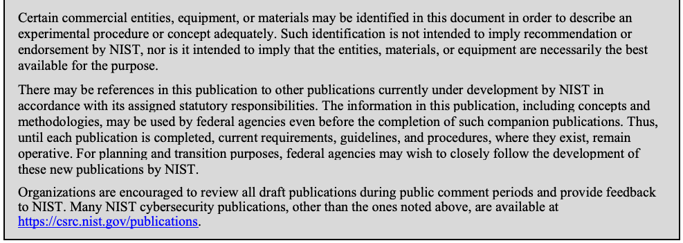
Comments on this publication may be submitted to: National Institute of Standards and Technology Attn: Computer Security Division, Information Technology Laboratory 100 Bureau Drive (Mail Stop 8930) Gaithersburg, MD 20899-8930 Email: 800-126comments@nist.gov
本刊行物へのコメントは、次の宛先に提出できます：米国国立標準技術研究所 宛先：Computer Security Division, Information Technology Laboratory 100 Bureau Drive (Mail Stop 8930) Gaithersburg, MD 20899-8930 Email: 800-126comments@nist.gov
未レビュー訳All comments are subject to release under the Freedom of Information Act (FOIA).
すべてのコメントは、情報公開法（FOIA）に基づく公開の対象となる。
Reports on Computer Systems Technology
コンピュータシステム技術に関する報告書
The Information Technology Laboratory (ITL) at the National Institute of Standards and Technology (NIST) promotes the U.S. economy and public welfare by providing technical leadership for the Nation’s measurement and standards infrastructure. ITL develops tests, test methods, reference data, proof of concept implementations, and technical analyses to advance the development and productive use of information technology. ITL’s responsibilities include the development of management, administrative, technical, and physical standards and guidelines for the cost-effective security and privacy of other than national security-related information in federal information systems. The Special Publication 800-series reports on ITL’s research, guidelines, and outreach efforts in information system security, and its collaborative activities with industry, government, and academic organizations.
米国国立標準技術研究所（NIST）の情報技術研究所（ITL）は、国家の計測および標準インフラに技術的リーダーシップを提供することにより、米国経済と公共の福祉を促進する。ITLは、情報技術の発展と効果的な利用を推進するため、試験、試験方法、参照データ、概念実証実装および技術分析を開発する。ITLの責務には、国家安全保障関連以外の情報を扱う連邦情報システムについて、費用対効果の高いセキュリティとプライバシーを実現するための管理的、運用的、技術的および物理的な標準とガイドラインの策定が含まれる。特別刊行物800シリーズは、情報システムセキュリティに関するITLの研究、ガイドラインおよび普及活動、ならびに産業界、政府機関および学術機関との協力活動を報告する。
未レビュー訳Abstract
要旨
The Security Content Automation Protocol (SCAP) is a suite of specifications that standardize the format and nomenclature by which software flaw and security configuration information is communicated, both to machines and humans. This publication, along with its annex (NIST Special Publication 800-126A) and a set of schemas, collectively define the technical composition of SCAP version 1.3 in terms of its component specifications, their interrelationships and interoperation, and the requirements for SCAP content.
Security Content Automation Protocol（SCAP）は、ソフトウェアの欠陥およびセキュリティ構成に関する情報を、機械と人間の双方に伝達する際の形式と用語を標準化する仕様群である。本刊行物は、その付属書（NIST特別刊行物800-126A）および一連のスキーマとともに、構成要素仕様、それらの相互関係と相互運用、およびSCAPコンテンツの要件の観点から、SCAPバージョン1.3の技術的構成を定義する。
Keywords
キーワード
未レビュー訳checklists; patch verification; security automation; security checklists; security configuration; Security Content Automation Protocol (SCAP); software flaws; vulnerabilities
チェックリスト；パッチ検証；セキュリティ自動化；セキュリティチェックリスト；セキュリティ構成；Security Content Automation Protocol（SCAP）；ソフトウェアの欠陥；脆弱性
未レビュー訳Acknowledgments
謝辞
The authors, David Waltermire, Stephen Quinn, and Harold Booth of the National Institute of Standards and Technology (NIST); Karen Scarfone of Scarfone Cybersecurity; and Dragos Prisaca of G2, Inc., wish to thank all contributors to this revision of the publication, particularly Melanie Cook, Lee Badger, Jim Foti, Stephen Banghart, and Joshua Lubell of NIST; Steve Grubb of Red Hat; Roger Johnson of the Centers for Disease Control and Prevention; Kent Landfield of Intel Corporation; Adam W. Montville and William K. Munyan of the Center for Internet Security; and David A. Solin of Joval Continuous Monitoring. The authors also recognize the contributions of Adam Halbardier of Booz Allen Hamilton, who co-authored Revision 1 of this publication.
著者である、米国国立標準技術研究所（NIST）のDavid Waltermire、Stephen Quinn、Harold Booth、Scarfone CybersecurityのKaren Scarfone、およびG2, Inc.のDragos Prisacaは、本刊行物の今回の改訂に貢献したすべての方々、特にNISTのMelanie Cook、Lee Badger、Jim Foti、Stephen Banghart、Joshua Lubell、Red HatのSteve Grubb、疾病予防管理センターのRoger Johnson、Intel CorporationのKent Landfield、Center for Internet SecurityのAdam W. Montville、William K. Munyan、Joval Continuous MonitoringのDavid A. Solinに謝意を表する。また、本刊行物の改訂第1版を共同執筆したBooz Allen HamiltonのAdam Halbardierの貢献にも謝意を表する。
The authors would like to acknowledge the following contributors to previous versions of this specification for their keen and insightful assistance: John Banghart, Paul Cichonski, and Blair Heiserman of NIST; Christopher Johnson of HP Enterprise Services; Paul Bartock of the National Security Agency (NSA); Jeff Ito, Matt Kerr, Shane Shaffer, and Greg Witte of G2, Inc.; Andy Bove of SecureAcuity; Jim Ronayne of Varen Technologies; Kent Landfield of McAfee, Inc.; Christopher McCormick, Rhonda Farrell, Angela Orebaugh, and Victoria Thompson of Booz Allen Hamilton; Alan Peltzman of the Defense Information Systems Agency (DISA); and Jon Baker, Drew Buttner, Maria Casipe, and Charles Schmidt of the MITRE Corporation.
著者は、鋭く洞察に富む支援を寄せてくださった本仕様の以前の版への貢献者として、NISTのJohn Banghart、Paul Cichonski、Blair Heiserman、HP Enterprise ServicesのChristopher Johnson、米国国家安全保障局（NSA）のPaul Bartock、G2, Inc.のJeff Ito、Matt Kerr、Shane Shaffer、Greg Witte、SecureAcuityのAndy Bove、Varen TechnologiesのJim Ronayne、McAfee, Inc.のKent Landfield、Booz Allen HamiltonのChristopher McCormick、Rhonda Farrell、Angela Orebaugh、Victoria Thompson、国防情報システム局（DISA）のAlan Peltzman、MITRE CorporationのJon Baker、Drew Buttner、Maria Casipe、Charles Schmidtに謝意を表します。
未レビュー訳Trademark Information
商標に関する情報
未レビュー訳OVAL is a trademark of the US Department of Homeland Security (DHS).
OVALは、米国国土安全保障省（DHS）の商標である。
CVE is a registered trademark of The MITRE Corporation.
CVEは、The MITRE Corporationの登録商標である。
Windows 7 is a registered trademark of Microsoft Corporation.
Windows 7は、Microsoft Corporationの登録商標である。
All other registered trademarks or trademarks belong to their respective organizations.
その他すべての登録商標または商標は、それぞれの組織に帰属する。
Errata
正誤表
未レビュー訳This table will contain changes that have been incorporated into NIST Special Publication 800-126 Revision 3 after the publication is finalized. Errata updates can include corrections, clarifications, or other minor changes in the publication that are either editorial or substantive in nature.
この表には、刊行物の最終版発行後にNIST Special Publication 800-126 Revision 3へ反映された変更が記載されます。正誤表の更新には、編集上または実質的な性質を持つ、刊行物の訂正、明確化、その他の軽微な変更が含まれる場合があります。
未レビュー訳| 日付 | 種類 | 変更内容 | ページ |
Table of Contents
目次
Executive Summary ....................................................................................................................viii
概要 ....................................................................................................................viii
未レビュー訳1. Introduction — 1
1. はじめに — 1
未レビュー訳1.1 Purpose and Scope — 1
1.1 目的と適用範囲 — 1
1.2 Audience — 1
1.2 対象読者 — 1
1.3 Document Structure — 1
1.3 文書の構成 — 1
未レビュー訳1.4 Document Conventions — 2
1.4 文書の表記規則 — 2
未レビュー訳2. SCAP 1.3 Conformance — 4
2. SCAP 1.3適合性 — 4
未レビュー訳2.1 Product Conformance — 5
2.1 製品適合性 — 5
未レビュー訳2.2 Source Content Conformance — 6
2.2 ソースコンテンツ適合性 — 6
未レビュー訳3. SCAP Content Requirements and Recommendations — 7
3. SCAP コンテンツの要件および推奨事項 — 7
未レビュー訳3.1 SCAP Source Data Stream — 7
3.1 SCAP ソースデータストリーム — 7
未レビュー訳3.1.1 Source Data Stream Data Model — 10
3.1.1 ソースデータストリームのデータモデル — 10
3.1.2 Source Data Stream Collection Validation — 15
3.1.2 ソースデータストリームコレクションの検証 — 15
3.1.3 Globally Unique Identifiers — 16
3.1.3 グローバル一意識別子 — 16
未レビュー訳3.2 Extensible Configuration Checklist Description Format (XCCDF) — 17
3.2 拡張可能な構成チェックリスト記述形式 (XCCDF) — 17
未レビュー訳3.2.1 General — 17
3.2.1 一般 — 17
未レビュー訳3.2.2 The <xccdf:Benchmark> Element — 17
3.2.2 <xccdf:Benchmark> 要素 — 17
3.2.3 The <xccdf:Profile> Element — 18
3.2.3 <xccdf:Profile> 要素 — 18
3.2.4 The <xccdf:Rule> Element — 18
3.2.4 <xccdf:Rule> 要素 — 18
3.2.5 The <xccdf:Value> Element — 22
3.2.5 <xccdf:Value> 要素 — 22
未レビュー訳3.2.6 The <xccdf:Group> Element — 23
3.2.6 <xccdf:Group> 要素 — 23
未レビュー訳3.3 Open Vulnerability and Assessment Language (OVAL) — 23
3.3 オープン脆弱性評価言語 (OVAL) — 23
3.4 Open Checklist Interactive Language (OCIL) — 25
3.4 オープンチェックリスト対話言語 (OCIL) — 25
3.5 Common Platform Enumeration (CPE) — 26
3.5 共通プラットフォーム一覧 (CPE) — 26
未レビュー訳3.6 Software Identification (SWID) Tags — 27
3.6 ソフトウェア識別 (SWID) タグ — 27
未レビュー訳3.7 Common Configuration Enumeration (CCE) — 27
3.7 共通構成列挙 (CCE) — 27
3.8 Common Vulnerabilities and Exposures (CVE) — 28
3.8 共通脆弱性識別子 (CVE) — 28
3.9 Common Vulnerability Scoring System (CVSS) — 28
3.9 共通脆弱性評価システム (CVSS) — 28
未レビュー訳3.10 Common Configuration Scoring System (CCSS) — 28
3.10 共通構成評価システム (CCSS) — 28
未レビュー訳3.11 XML Digital Signature — 28
3.11 XMLデジタル署名 — 28
未レビュー訳4. SCAP Content Processing Requirements and Recommendations — 30
4. SCAPコンテンツ処理の要件と推奨事項 — 30
未レビュー訳4.1 Legacy Support — 30
4.1 レガシーサポート — 30
4.2 Source Data Streams — 30
4.2 ソースデータストリーム — 30
4.3 XCCDF Processing — 31
4.3 XCCDF処理 — 31
4.3.1 CPE Applicability Processing — 31
4.3.1 CPE適用性処理 — 31
未レビュー訳4.3.2 Checking System Usage — 31
4.3.2 システム使用状況の確認 — 31
未レビュー訳4.4 SCAP Result Data Streams — 32
4.4 SCAP結果データストリーム — 32
4.4.1 The Component Reports — 33
4.4.1 コンポーネントレポート — 33
4.4.2 The Target Identification — 33
4.4.2 ターゲットの識別 — 33
4.4.3 The Source Data Stream — 34
4.4.3 ソースデータストリーム — 34
未レビュー訳4.4.4 The Relationships — 34
4.4.4 関係性 — 34
4.5 XCCDF Results — 35
4.5 XCCDFの結果 — 35
未レビュー訳4.5.1 Assigning Identifiers to Rule Results — 37
4.5.1 ルール結果への識別子の割り当て — 37
未レビュー訳4.5.2 Mapping OVAL Results to XCCDF Results — 38
4.5.2 OVALの結果からXCCDFの結果への対応付け — 38
未レビュー訳4.6 OVAL Results — 39
4.6 OVALの結果 — 39
未レビュー訳4.7 OCIL Results — 41
4.7 OCILの結果 — 41
未レビュー訳4.8 Result Data Stream Signing — 41
4.8 結果データストリームへの署名 — 41
未レビュー訳5. Source Data Stream Content Requirements for Use Cases — 43
5. ユースケースにおけるソースデータストリームコンテンツの要件 — 43
5.1 Compliance Checking — 43
5.1 適合性チェック — 43
5.2 Vulnerability Scanning — 43
5.2 脆弱性スキャン — 43
5.3 Inventory Scanning — 44
5.3 インベントリスキャン — 44
Appendix A— Security Considerations — 46
付録A — セキュリティ上の考慮事項 — 46
未レビュー訳Appendix B— Acronyms and Abbreviations — 47
付録B — 頭字語および略語 — 47
未レビュー訳Appendix C— Glossary — 48
付録C — 用語集 — 48
未レビュー訳Appendix D— Normative References — 49
付録D — 規範的参考文献 — 49
未レビュー訳Appendix E— Change Log — 50
付録E — 変更履歴 — 50
未レビュー訳List of Figures
図一覧
未レビュー訳Figure 1: Notional SCAP Data Stream Collection — 8
図1：SCAPデータストリームコレクションの概念図 — 8
Figure 2: SCAP Data Stream — 8
図2：SCAPデータストリーム — 8
Figure 3: Sample ARF Report Structure — 35
図3：ARFレポート構造の例 — 35
List of Tables
表一覧
未レビュー訳Table 1: Conventional XML Mappings — 3
表1：従来型XMLマッピング — 3
未レビュー訳Table 2: ds:data-stream-collection — 11
表2：ds:data-stream-collection — 11
未レビュー訳Table 3: ds:data-stream — 11
表3：ds:data-stream — 11
未レビュー訳Table 4: ds:dictionaries — 12
表4：ds:dictionaries — 12
未レビュー訳Table 5: ds:checklists — 12
表5：ds:checklists — 12
未レビュー訳Table 6: ds:checks — 12
表6：ds:checks — 12
未レビュー訳Table 7: ds:extended-components — 12
表7：ds:extended-components — 12
未レビュー訳Table 8: ds:component-ref — 13
表8：ds:component-ref — 13
未レビュー訳Table 9: cat:catalog — 13
表9：cat:catalog — 13
Table 10: cat:uri — 14
表10：cat:uri — 14
Table 11: cat:rewriteURI — 14
表11：cat:rewriteURI — 14
Table 12: ds:component — 14
表12：ds:component — 14
Table 13: ds:extended-component — 15
表13：ds:extended-component — 15
未レビュー訳Table 14: SCAP Source Data Stream Component Document Elements — 15
表14：SCAPソースデータストリームのコンポーネント文書要素 — 15
未レビュー訳Table 15: Element Identifier Format Convention — 16
表15：要素識別子の形式規則 — 16
未レビュー訳Table 16: Use of Dublin Core Terms in <xccdf:metadata> — 18
表16：<xccdf:metadata>におけるDublin Core Termsの使用 — 18
未レビュー訳Table 17: <xccdf:Rule> and <xccdf:ident> Element Values — 19
表17：<xccdf:Rule>要素および<xccdf:ident>要素の値 — 19
未レビュー訳Table 18: XCCDF-OVAL Data Export Matching Constraints — 23
表18：XCCDF-OVALデータエクスポートの照合制約 — 23
未レビュー訳Table 19: SCAP Result Data Stream Component Document Elements — 33
表19：SCAP結果データストリームのコンポーネント文書要素 — 33
未レビュー訳Table 20: Asset Identification Fields to Populate — 33
表20：入力する資産識別フィールド — 33
未レビュー訳Table 21: ARF Relationships — 34
表21：ARFの関係 — 34
未レビュー訳Table 22: XCCDF Fact Descriptions — 36
表22：XCCDFファクトの説明 — 36
未レビュー訳Table 23: Deriving XCCDF Check Results from OVAL Definition Results — 39
表23：OVAL定義の結果から導出するXCCDFチェック結果 — 39
未レビュー訳Table 24: Specification Locations — 49
表24：仕様の所在 — 49
未レビュー訳Executive Summary
エグゼクティブサマリー
未レビュー訳The Security Content Automation Protocol (SCAP) is a suite of specifications that standardize the format and nomenclature by which software flaw and security configuration information is communicated, both to machines and humans.1 SCAP is a multi-purpose framework of specifications that support automated configuration, vulnerability and patch checking, technical control compliance activities, and security measurement. Goals for the development of SCAP include standardizing system security management, promoting interoperability of security products, and fostering the use of standard expressions of security content. SCAP version 1.3 is comprised of twelve component specifications in five categories:
Security Content Automation Protocol（SCAP）は、ソフトウェアの欠陥およびセキュリティ構成に関する情報を、機械と人間の双方に伝達するための形式と用語を標準化する仕様群である。1 SCAPは、構成、脆弱性およびパッチの確認、技術的管理策への準拠活動、ならびにセキュリティ測定の自動化を支援する多目的仕様フレームワークである。SCAPの開発目標には、システムセキュリティ管理の標準化、セキュリティ製品間の相互運用性の促進、および標準化されたセキュリティコンテンツ表現の利用促進が含まれる。SCAPバージョン1.3は、次の5つのカテゴリに属する12のコンポーネント仕様で構成される：
未レビュー訳•Languages. The SCAP languages provide standard vocabularies and conventions for expressing security policy, technical check mechanisms, and assessment results. The SCAP language specifications are Extensible Configuration Checklist Description Format (XCCDF), Open Vulnerability and Assessment Language (OVAL), and Open Checklist Interactive Language (OCIL).
•言語。SCAP言語は、セキュリティポリシー、技術的チェック機構、および評価結果を表現するための標準語彙と規則を提供する。SCAP言語仕様は、Extensible Configuration Checklist Description Format（XCCDF）、Open Vulnerability and Assessment Language（OVAL）、およびOpen Checklist Interactive Language（OCIL）である。
•Reporting formats. The SCAP reporting formats provide the necessary constructs to express collected information in standardized formats. The SCAP reporting format specifications are Asset Reporting Format (ARF) and Asset Identification. Although Asset Identification is not explicitly a reporting format, SCAP uses it as a key component in identifying the assets that reports relate to.
•報告形式。SCAP報告形式は、収集した情報を標準形式で表現するために必要な構成要素を提供する。SCAPの報告形式仕様は、Asset Reporting Format（ARF）およびAsset Identificationである。Asset Identificationは明示的には報告形式ではないが、SCAPでは報告の対象資産を特定するための主要なコンポーネントとして使用される。
•Identification schemes. The SCAP identification schemes provide a means to identify key concepts such as software products, vulnerabilities, and configuration items using standardized identifier formats. They also provide a means to associate individual identifiers with additional data pertaining to the subject of the identifier. The SCAP identification scheme specifications are Common Platform Enumeration (CPE), Software Identification (SWID) Tags, Common Configuration Enumeration (CCE), and Common Vulnerabilities and Exposures (CVE).
•識別方式。SCAP識別方式は、ソフトウェア製品、脆弱性、構成項目などの重要な概念を標準化された識別子形式で識別する手段を提供する。また、個々の識別子を、その識別対象に関する追加データに関連付ける手段も提供する。SCAP識別方式の仕様は、Common Platform Enumeration（CPE）、Software Identification（SWID）タグ、Common Configuration Enumeration（CCE）、およびCommon Vulnerabilities and Exposures（CVE）である。
未レビュー訳•Measurement and scoring systems. In SCAP this refers to evaluating specific characteristics of a security weakness (for example, software vulnerabilities and security configuration issues) and, based on those characteristics, generating a score that reflects their relative severity. The SCAP measurement and scoring system specifications are Common Vulnerability Scoring System (CVSS) and Common Configuration Scoring System (CCSS).
•測定・スコアリングシステム。SCAPでは、セキュリティ上の弱点（例：ソフトウェアの脆弱性やセキュリティ構成上の問題）の特性を評価し、その特性に基づいて相対的な深刻度を示すスコアを生成することを指す。SCAPの測定・スコアリングシステム仕様は、Common Vulnerability Scoring System（CVSS）およびCommon Configuration Scoring System（CCSS）である。
•Integrity. An SCAP integrity specification helps to preserve the integrity of SCAP content and results. Trust Model for Security Automation Data (TMSAD) is the SCAP integrity specification.
•完全性。SCAP完全性仕様は、SCAPのコンテンツと結果の完全性を維持するのに役立つ。Trust Model for Security Automation Data（TMSAD）がSCAPの完全性仕様である。
未レビュー訳SCAP utilizes software flaw and security configuration standard reference data. This reference data is provided by the National Vulnerability Database (NVD),2 which is managed by NIST and sponsored by the Department of Homeland Security (DHS). This publication, along with its annex (NIST SP 800-126A [SP800-126A]) and a set of schemas, collectively define the technical composition of SCAP version 1.3 in terms of its component specifications, their interrelationships and interoperation, and the requirements for SCAP content. The technical specification for SCAP in these publications and schemas describes the requirements and conventions that are to be employed to ensure the consistent and accurate exchange of SCAP-conformant content and the ability to reliably use the content with SCAP-conformant products. The U.S. Federal Government, in cooperation with academia and private industry, has adopted SCAP and encourages its use in support of security automation activities and initiatives.3 SCAP has achieved widespread adoption by major software manufacturers and has become a significant component of large information security management and governance programs. The specification is expected to evolve and expand in support of the growing needs to define and measure effective security controls, assess and monitor ongoing aspects of that information security, and successfully manage systems in accordance with risk management frameworks such as NIST Special Publication 800-534, Department of Defense (DoD) Instruction 8500.01, and the Payment Card Industry (PCI) framework. By detailing the specific and appropriate usage of the SCAP 1.3 components and their interoperability, NIST encourages the creation of reliable and pervasive SCAP content and the development of a wide array of products that leverage SCAP. Organizations that develop SCAP 1.3-based content or products should comply with the following recommendations: Follow the requirements listed in this document, its annex, and the associated component specifications and set of schemas. Organizations should ensure that their implementation and use of SCAP 1.3 is compliant with the requirements detailed in each component specification, this document and its annex, and the set of schemas. If requirements are in conflict between component specifications, this document will provide clarification. If a component specification is in conflict with this document, the requirements in this document take precedence. If a component specification or this document is in conflict with the annex, the requirements in the annex take precedence. If a specification and a schema are in conflict, the requirements in the specification take precedence. When creating SCAP content, adhere to the conventions specified in this document and its annex. Security products and checklist authors assemble content from SCAP data repositories to create SCAP-conformant security guidance. For example, a security configuration checklist can document desired security configuration settings, installed patches, and other system security elements using a standardized SCAP format. Such a checklist would use XCCDF to describe the checklist, CCE to identify security configuration settings to be addressed or assessed, and CPE and SWID tags to identify platforms for which the checklist is valid. In this example, the use of CCE and CPE entries within XCCDF checklists is an example of an SCAP convention—examples of the requirements for valid SCAP 1.3 usage defined in this specification. Organizations producing SCAP content to be shared between tools should adhere to these conventions to ensure the highest degree of interoperability. NIST provides an SCAP Content Validation Tool that organizations can use to help validate the correctness of their SCAP content. The tool checks that SCAP source and result content is well-formed, all cross references are valid, and required values are appropriately set.5 Additionally, NIST provides a set of SCAP style guidelines in NISTIR 80586, which can be helpful in creating SCAP 1.2 and later content. While these guidelines are not required to be followed for content to be considered valid SCAP content, these guidelines can improve the accuracy and consistency of SCAP results, avoid performance problems, reduce user effort, lower content maintenance burdens, and enable greater content reuse.
SCAPは、ソフトウェアの欠陥およびセキュリティ構成に関する標準参照データを利用する。この参照データは、NISTが管理し、国土安全保障省（DHS）が後援するNational Vulnerability Database（NVD）2が提供する。本刊行物は、その付属書（NIST SP 800-126A［SP800-126A］）および一連のスキーマとともに、コンポーネント仕様、それらの相互関係と相互運用、およびSCAPコンテンツの要件の観点から、SCAPバージョン1.3の技術的構成を定義する。これらの刊行物およびスキーマにおけるSCAPの技術仕様は、SCAP準拠コンテンツを一貫性と正確性をもって交換し、そのコンテンツをSCAP準拠製品で確実に利用するために適用すべき要件と規則を記述する。米国連邦政府は、学界および民間産業界と協力してSCAPを採用し、セキュリティ自動化の活動および取り組みを支援するため、その利用を推奨している。3 SCAPは主要なソフトウェアメーカーに広く採用され、大規模な情報セキュリティ管理・ガバナンスプログラムの重要な構成要素となっている。この仕様は、効果的なセキュリティ管理策の定義と測定、その情報セキュリティの継続的な側面の評価と監視、およびNIST特別刊行物800-534、国防総省（DoD）指令8500.01、Payment Card Industry（PCI）フレームワークなどのリスク管理フレームワークに従ったシステム管理に対するニーズの高まりを支援するため、進化し拡張していくことが見込まれる。SCAP 1.3の各コンポーネントの具体的かつ適切な使用方法と相互運用性を詳述することで、NISTは、信頼性が高く広範に利用できるSCAPコンテンツの作成と、SCAPを活用する幅広い製品の開発を促進する。SCAP 1.3ベースのコンテンツまたは製品を開発する組織は、次の推奨事項に従うべきである：本書、その付属書、関連するコンポーネント仕様およびスキーマ一式に記載された要件に従う。組織は、SCAP 1.3の実装および使用が、各コンポーネント仕様、本書とその付属書、およびスキーマ一式に詳述された要件に準拠していることを確保するべきである。コンポーネント仕様間で要件が矛盾する場合、本書が明確化を行う。コンポーネント仕様と本書が矛盾する場合、本書の要件が優先される。コンポーネント仕様または本書と付属書が矛盾する場合、付属書の要件が優先される。仕様とスキーマが矛盾する場合、仕様の要件が優先される。SCAPコンテンツを作成する際は、本書および付属書で定める規則に従う。セキュリティ製品の開発者とチェックリスト作成者は、SCAPデータリポジトリからコンテンツを集め、SCAP準拠のセキュリティガイダンスを作成する。例えば、セキュリティ構成チェックリストでは、標準化されたSCAP形式を使い、望ましいセキュリティ構成設定、インストール済みパッチ、その他のシステムセキュリティ要素を文書化できる。このようなチェックリストでは、チェックリストの記述にXCCDFを、扱うまたは評価するセキュリティ構成設定の識別にCCEを、チェックリストの有効なプラットフォームの識別にCPEおよびSWIDタグを使用する。この例でXCCDFチェックリスト内にCCEおよびCPEエントリを使用することは、SCAP規則、すなわち本仕様で定義されたSCAP 1.3の有効な使用要件の例である。ツール間で共有するSCAPコンテンツを作成する組織は、最高水準の相互運用性を確保するため、これらの規則に従うべきである。NISTは、組織がSCAPコンテンツの正確性を検証するために利用できるSCAP Content Validation Toolを提供している。このツールは、SCAPソースコンテンツと結果コンテンツが整形式であること、すべての相互参照が有効であること、必須値が適切に設定されていることを確認する。5 さらにNISTは、NISTIR 80586でSCAPスタイルガイドラインを提供しており、SCAP 1.2以降のコンテンツ作成に役立つ場合がある。これらのガイドラインは、コンテンツを有効なSCAPコンテンツとみなすために遵守必須ではないが、SCAP結果の正確性と一貫性を高め、性能上の問題を回避し、ユーザーの作業負荷を軽減し、コンテンツの保守負担を減らし、コンテンツの再利用を促進できる。
未レビュー訳1. Introduction
1. はじめに
未レビュー訳1.1 Purpose and Scope
1.1 目的と適用範囲
This document, NIST Special Publication (SP) 800-126 Revision 3, along with its annex (NIST SP 800-126A [SP800-126A]) and a set of schemas, collectively provide the definitive technical specification for version 1.3 of the Security Content Automation Protocol (SCAP). SCAP (pronounced ess-cap) consists of a suite of specifications for standardizing the format and nomenclature by which software flaw and security configuration information is communicated, both to machines and humans. This document defines requirements for creating and processing SCAP source content. These requirements build on the requirements defined within the individual SCAP component specifications. Each new requirement pertains either to using multiple component specifications together or to further constraining one of the individual component specifications. The requirements within the individual component specifications are not repeated in this document; see those specifications to view their requirements. To extend the contents of this document, an annex has been created. The annex document specifies additional entities that may be used in SCAP 1.3 conformant content creation and processing:
本書NIST特別刊行物（SP）800-126改訂第3版は、その付属書（NIST SP 800-126A［SP800-126A］）および一連のスキーマとともに、Security Content Automation Protocol（SCAP）バージョン1.3の決定版技術仕様を提供する。SCAP（「エスキャップ」と発音）は、ソフトウェアの欠陥およびセキュリティ構成に関する情報を機械と人間の双方に伝達する形式と用語を標準化する仕様群である。本書は、SCAPソースコンテンツの作成および処理に関する要件を定義する。これらの要件は、個々のSCAPコンポーネント仕様で定義された要件を基礎とする。各新規要件は、複数のコンポーネント仕様を組み合わせて使用すること、または個々のコンポーネント仕様の制約をさらに厳しくすることのいずれかに関するものである。個々のコンポーネント仕様に含まれる要件は本書では繰り返さない。要件については各仕様を参照すること。本書の内容を拡張するため、付属書を作成した。付属書は、SCAP 1.3準拠コンテンツの作成および処理で使用できる追加のエンティティを規定する：
未レビュー訳•Particular minor version updates to SCAP 1.3 component specifications
•SCAP 1.3コンポーネント仕様の特定のマイナーバージョン更新
未レビュー訳•Particular Open Vulnerability and Assessment Language (OVAL) platform schema versions
•Open Vulnerability and Assessment Language（OVAL）プラットフォームスキーマの特定バージョン
未レビュー訳The scope of this document and its annex is limited to SCAP version 1.3. Other versions of SCAP and its component specifications are not addressed in these documents. Future versions of SCAP will be defined in distinct revisions of this document and its annex, each clearly labeled with a document revision number and the appropriate SCAP version number.
本書および付属書の適用範囲はSCAPバージョン1.3に限定される。SCAPの他のバージョンおよびそのコンポーネント仕様は、これらの文書では扱わない。将来のSCAPバージョンは、本書および付属書の個別の改訂版で定義され、各改訂版には文書の改訂番号と該当するSCAPバージョン番号が明記される。
未レビュー訳1.2 Audience
1.2 対象読者
This document is intended for three primary audiences:
本書は、主に次の3つの読者を対象とする：
•Content authors and editors seeking to ensure that the SCAP source content they produce operates correctly, consistently, and reliably in SCAP products.
•作成したSCAPソースコンテンツがSCAP製品上で正しく、一貫性と信頼性をもって動作することを確認しようとするコンテンツ作成者および編集者。
•Software developers and system integrators seeking to create, use, or exchange SCAP content in their products or service offerings.
•自社製品またはサービスでSCAPコンテンツを作成、使用、または交換しようとするソフトウェア開発者およびシステムインテグレーター。
未レビュー訳•Product developers preparing for SCAP validation at an accredited independent testing laboratory.
•認定を受けた独立試験機関でのSCAP検証に向けて準備を行う製品開発者。
This document assumes that readers already have general knowledge of SCAP and reasonable familiarity with the SCAP component specifications that their content, products, or services use. Individuals without this level of knowledge who would like to learn more about SCAP should consult NIST SP 800-117, Guide to Adopting and Using the Security Content Automation Protocol.7
本書は、読者がSCAPの一般知識をすでに有し、自身のコンテンツ、製品またはサービスが使用するSCAPコンポーネント仕様に十分親しんでいることを前提とする。この知識レベルに達しておらず、SCAPについてさらに学びたい人は、NIST SP 800-117『Security Content Automation Protocolの採用と使用に関するガイド』を参照すること。7
未レビュー訳1.3 Document Structure
1.3 文書の構成
The remainder of this document is organized into the following major sections and appendices:
本書の残りの部分は、次の主要な節および付録で構成される：
•Section 2 provides the high-level requirements for claiming conformance with the SCAP 1.3 specification.
•第2節では、SCAP 1.3仕様への適合を主張するための上位要件を示す。
•Section 3 details the requirements and recommendations for SCAP content syntax, structure, and development.
•第3節では、SCAPコンテンツの構文、構造および開発に関する要件と推奨事項を詳述する。
•Section 4 defines SCAP content processing requirements and recommendations.
•第4節では、SCAPコンテンツの処理に関する要件と推奨事項を定義する。
•Section 5 provides additional content requirements and recommendations for particular use cases.
•第5節では、特定のユースケースに関する追加のコンテンツ要件と推奨事項を示す。
未レビュー訳•Appendix A gives an overview of major security considerations for SCAP implementation.
•付録Aでは、SCAP実装に関する主要なセキュリティ上の考慮事項を概説する。
•Appendix B contains an acronym and abbreviation list.
•付録Bには、頭字語および略語の一覧を記載する。
•Appendix C contains a glossary of selected terms used in the document.
•付録Cには、本書で使用する一部の用語の用語集を記載する。
•Appendix D lists references and other resources related to SCAP 1.3.
•付録Dには、SCAP 1.3に関する参考文献およびその他のリソースを列挙する。
未レビュー訳•Appendix E provides a change log that documents significant changes to major drafts of this specification.
•付録Eには、本仕様の主要な草案に対する重要な変更を記録した変更履歴を示す。
1.4 Document Conventions
1.4 文書の規約
The key words “MUST”, “MUST NOT”, “REQUIRED”, “SHALL”, “SHALL NOT”, “SHOULD”, “SHOULD NOT”, “RECOMMENDED”, “MAY”, and “OPTIONAL” in this document are to be interpreted as described in Request for Comment (RFC) 2119 [RFC2119]. When these words appear in regular case, such as “should” or “may”, they are not intended to be interpreted as RFC 2119 key words. When a single term within a sentence is italicized, this indicates that the term is being defined. These terms and their definitions also appear in Appendix C. Some of the requirements and conventions used in this document reference Extensible Markup Language (XML) content [XMLS]. These references come in two forms, inline and indented. An example of an inline reference is: a <cpe2_dict:cpe-item> may contain <cpe2_dict:check elements that
本書におけるキーワード「MUST」、「MUST NOT」、「REQUIRED」、「SHALL」、「SHALL NOT」、「SHOULD」、「SHOULD NOT」、「RECOMMENDED」、「MAY」および「OPTIONAL」は、Request for Comment（RFC）2119 [RFC2119]に記載された意味で解釈する。これらの語が「should」や「may」のように通常の小文字で記載されている場合、RFC 2119のキーワードとして解釈する意図はない。文中で単一の用語がイタリック体で示されている場合、その用語が定義されていることを示す。これらの用語と定義は付録Cにも記載されている。本書の要件および規約の一部は、Extensible Markup Language（XML）コンテンツ[XMLS]を参照する。これらの参照にはインライン形式と字下げ形式がある。インライン参照の例：a <cpe2_dict:cpe-item> may contain <cpe2_dict:check elements that
未レビュー訳>
未レビュー訳reference OVAL Definitions. In this example the notation <cpe2_dict:cpe-item> can be replaced by the more verbose equivalent “the XML element whose qualified name is cpe2_dict:cpe-item”.
reference OVAL定義。この例では、表記<cpe2_dict:cpe-item>を、より詳しく「修飾名がcpe2_dict:cpe-itemであるXML要素」と置き換えることができる。
未レビュー訳An example of an indented reference is:
字下げ参照の例：
References to OVAL Definitions are expressed using the following format:
OVAL定義への参照は、次の形式で表す：
<cpe2_dict:check system= "http://oval.mitre.org/XMLSchema/oval-definitions-5"
<cpe2_dict:check system= "http://oval.mitre.org/XMLSchema/oval-definitions-5"
未レビュー訳"Oval_URL" Oval_inventory_definition_id
"Oval_URL" Oval_inventory_definition_id
未レビュー訳href=
href=
未レビュー訳>[
未レビュー訳]
未レビュー訳.
未レビュー訳</cpe2_dict:check>
</cpe2_dict:check>
未レビュー訳The general convention used when describing XML attributes within this document is to reference the attribute as well as its associated element including the namespace alias, employing the general form @attributeName for the <prefix:localName> "
本書でXML属性を記述する際の一般的な規約では、名前空間エイリアスを含む属性とそれに関連付けられた要素を参照し、一般形式「@attributeName for the <prefix:localName>」を用いる。"
未レビュー訳"。
未レビュー訳Indented references are intended to represent the form of actual XML content. Indented references represent literal content by the use of a
字下げ参照は、実際のXMLコンテンツの形式を表すことを意図している。字下げ参照では、リテラルコンテンツを次の方法で示す：
未レビュー訳, and parametric (freely replaceable)
、パラメトリック（自由に置換可能な）
未レビュー訳fixed-length font content by the use of an italic font. Square brackets ‘ ’ are used to designate optional content. Thus
固定幅フォントのコンテンツはイタリック体で示す。角括弧「 」はオプションのコンテンツを示す。したがって、
未レビュー訳[]
未レビュー訳" Oval_inventory_definition_id " designates optional parametric content. [ ] Both inline and indented forms use qualified names to refer to specific XML elements. A qualified name associates a named element with a namespace. The namespace identifies the XML model, and the XML schema is a definition and implementation of that model. A qualified name declares this schema-to-element association using the format ‘prefix:element-name’. The association of prefix to namespace is defined in the metadata of an XML document and varies from document to document. In this specification, the conventional mappings listed in Table 1 are used.
「Oval_inventory_definition_id」はオプションのパラメトリックコンテンツを示す。[ ] インライン形式と字下げ形式のいずれも、特定のXML要素を指すため修飾名を使用する。修飾名は、名前付き要素を名前空間に関連付ける。名前空間はXMLモデルを識別し、XMLスキーマはそのモデルの定義および実装である。修飾名は「prefix:element-name」という形式で、このスキーマと要素の関連付けを宣言する。プレフィックスと名前空間の対応関係はXML文書のメタデータで定義され、文書ごとに異なる。本仕様では、表1に示す慣例的なマッピングを使用する。
未レビュー訳Table 1: Conventional XML Mappings
表1：慣例的なXMLマッピング
未レビュー訳| Prefix | Namespace | Schema |
| ai | http://scap.nist.gov/schema/asset-identification/1.1 | Asset Identification |
| arf | http://scap.nist.gov/schema/asset-reporting-format/1.1 | ARF |
| arf-rel | http://scap.nist.gov/specifications/arf/vocabulary/relationships/1.0# | ARF relationships |
| cat | urn:oasis:names:tc:entity:xmlns:xml:catalog | XML Catalog |
| con | http://scap.nist.gov/schema/scap/constructs/1.3 | SCAP Constructs |
| cpe-dict-ext | http://scap.nist.gov/schema/cpe-extension/2.3 | CPE Dictionary 2.3 schema extension |
| cpe2 | http://cpe.mitre.org/language/2.0 | Embedded CPE references |
| cpe2-dict | http://cpe.mitre.org/dictionary/2.0 | CPE dictionaries |
| cve | http://scap.nist.gov/schema/vulnerability/0.4 | NVD/CVE data feed elements and attributes |
| dc | http://purl.org/dc/elements/1.1/ | Simple Dublin Core elements |
| ds | http://scap.nist.gov/schema/scap/source/1.2 | SCAP source data stream collection |
| dt | http://scap.nist.gov/schema/xml-dsig/1.0 | Security automation digital signature extensions |
| nvd | http://scap.nist.gov/schema/feed/vulnerability/2.0 | Base schema for NVD data feeds |
| ocil | http://scap.nist.gov/schema/ocil/2.0 | OCIL elements and attributes |
| oval | http://oval.mitre.org/XMLSchema/oval-common-5 | Common OVAL elements and attributes |
| oval-def | http://oval.mitre.org/XMLSchema/oval-definitions-5 | OVAL Definitions |
| oval-res | http://oval.mitre.org/XMLSchema/oval-results-5 | OVAL results |
| oval-sc | http://oval.mitre.org/XMLSchema/oval-system-characteristics-5 | OVAL system characteristics |
| oval-var | http://oval.mitre.org/XMLSchema/oval-variables-5 | The elements, types, and attributes that compose the core schema for encoding OVAL Variables. This schema is provided to give structure to any external variables and their values that an OVAL Definition is expecting. |
| scap-rel | http://scap.nist.gov/vocabulary/scap/relationships/1.0# | SCAP relationships |
| sch | http://purl.oclc.org/dsdl/schematron | Schematron schema used for validation |
| swid | http://standards.iso.org/iso/19770/-2/2015/schema.xsd | SWID tag documents |
| xccdf | http://checklists.nist.gov/xccdf/1.2 | XCCDF policy documents |
| xlink | http://www.w3.org/1999/xlink | XML Linking Language |
| xml | http://www.w3.org/XML/1998/namespace | Common XML attributes |
| xs | http://www.w3.org/2001/XMLSchema | XML schema |
| xxxx-def, xxxx-sc | See the annex document for the mappings for OVAL definition and system characteristic schemas | OVAL elements and attributes specific to an OS, Hardware, or Application type xxxx |
原本PDFの抜粋画像
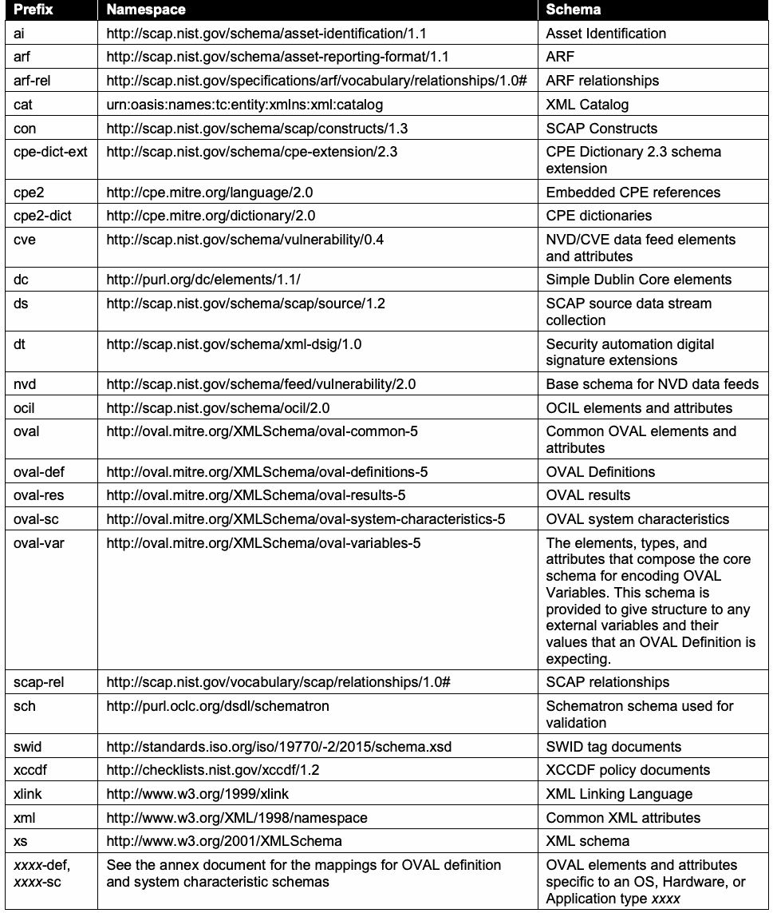
| Prefix | Namespace | スキーマ |
| ai | http://scap.nist.gov/schema/asset-identification/1.1 | Asset Identification |
| arf | http://scap.nist.gov/schema/asset-reporting-format/1.1 | ARF |
| arf-rel | http://scap.nist.gov/specifications/arf/vocabulary/relationships/1.0# | ARFの関係 |
| cat | urn:oasis:names:tc:entity:xmlns:xml:catalog | XMLカタログ |
| con | http://scap.nist.gov/schema/scap/constructs/1.3 | SCAP構成要素 |
| cpe-dict-ext | http://scap.nist.gov/schema/cpe-extension/2.3 | CPE辞書2.3スキーマ拡張 |
| cpe2 | http://cpe.mitre.org/language/2.0 | 埋め込みCPE参照 |
| cpe2-dict | http://cpe.mitre.org/dictionary/2.0 | CPE辞書 |
| cve | http://scap.nist.gov/schema/vulnerability/0.4 | NVD/CVEデータフィードの要素および属性 |
| dc | http://purl.org/dc/elements/1.1/ | Dublin Core基本要素 |
| ds | http://scap.nist.gov/schema/scap/source/1.2 | SCAPソースデータストリーム収集 |
| dt | http://scap.nist.gov/schema/xml-dsig/1.0 | セキュリティ自動化デジタル署名拡張 |
| nvd | http://scap.nist.gov/schema/feed/vulnerability/2.0 | NVDデータフィードの基本スキーマ |
| ocil | http://scap.nist.gov/schema/ocil/2.0 | OCILの要素および属性 |
| oval | http://oval.mitre.org/XMLSchema/oval-common-5 | 共通OVAL要素および属性 |
| oval-def | http://oval.mitre.org/XMLSchema/oval-definitions-5 | OVAL定義 |
| oval-res | http://oval.mitre.org/XMLSchema/oval-results-5 | OVAL結果 |
| oval-sc | http://oval.mitre.org/XMLSchema/oval-system-characteristics-5 | OVALシステム特性 |
| oval-var | http://oval.mitre.org/XMLSchema/oval-variables-5 | OVAL変数を符号化するコアスキーマを構成する要素、型および属性。このスキーマはOVAL定義が期待する外部変数およびその値に構造を与える。 |
| scap-rel | http://scap.nist.gov/vocabulary/scap/relationships/1.0# | SCAPの関係 |
| sch | http://purl.oclc.org/dsdl/schematron | 検証に使用するSchematronスキーマ |
| swid | http://standards.iso.org/iso/19770/-2/2015/schema.xsd | SWIDタグ文書 |
| xccdf | http://checklists.nist.gov/xccdf/1.2 | XCCDFポリシー文書 |
| xlink | http://www.w3.org/1999/xlink | XML Linking Language |
| xml | http://www.w3.org/XML/1998/namespace | 共通XML属性 |
| xs | http://www.w3.org/2001/XMLSchema | XMLスキーマ |
| xxxx-def, xxxx-sc | See the annex document for the mappings for OVAL definition and system characteristic schemas | OVALの定義およびシステム特性スキーマのマッピングについては付属書を参照 |
2. SCAP 1.3 Conformance
2. SCAP 1.3への適合
未レビュー訳The major versions of the component specifications included in SCAP 1.3 are as follows:
SCAP 1.3に含まれるコンポーネント仕様の主要バージョンは、次のとおりである：
•Languages
•言語
未レビュー訳Extensible Configuration Checklist Description Format (XCCDF) 1.2, a language for authoring o security checklists/benchmarks and for reporting results of evaluating them [XCCDF] Open Vulnerability and Assessment Language (OVAL) 5.11, a language for representing system o configuration information, assessing machine state, and reporting assessment results [OVAL]8 Open Checklist Interactive Language (OCIL) 2.0, a language for representing checks that collect o information from people or from existing data stores made by other data collection efforts [OCIL]
Extensible Configuration Checklist Description Format（XCCDF）1.2。セキュリティチェックリスト／ベンチマークを作成し、それらの評価結果を報告するための言語[XCCDF]。Open Vulnerability and Assessment Language（OVAL）5.11。システム構成情報を表し、マシンの状態を評価し、評価結果を報告するための言語[OVAL]8。Open Checklist Interactive Language（OCIL）2.0。人または他のデータ収集活動で作成された既存のデータストアから情報を収集するチェックを表す言語[OCIL]。
未レビュー訳•Reporting formats
•報告形式
未レビュー訳Asset Reporting Format (ARF) 1.1, a format for expressing the transport format of information o about assets and the relationships between assets and reports [ARF] Asset Identification 1.1, a format for uniquely identifying assets based on known identifiers o and/or known information about the assets [AI]
Asset Reporting Format（ARF）1.1。資産および資産と報告書との関係に関する情報の転送形式を表す形式[ARF]。Asset Identification 1.1。既知の識別子および／または資産に関する既知情報に基づいて資産を一意に識別する形式[AI]。
未レビュー訳•Identification schemes
•識別方式
未レビュー訳Common Platform Enumeration (CPE) 2.3, a nomenclature and dictionary of hardware, operating o systems, and applications [CPE] Software Identification (SWID) Tags 2015 revision, a format for representing software identifiers o and associated metadata9 [SWID] Common Configuration Enumeration (CCE) 5, a nomenclature and dictionary of softwareo security configurations [CCE] Common Vulnerabilities and Exposures (CVE), a nomenclature and dictionary of security-related o software flaws10 [CVE]
Common Platform Enumeration（CPE）2.3。ハードウェア、オペレーティングシステムおよびアプリケーションの命名法と辞書[CPE]。Software Identification（SWID）タグ 2015年改訂版。ソフトウェア識別子および関連メタデータを表す形式9 [SWID]。Common Configuration Enumeration（CCE）5。ソフトウェアセキュリティ構成の命名法と辞書[CCE]。Common Vulnerabilities and Exposures（CVE）。セキュリティ関連ソフトウェアの欠陥の命名法と辞書10 [CVE]。
未レビュー訳•Measurement and scoring systems
•測定・スコアリングシステム
未レビュー訳Common Vulnerability Scoring System (CVSS) 3, a system for measuring the relative severity of o software flaw vulnerabilities [CVSS] Common Configuration Scoring System (CCSS) 1.0, a system for measuring the relative severity o of system security configuration issues [CCSS]
Common Vulnerability Scoring System（CVSS）3。ソフトウェア欠陥の脆弱性の相対的な深刻度を測定するシステム[CVSS]。Common Configuration Scoring System（CCSS）1.0。システムセキュリティ構成上の問題の相対的な深刻度を測定するシステム[CCSS]。
未レビュー訳•Integrity
•完全性
未レビュー訳Trust Model for Security Automation Data (TMSAD) 1.0, a specification for using digital o signatures in a common trust model applied to other security automation specifications [TMSAD]. All references to these specifications within this document are to the minor version numbers listed in the annex.11 These versions represent the baseline of interoperability for all SCAP products supporting SCAP 1.3. Support for older versions of these specifications may be included in an SCAP 1.3 product. When doing so, it is important that legacy SCAP version support does not interfere with the product’s ability to address the requirements in this specification and the annex. In some cases, support for specific legacy versions of these specifications is required by this specification, such as the requirements discussed in Section 4.1. Combinations of these specifications can be used together for particular functions, such as security configuration checking. These functions, known as SCAP use cases, are ways in which a product can use SCAP. The collective XML content used for a use case is called an SCAP data stream, which is a specific instantiation of SCAP content. There are two types of SCAP data streams: an SCAP source data stream holds the input content, and an SCAP result data stream holds the output content. The major elements of a data stream, such as an XCCDF benchmark or a set of OVAL Definitions, are referred to as stream components. Products and source content may want to claim conformance to one or more of the SCAP use cases, which are defined in Section 5 of this document, for a variety of reasons. For example, a product may want to assert that it uses SCAP content properly and can interoperate with other products using valid SCAP content. Another example is a policy mandating that an organization use SCAP source content for performing vulnerability assessments and other security operations. This section provides the high-level requirements that a product or source content must meet for conformance with the SCAP 1.3 specification. Such products and source content are referred to as SCAP conformant. Most of the requirements listed in this section reference other sections in the document that fully define the requirements. If requirements are in conflict between component specifications, this document will provide clarification. If a component specification is in conflict with this document, the requirements in this document SHALL take precedence. This document will be republished with errata as needed, and in such cases the errata SHALL take precedence over the original document content. The requirements in NIST SP 800-126A [SP800-126A] SHALL take precedence over conflicting requirements in this document or the component specifications. If an SCAP specification or component specification and a schema are in conflict, the requirements in the specification SHALL take precedence over all conflicting requirements in the schema.
Trust Model for Security Automation Data（TMSAD）1.0。デジタル署名を他のセキュリティ自動化仕様にも適用される共通の信頼モデルで使用するための仕様[TMSAD]。本書におけるこれらの仕様へのすべての参照は、付属書に記載されたマイナーバージョン番号を指す。11 これらのバージョンは、SCAP 1.3をサポートするすべてのSCAP製品における相互運用性の基準となる。SCAP 1.3製品は、これらの仕様の旧バージョンもサポートする場合がある。その場合、従来のSCAPバージョンのサポートが、本仕様および付属書の要件に対応する製品の能力を妨げないことが重要である。本仕様では、4.1節で説明する要件など、特定の旧バージョンのサポートを求める場合がある。これらの仕様を組み合わせて、セキュリティ構成チェックなどの特定機能に使用できる。SCAPユースケースと呼ばれるこれらの機能は、製品がSCAPを使用する方法である。ユースケースに使用されるXMLコンテンツ全体はSCAPデータストリームと呼ばれ、SCAPコンテンツを具体的に実体化したものである。SCAPデータストリームには2種類ある。SCAPソースデータストリームは入力コンテンツを保持し、SCAP結果データストリームは出力コンテンツを保持する。XCCDFベンチマークやOVAL定義の集合など、データストリームの主要な要素をストリームコンポーネントと呼ぶ。製品およびソースコンテンツは、さまざまな理由から、本書の第5節で定義する1つ以上のSCAPユースケースへの適合を主張する場合がある。例えば、製品はSCAPコンテンツを適切に使用し、有効なSCAPコンテンツを使用する他の製品と相互運用できることを主張できる。別の例として、脆弱性評価などのセキュリティ運用を実施するため、組織にSCAPソースコンテンツの使用を義務付けるポリシーがある。本節では、製品またはソースコンテンツがSCAP 1.3仕様への適合に必要な上位要件を示す。このような製品およびソースコンテンツをSCAP準拠と呼ぶ。本節に記載する要件の大半は、要件を完全に定義する本書の他の節を参照する。コンポーネント仕様間で要件が矛盾する場合、本書が明確化する。コンポーネント仕様と本書が矛盾する場合、本書の要件が優先しなければならない（SHALL）。本書は必要に応じて正誤表とともに再発行され、その場合、正誤表は原文書の内容に優先しなければならない（SHALL）。NIST SP 800-126A [SP800-126A]の要件は、本書またはコンポーネント仕様の矛盾する要件に優先しなければならない（SHALL）。SCAP仕様またはコンポーネント仕様とスキーマが矛盾する場合、仕様の要件はスキーマ内の矛盾するすべての要件に優先しなければならない（SHALL）。
未レビュー訳2.1 Product Conformance
2.1 製品の適合性
There are two types of SCAP-conformant products: content producers and content consumers. Content producers are products that generate SCAP source data stream content, while content consumers are products that accept existing SCAP source data stream content, process it, and produce SCAP result data streams. Products claiming conformance with the SCAP 1.3 specification SHALL comply with the following requirements:
SCAP準拠製品には、コンテンツ生成製品とコンテンツ利用製品の2種類がある。コンテンツ生成製品はSCAPソースデータストリームのコンテンツを生成する製品である。コンテンツ利用製品は既存のSCAPソースデータストリームのコンテンツを受け入れて処理し、SCAP結果データストリームを生成する製品である。SCAP 1.3仕様への適合を主張する製品は、次の要件に準拠しなければならない（SHALL）：
1.Adhere to the requirements detailed in each applicable component specification (for each selected SCAP component specification, and for each SCAP component specification required to implement the selected SCAP use cases). The authoritative references for each specification are listed in the annex, NIST SP 800-126A [SP800-126A].
1.適用される各コンポーネント仕様（選択した各SCAPコンポーネント仕様、および選択したSCAPユースケースを実装するために必要な各SCAPコンポーネント仕様）に詳述された要件に従うこと。各仕様の正式な参照先は付属書NIST SP 800-126A [SP800-126A]に記載されている。
未レビュー訳2.Adhere to the requirements detailed in the errata for this document and for NIST SP 800-126A.
2.本書およびNIST SP 800-126Aの正誤表に詳述された要件に従うこと。
3.For content producers, generate well-formed SCAP source data streams. This includes following the source content conformance requirements specified in Section 2.2, and following the requirements in Section 5 for the use cases that the content producer supports.
3.コンテンツ生成製品の場合、整形式のSCAPソースデータストリームを生成すること。これには、2.2節で規定するソースコンテンツの適合要件、およびコンテンツ生成製品がサポートするユースケースに関する第5節の要件に従うことが含まれる。
4.For content consumers, consume and process well-formed SCAP source data streams, and generate well-formed SCAP result data streams. This includes following all of the processing
4.コンテンツ利用製品の場合、整形式のSCAPソースデータストリームを取り込み処理し、整形式のSCAP結果データストリームを生成すること。これには、選択した各SCAPコンポーネント仕様および選択したSCAPユースケースの実装に必要な各SCAPコンポーネント仕様について、処理に関する
未レビュー訳requirements defined in Section 4 for each selected SCAP component specification and each SCAP component specification required to implement the selected SCAP use cases.
第4節で定義する要件すべてに従うこと。
未レビュー訳5.Make an explicit claim of conformance to this specification in any documentation provided to end users.
5.エンドユーザー向けに提供するすべての文書で、本仕様への適合を明示的に主張すること。
2.2 Source Content Conformance
2.2 ソースコンテンツの適合性
Source content (i.e., source data streams) claiming conformance with the SCAP 1.3 specification SHALL comply with the following requirements:
SCAP 1.3仕様への適合を主張するソースコンテンツ（すなわちソースデータストリーム）は、次の要件に準拠しなければならない（SHALL）：
1.Adhere to the requirements detailed in each applicable component specification (for each selected SCAP component specification, and each SCAP component specification required to implement the selected SCAP use cases). The authoritative references for each specification are listed in the annex, NIST SP 800-126A [SP800-126A].
1.適用される各コンポーネント仕様（選択した各SCAPコンポーネント仕様、および選択したSCAPユースケースの実装に必要な各SCAPコンポーネント仕様）に詳述された要件に従うこと。各仕様の正式な参照先は付属書NIST SP 800-126A [SP800-126A]に記載されている。
未レビュー訳2.Adhere to the requirements detailed in the errata for this document and for NIST SP 800-126A.
2.本書およびNIST SP 800-126Aの正誤表に詳述された要件に従うこと。
3.Follow all of the syntax, structural, and other source content design requirements defined in Section 3 for each selected SCAP component specification and for each SCAP component specification required to implement the selected SCAP use cases. Also, follow all of the requirements specified for the content’s use cases as defined in Section 5.
3.選択した各SCAPコンポーネント仕様、および選択したSCAPユースケースの実装に必要な各SCAPコンポーネント仕様について、第3節で定義する構文、構造、その他すべてのソースコンテンツ設計要件に従うこと。また、第5節で定義するコンテンツのユースケースに関する要件すべてに従うこと。
3. SCAP Content Requirements and Recommendations
3. SCAPコンテンツの要件と推奨事項
未レビュー訳This section defines the SCAP 1.3 content syntax, structure, and development requirements and recommendations for SCAP-conformant content and products. Organizations are encouraged to adopt the optional recommendations to promote stronger interoperability and greater content consistency. The first part of the section discusses SCAP source data streams. The middle of the section groups requirements and recommendations by specification: XCCDF, OVAL, OCIL, CPE, SWID, CCE, CVE, CVSS, and CCSS, in that order. Finally, the last part of the section discusses applying XML digital signatures to source data streams.
本節では、SCAP準拠コンテンツおよび製品に関するSCAP 1.3のコンテンツ構文、構造、開発要件と推奨事項を定義する。組織には、相互運用性の向上とコンテンツの一貫性強化のため、任意の推奨事項を採用することが推奨される。本節の最初の部分ではSCAPソースデータストリームを扱う。中盤では、仕様ごとに要件と推奨事項をまとめ、XCCDF、OVAL、OCIL、CPE、SWID、CCE、CVE、CVSS、CCSSの順に説明する。最後に、ソースデータストリームへのXMLデジタル署名の適用について説明する。
未レビュー訳3.1 SCAP Source Data Stream
3.1 SCAPソースデータストリーム
This section discusses SCAP source data streams only; SCAP result data streams are discussed in Section 4.4 as part of the requirements for SCAP processing. An SCAP source data stream collection is composed of SCAP data streams and SCAP source components. See https://scap.nist.gov/revision/1.3/#example for a sample of an SCAP source data stream collection and its sections. The components section contains an unbounded number of SCAP source components, each consisting of data expressed using one or more of the SCAP specifications. The data streams section contains one or more source data streams, each of which references the source components in the components section that compose the data stream. This model allows source components to be reused across multiple data streams. Many data streams are allowed in a data stream collection to allow grouping of related or similar source data streams. For example, NIST currently distributes the United States Government Configuration Baseline (USGCB)12 as a series of SCAP bundles. Source data streams that are similar or related (e.g., Microsoft Windows 7 content and Microsoft Windows 7 Firewall content) may be bundled into the same source data stream collection.
本節ではSCAPソースデータストリームのみを扱う。SCAP結果データストリームは、SCAP処理要件の一部として4.4節で扱う。SCAPソースデータストリームコレクションは、SCAPデータストリームとSCAPソースコンポーネントで構成される。SCAPソースデータストリームコレクションおよびその各セクションの例については、https://scap.nist.gov/revision/1.3/#example を参照。コンポーネントセクションには、1つ以上のSCAP仕様を用いて表現されるデータから成るSCAPソースコンポーネントが、上限なく含まれる。データストリームセクションには1つ以上のソースデータストリームが含まれ、それぞれが、データストリームを構成するコンポーネントセクション内のソースコンポーネントを参照する。このモデルにより、複数のデータストリーム間でソースコンポーネントを再利用できる。関連または類似するソースデータストリームをグループ化できるよう、データストリームコレクションには複数のデータストリームを含めることができる。例えば、NISTは現在、米国政府構成基準（USGCB）12を一連のSCAPバンドルとして配布している。類似または関連するソースデータストリーム（例：Microsoft Windows 7のコンテンツとMicrosoft Windows 7 Firewallのコンテンツ）を同じソースデータストリームコレクションにまとめることができる。
未レビュー訳Figure 1 shows a possible relationship between data stream collections, data streams, and components. In Figure 1, data stream 1 points to xccdf1, xccdf2, oval1, oval3, cpe dict1, and cpe dict2. Data stream 2 points to xccdf2, oval2, oval3, and cpe dict2. Each data stream is a collection of links to the components it references, represented as a
図1は、データストリームコレクション、データストリームおよびコンポーネント間の関係の例を示す。図1では、データストリーム1はxccdf1、xccdf2、oval1、oval3、cpe dict1およびcpe dict2を指す。データストリーム2はxccdf2、oval2、oval3およびcpe dict2を指す。各データストリームは、参照するコンポーネントへのリンクをまとめたものであり、これは次の
未レビュー訳. Each component-ref encapsulates the information
で表される。各component-refは、コンテンツ利用者がコンテンツに埋め込まれたコンポーネントを、使用するデータストリームコンポーネントに関連付けるために必要な情報をカプセル化する。
未レビュー訳<ds:component-ref>
<ds:component-ref>
未レビュー訳required to allow the content consumer to connect the components that are embedded in content together with the data stream component that should be used. Content authors MAY place components in any order. For example, some authors might choose to place dictionary components first to help optimize data stream parsing.
コンテンツ作成者は、コンポーネントを任意の順序で配置してもよい（MAY）。例えば、データストリームの解析を最適化するため、辞書コンポーネントを先頭に置く作成者もいる。
未レビュー訳Data Stream Collection
データストリームコレクション
未レビュー訳xccdf1
xccdf1
未レビュー訳xccdf2
xccdf2
未レビュー訳Data Stream 1
データストリーム1
未レビュー訳oval1
oval1
未レビュー訳oval2
oval2
未レビュー訳oval3
oval3
未レビュー訳Data Stream 2
データストリーム2
未レビュー訳cpe dict1
cpe dict1
未レビュー訳cpe dict2
cpe dict2
未レビュー訳data streams
データストリーム
未レビュー訳components
コンポーネント
未レビュー訳Figure 1: Notional SCAP Data Stream Collection
図1：SCAPデータストリームコレクションの概念図
未レビュー訳Links in a
a内のリンク
未レビュー訳element serve two purposes: to indicate which component is being
要素には2つの目的がある。参照先のコンポーネントを示すことと、
未レビュー訳<ds:component-ref>
<ds:component-ref>
未レビュー訳referred to, and to provide a map to associate references within a component to other links within the data stream. The latter allows a data stream to define context for each component’s references within the bounds of the data stream’s own set of links. Figure 2 provides a conceptual example that illustrates how a data stream is constructed.
参照先を示すこと、ならびにコンポーネント内の参照をデータストリーム内の他のリンクに関連付けるマップを提供することである。後者により、データストリームは独自のリンク集合の範囲内で、各コンポーネントの参照にコンテキストを定義できる。図2は、データストリームの構築方法を示す概念例である。
未レビュー訳datastream
データストリーム
未レビュー訳checklists
チェックリスト
未レビュー訳checks
チェック
未レビュー訳dictionaries
辞書
未レビュー訳component-ref: scap_id_cref_ref2 component-ref: scap_id_cref_ref3 component-ref: scap_id_cref_ref1 Mapping
component-ref: scap_id_cref_ref2 component-ref: scap_id_cref_ref3 component-ref: scap_id_cref_ref1 マッピング
未レビュー訳Mapping To: #scap_id_cref_ref3
マッピング先：#scap_id_cref_ref3
未レビュー訳To: #scap_id_cref_ref3
先：#scap_id_cref_ref3
未レビュー訳From: dict-oval-comp
元：dict-oval-comp
未レビュー訳From: sample-oval-comp
元：sample-oval-comp
未レビュー訳Link: scap_id_comp_xccdf1
リンク：scap_id_comp_xccdf1
未レビュー訳Link: scap_id_comp_oval1
リンク：scap_id_comp_oval1
未レビュー訳Link: scap_id_comp_dict1
リンク：scap_id_comp_dict1
未レビュー訳component: scap_id_comp_xccdf1 component: scap_id_comp_oval1 component: scap_id_comp_dict1
component: scap_id_comp_xccdf1 component: scap_id_comp_oval1 component: scap_id_comp_dict1
未レビュー訳XCCDF Checklist
XCCDFチェックリスト
未レビュー訳OVAL Definitions
OVAL定義
未レビュー訳CPE Dictionary
CPE辞書
未レビュー訳References: sample-oval-comp
参照先：sample-oval-comp
未レビュー訳References: dict-oval-comp
参照先：dict-oval-comp
未レビュー訳Figure 2: SCAP Data Stream
図2：SCAPデータストリーム
未レビュー訳The following XML is a stripped-down example of the source data stream depicted in Figure 2.
以下のXMLは、図2に示すソースデータストリームを簡略化した例である。
未レビュー訳原本PDFの抜粋画像
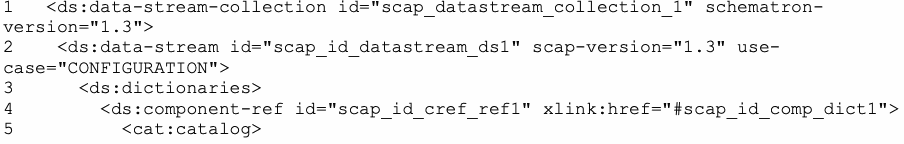
| 6 <cat:uri name="dict-oval-comp" uri="#scap_id_cref_ref3"/> | |
| 7 </cat:catalog> | |
| 8 </ds:component-ref> | |
| 9 </ds:dictionaries> | |
| 10 <ds:checklists> | |
| 11 <ds:component-ref id="scap_id_cref_ref2" xlink:href="#scap_id_comp_xccdf1"> | |
| 12 <cat:catalog> | |
| 13 <cat:uri name="sample-oval-comp" uri="#scap_id_cref_ref3"/> | |
| 14 </cat:catalog> | |
| 15 </ds:component-ref> | |
| 16 </ds:checklists> | |
| 17 <ds:checks> | |
| 18 <ds:component-ref id="scap_id_cref_ref3" xlink:href="#scap_id_comp_oval1"/> | |
| 19 </ds:checks> | |
| 20 </ds:data-stream> | |
| 21 <ds:component id="scap_id_comp_xccdf1" timestamp="2016-01-22T14:00:00"> | |
| 22 <xccdf:Benchmark id="xccdf_gov.nist_benchmark_SCAP13" style=" | SCAP_1.3"> |
| 23 … | |
| 24 <xccdf:Rule id="xccdf_gov.nist_rule_id-001"> | |
| 25 <xccdf:check system="http://oval.mitre.org/XMLSchema/oval-definitions-5"> | |
| 26 <xccdf:check-content-ref href="sample-oval-comp" | |
| name="oval:gov.nist:def:1"/> | |
| 27 </xccdf:check> | |
| 28 </xccdf:Rule> | |
| 29 </xccdf:Benchmark> | |
| 30 </ds:component> | |
| 31 <ds:component id="scap_id_comp_oval1" timestamp="2016-01-22T14:00:00"> | |
| 32 <oval-def:oval_definitions>...</oval-def:oval_definitions> | |
| 33 </ds:component> | |
| 34 <ds:component id="scap_id_comp_dict1" timestamp="2016-01-22T14:00:00"> | |
| 35 <cpe2-dict:cpe-list> | |
| 36 <cpe2-dict:cpe-item | |
| name="cpe:/a:oracle:database_server:11.1.0.6.0::enterprise"> | |
| 37 <cpe2-dict:check href="dict-oval-comp" | |
| 38 system="http://oval.mitre.org/XMLSchema/oval-definitions-5”> | |
| 39 oval:gov.nist:def:2</cpe2-dict:check> | |
| 40 <cpe-dict-ext:cpe23-item | |
| 41 name="cpe:2.3:a:oracle:database_server:11.1.0.6.0:-:-:-:enterprise:-:-:- | |
| "/> | |
| 42 </cpe2-dict:cpe-item> | |
| 43 </cpe2-dict:cpe-list> | |
| 44 </ds:component> | |
| 45 </ds:data-stream-collection> |
原本PDFの抜粋画像
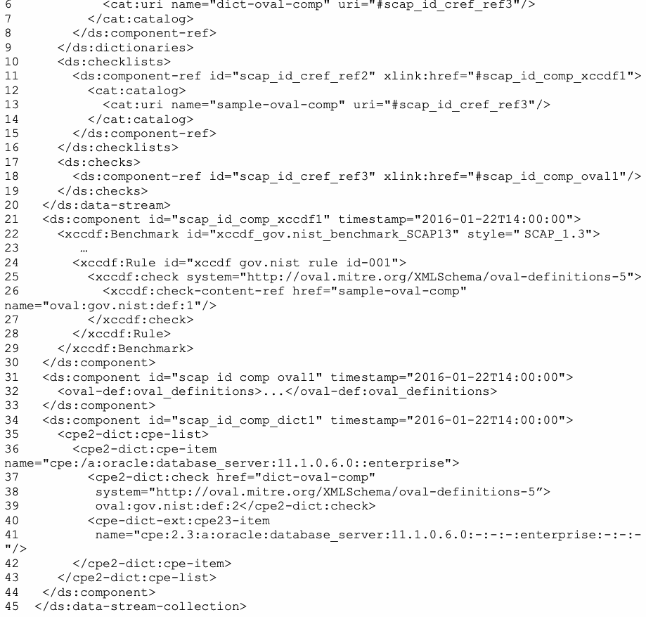
| 6 <cat:uri name="dict-oval-comp" uri="#scap_id_cref_ref3"/> | |
| 7 </cat:catalog> | |
| 8 </ds:component-ref> | |
| 9 </ds:dictionaries> | |
| 10 <ds:checklists> | |
| 11 <ds:component-ref id="scap_id_cref_ref2" xlink:href="#scap_id_comp_xccdf1"> | |
| 12 <cat:catalog> | |
| 13 <cat:uri name="sample-oval-comp" uri="#scap_id_cref_ref3"/> | |
| 14 </cat:catalog> | |
| 15 </ds:component-ref> | |
| 16 </ds:checklists> | |
| 17 <ds:checks> | |
| 18 <ds:component-ref id="scap_id_cref_ref3" xlink:href="#scap_id_comp_oval1"/> | |
| 19 </ds:checks> | |
| 20 </ds:data-stream> | |
| 21 <ds:component id="scap_id_comp_xccdf1" timestamp="2016-01-22T14:00:00"> | |
| 22 <xccdf:Benchmark id="xccdf_gov.nist_benchmark_SCAP13" style=" | SCAP_1.3"> |
| 23 … | |
| 24 <xccdf:Rule id="xccdf_gov.nist_rule_id-001"> | |
| 25 <xccdf:check system="http://oval.mitre.org/XMLSchema/oval-definitions-5"> | |
| 26 <xccdf:check-content-ref href="sample-oval-comp" | |
| name="oval:gov.nist:def:1"/> | |
| 27 </xccdf:check> | |
| 28 </xccdf:Rule> | |
| 29 </xccdf:Benchmark> | |
| 30 </ds:component> | |
| 31 <ds:component id="scap_id_comp_oval1" timestamp="2016-01-22T14:00:00"> | |
| 32 <oval-def:oval_definitions>...</oval-def:oval_definitions> | |
| 33 </ds:component> | |
| 34 <ds:component id="scap_id_comp_dict1" timestamp="2016-01-22T14:00:00"> | |
| 35 <cpe2-dict:cpe-list> | |
| 36 <cpe2-dict:cpe-item | |
| name="cpe:/a:oracle:database_server:11.1.0.6.0::enterprise"> | |
| 37 <cpe2-dict:check href="dict-oval-comp" | |
| 38 system="http://oval.mitre.org/XMLSchema/oval-definitions-5”> | |
| 39 oval:gov.nist:def:2</cpe2-dict:check> | |
| 40 <cpe-dict-ext:cpe23-item | |
| 41 name="cpe:2.3:a:oracle:database_server:11.1.0.6.0:-:-:-:enterprise:-:-:- | |
| "/> | |
| 42 </cpe2-dict:cpe-item> | |
| 43 </cpe2-dict:cpe-list> | |
| 44 </ds:component> | |
| 45 </ds:data-stream-collection> |
In Figure 2, the data stream links to three components. The OVAL component scap_id_comp_oval1 [see XML lines 31-33 above] does not reference external content, so there are no mappings captured for the OVAL component. The XCCDF component (scap_id_comp_xccdf1) [see XML lines 21-30] and the CPE Dictionary component (scap_id_comp_dict1) [see XML lines 34-44] reference other components (e.g., scap_id_cref_ref3). When referencing components within the example data stream, a mapping indicates that when scap_id_comp_xccdf1 references “sample-oval-comp”, the content is found through the link to the component identified as “scap_id_comp_oval1” [see XML lines 26, 13, and 18]. Similarly, when the scap_id_comp_dict1 component references “dict-oval-comp”, the component reference is resolved through the link to the component identified as “scap_id_comp_oval1” [see XML lines 37, 6, and 18]. This approach associates SCAP components within a data stream at the SCAP logical level, allowing components to be reused across data streams within the same data stream collection. This reuse can be accomplished irrespective of how references are made within a given component.
図2では、データストリームは3つのコンポーネントにリンクしている。OVALコンポーネントscap_id_comp_oval1［上記XMLの31～33行を参照］は外部コンテンツを参照しないため、OVALコンポーネントについて記録されるマッピングはない。XCCDFコンポーネント（scap_id_comp_xccdf1）［XMLの21～30行を参照］とCPE辞書コンポーネント（scap_id_comp_dict1）［XMLの34～44行を参照］は、他のコンポーネント（例：scap_id_cref_ref3）を参照する。例のデータストリーム内でコンポーネントを参照する場合、マッピングにより、scap_id_comp_xccdf1が「sample-oval-comp」を参照するとき、そのコンテンツが「scap_id_comp_oval1」と識別されたコンポーネントへのリンクを通じて見つかることが示される［XMLの26、13、18行を参照］。同様に、scap_id_comp_dict1コンポーネントが「dict-oval-comp」を参照する場合、コンポーネント参照は「scap_id_comp_oval1」と識別されたコンポーネントへのリンクを通じて解決される［XMLの37、6、18行を参照］。この方法では、SCAP論理レベルでデータストリーム内のSCAPコンポーネントを関連付けるため、同一のデータストリームコレクション内でデータストリームをまたいでコンポーネントを再利用できる。この再利用は、個々のコンポーネント内で参照がどのように行われるかにかかわらず実現できる。
未レビュー訳The design of the SCAP source data stream is important for the following reasons:
SCAPソースデータストリームの設計が重要である理由は次のとおりである：
1.Individual components may be developed outside of an SCAP data stream where the linking to other components is not necessarily known at the time the component is created.
1.個々のコンポーネントはSCAPデータストリームの外部で開発される場合があり、その場合、コンポーネント作成時点では他のコンポーネントへのリンクが必ずしも判明していない。
未レビュー訳2.The SCAP source data stream creates links between different components that were not necessarily designed to reference each other. For example, XCCDF was not designed to reference a particular checking system; it can reference OVAL, OCIL, and other checking systems.
2.SCAPソースデータストリームは、相互参照するよう設計されているとは限らない異なるコンポーネント間にリンクを作成する。例えば、XCCDFは特定のチェックシステムを参照するよう設計されていないが、OVAL、OCIL、およびその他のチェックシステムを参照できる。
未レビュー訳3.The logical link mapping in the data stream places a layer of capability within the data stream to control the dereferencing of URIs within components, creating a complete solution related to bundling components.
3.データストリーム内の論理リンクマッピングは、コンポーネント内のURI参照を制御する機能レイヤーをデータストリームに設け、コンポーネントのバンドルに関する包括的なソリューションを実現する。
4.The SCAP source data stream format is intended to be easily adaptable for use in future communication models such as web services, transport protocols, tasking mechanisms, etc.
4.SCAPソースデータストリーム形式は、Webサービス、トランスポートプロトコル、タスク処理機構など、将来の通信モデルで使用できるよう容易に適応できることを意図している。
5.The SCAP source data stream format supports more comprehensive validation of component content, including interrelationships between components.
5.SCAPソースデータストリーム形式は、コンポーネント間の相互関係を含め、コンポーネントコンテンツのより包括的な検証をサポートする。
未レビュー訳3.1.1 Source Data Stream Data Model
3.1.1 ソースデータストリームのデータモデル
The tables in this section formalize the SCAP source data stream data model. The tables contain requirements and SHALL be interpreted as follows:
本節の表は、SCAPソースデータストリームのデータモデルを形式化する。これらの表には要件が含まれ、次のように解釈しなければならない（SHALL）：
•The “Element Name” field indicates the name for the XML element being described. Each element name has a namespace prefix indicating the namespace to which the element belongs. See Table 1 for a mapping of namespace prefixes to namespaces.
•「要素名」フィールドは、説明対象となるXML要素の名前を示す。各要素名には、その要素が属する名前空間を示す名前空間プレフィックスが付く。名前空間プレフィックスと名前空間の対応については表1を参照。
未レビュー訳•The “Element Definition” field indicates the prose description of the element. The definition field MAY contain key words as indicated in [RFC2119].
•「要素の定義」フィールドは、要素の説明文を示す。定義フィールドには[RFC2119]で示されるキーワードを含めてもよい（MAY）。
•The “Properties” field is broken into four subfields:
•「プロパティ」フィールドは、次の4つのサブフィールドに分かれる：
The “Name” column indicates the name of a property that MAY, SHOULD, or SHALL be o included in the described element, in accordance with the cardinality indicated in the “Count” column and any [RFC2119] requirement words in the “Property Definition” column. The “Type” column indicates the REQUIRED data type for the value of the property. There o are two categories of types: literal and element. A literal type indicates the type of literal as defined in [XMLS]. An element type references the name of another element that ultimately defines that property. The “Count” column indicates the cardinality of the property within the element. The o property SHALL be included in the element in accordance with the cardinality. If a range is given, and “n” is the upper bound of the range, then the upper limit SHALL be unbounded. The “Property Definition” column defines the property in the context of the element. The o definition MAY contain key words as indicated in [RFC2119].
「名前」列は、「カウント」列で示す多重度、および「プロパティの定義」列にある[RFC2119]の要件語に従って、説明対象の要素に含めてもよい（MAY）、含めることが推奨される（SHOULD）、または含めなければならない（SHALL）プロパティの名前を示す。「型」列は、プロパティ値に必要なREQUIREDデータ型を示す。型にはリテラル型と要素型の2種類がある。リテラル型は[XMLS]で定義されるリテラルの型を示す。要素型は、そのプロパティを最終的に定義する別の要素の名前を参照する。「カウント」列は、要素内におけるプロパティの多重度を示す。プロパティは多重度に従って要素に含めなければならない（SHALL）。範囲が示され、「n」が範囲の上限である場合、上限は無制限でなければならない（SHALL）。「プロパティの定義」列は、要素の文脈におけるプロパティを定義する。定義には[RFC2119]で示されるキーワードを含めてもよい（MAY）。
未レビュー訳Table 2: ds:data-stream-collection
表2：ds:data-stream-collection
未レビュー訳| Element Name: ds:data-stream-collection | |
| Element Definition | The top-level element for a SCAP data stream collection. It contains the data streams and components that comprise this data stream collection, along with any data stream signatures. |
| Properties: | |
| Name / Type | Count / Property Definition |
| id / literal – ID | 1 / The identifier for the data stream collection. This identifier SHALL be globally unique (see Section 3.1.3). |
| schematron- version / literal – token | 1 / The version of the SCAP Requirements Schematron schema to which the data stream collection conforms. |
| data-stream / element – ds:data-stream | 1-n / An element that represents a single data stream (see Table 3). |
| component / element – ds:component | 1-n / An element that represents content expressed using an SCAP component specification (see Table 12). |
| extended- component / element – ds:extended- component | 0-n / An element that holds non-SCAP components to enable extension (see Table 13). |
| Signature / element – dsig:Signature | 0-n / An XML digital signature element. Sections 3.11 and 4.8 define the requirements for this element. |
原本PDFの抜粋画像
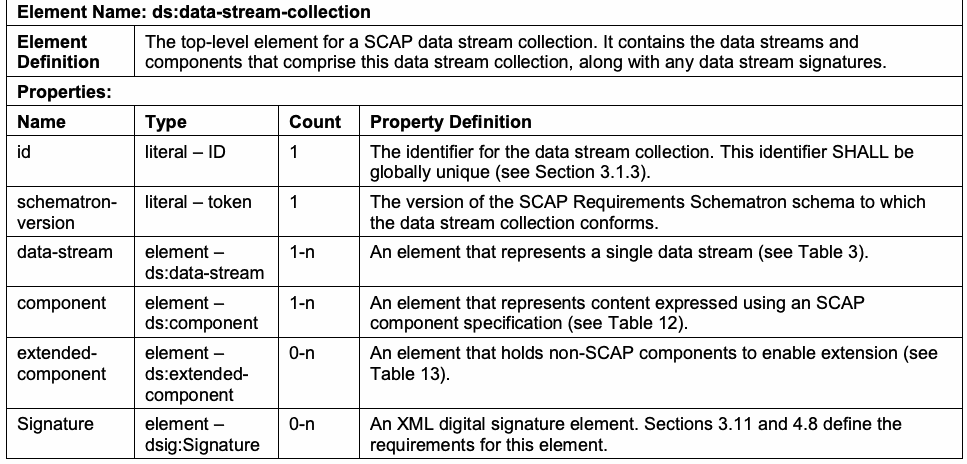
| 要素名：ds:data-stream-collection | |
| 要素の定義 | SCAPデータストリームコレクションの最上位要素。このデータストリームコレクションを構成するデータストリームおよびコンポーネントと、データストリーム署名があればそれらを含む。 |
| プロパティ： | |
| 名前／型 | カウント／プロパティの定義 |
| id／リテラル – ID | 1 / データストリームコレクションの識別子。この識別子はグローバルに一意でなければならない（SHALL）（3.1.3節参照）。 |
| schematron-version／リテラル – token | 1 / データストリームコレクションが準拠するSCAP要件Schematronスキーマのバージョン。 |
| data-stream／要素 – ds:data-stream | 1-n / 単一のデータストリームを表す要素（表3参照）。 |
| component／要素 – ds:component | 1-n / SCAPコンポーネント仕様を用いて表現されたコンテンツを表す要素（表12参照）。 |
| extended-component／要素 – ds:extended-component | 0-n / 拡張を可能にする非SCAPコンポーネントを格納する要素（表13参照）。 |
| Signature／要素 – dsig:Signature | 0-n / XMLデジタル署名要素。この要素の要件は3.11節および4.8節で定義する。 |
Table 3: ds:data-stream
表3：ds:data-stream
未レビュー訳| Element Name: ds:data-stream | |
| Element Definition | A data stream. This element contains the links to all of the components that comprise this data stream. |
| Properties | |
| Name / Type | Count / Property Definition |
| id / literal – ID | 1 / The identifier for the data stream. This identifier SHALL be globally unique (see Section 3.1.3). |
| use-case / literal – token | 1 / The use case represented by the data stream. The value SHALL be one of the following: CONFIGURATION, VULNERABILITY, INVENTORY, or OTHER. The value selected SHALL indicate which type of content is being represented as defined in Section 5. The value “OTHER” is for content that does not correspond to a specific use case; this content SHALL be valid according to the requirements defined in Sections 3 and 4. |
| scap-version / literal – token | 1 / The targeted SCAP version. The value SHALL be 1.3, 1.2, 1.1, or 1.0. The value SHALL indicate which version of SCAP the content is conformant with. 1.3 SHALL be specified to be conformant with this version of SCAP. |
| timestamp / literal – dateTime | 0-1 / The date and time when this data stream was created. |
| dictionaries / element – ds:dictionaries | 0-1 / Links to dictionary components (see Table 4). |
| checklists / element – ds:checklists | 0-1 / Links to checklist components (see Table 5). |
| checks / element – ds:checks | 1 / Links to check components (see Table 6). |
| extended- components / element – ds:extended- components | 0-1 / Links to non-standard components (see Table 7). See Section 4.2 for information on processing this element. |
原本PDFの抜粋画像
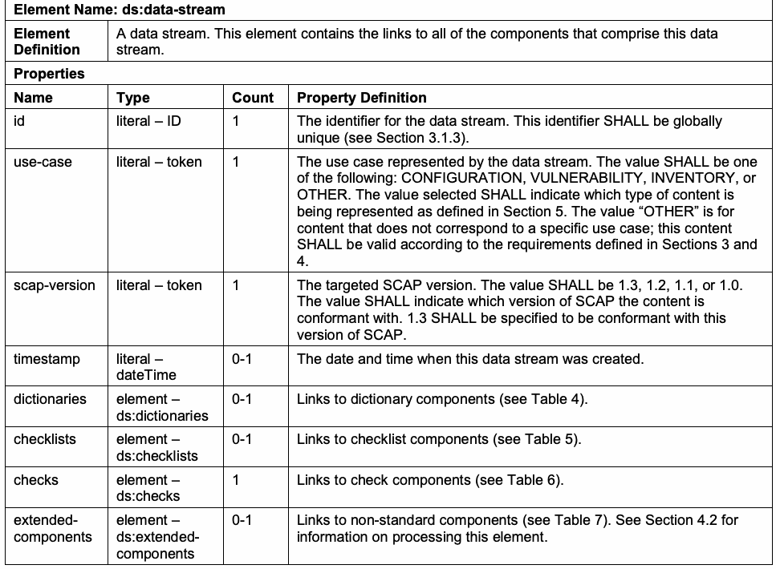
| 要素名：ds:data-stream | |
| 要素の定義 | データストリーム。この要素は、このデータストリームを構成するすべてのコンポーネントへのリンクを含む。 |
| プロパティ | |
| 名前／型 | カウント／プロパティの定義 |
| id／リテラル – ID | 1 / データストリームの識別子。この識別子はグローバルに一意でなければならない（SHALL）（3.1.3節参照）。 |
| use-case／リテラル – token | 1 / データストリームが表すユースケース。値は次のいずれかでなければならない（SHALL）：CONFIGURATION、VULNERABILITY、INVENTORY、OTHER。選択した値は、第5節で定義するコンテンツの種類を示さなければならない（SHALL）。値「OTHER」は特定のユースケースに該当しないコンテンツを表す。このコンテンツは第3節および第4節で定義する要件に従って有効でなければならない（SHALL）。 |
| scap-version／リテラル – token | 1 / 対象とするSCAPバージョン。値は1.3、1.2、1.1、または1.0でなければならない（SHALL）。この値は、コンテンツがどのSCAPバージョンに準拠するかを示さなければならない（SHALL）。本バージョンのSCAPに準拠するには1.3を指定しなければならない（SHALL）。 |
| timestamp／リテラル – dateTime | 0-1 / このデータストリームが作成された日時。 |
| dictionaries／要素 – ds:dictionaries | 0-1 / 辞書コンポーネントへのリンク（表4参照）。 |
| checklists／要素 – ds:checklists | 0-1 / チェックリストコンポーネントへのリンク（表5参照）。 |
| checks／要素 – ds:checks | 1 / チェックコンポーネントへのリンク（表6参照）。 |
| extended-components／要素 – ds:extended-components | 0-1 / 非標準コンポーネントへのリンク（表7参照）。この要素の処理については4.2節を参照。 |
Table 4: ds:dictionaries
表4：ds:dictionaries
未レビュー訳| Element Name: ds:dictionaries | |
| Element Definition | A container element that holds references to one or more dictionary components. |
| Properties | |
| Name / Type | Count / Property Definition |
| component-ref / element – component-ref | 1-n / SHALL contain a reference to a dictionary component (a component containing CPE dictionary content). |
原本PDFの抜粋画像
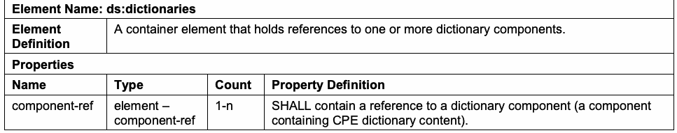
| 要素名：ds:dictionaries | |
| 要素の定義 | 1つ以上の辞書コンポーネントへの参照を格納するコンテナ要素。 |
| プロパティ | |
| 名前／型 | カウント／プロパティの定義 |
| component-ref／要素 – component-ref | 1-n / 辞書コンポーネント（CPE辞書コンテンツを含むコンポーネント）への参照を含まなければならない（SHALL）。 |
Table 5: ds:checklists
表5：ds:checklists
未レビュー訳| Element Name: ds:checklists | |
| Element Definition | A container element that holds references to one or more checklists. |
| Properties | |
| Name / Type | Count / Property Definition |
| component-ref / element – component-ref | 1-n / SHALL contain a reference to a checklist component (a component containing an <xccdf:Benchmark> or an <xccdf:Tailoring> element). |
原本PDFの抜粋画像
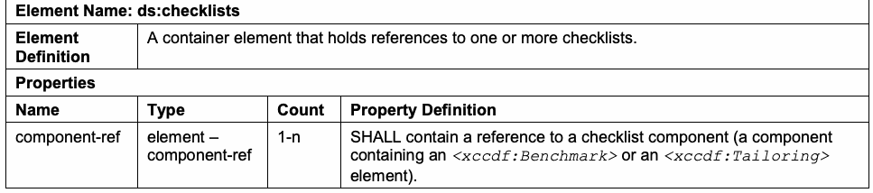
| 要素名：ds:checklists | |
| 要素の定義 | 1つ以上のチェックリストへの参照を格納するコンテナ要素。 |
| プロパティ | |
| 名前／型 | カウント／プロパティの定義 |
| component-ref／要素 – component-ref | 1-n / チェックリストコンポーネント（<xccdf:Benchmark>要素または<xccdf:Tailoring>要素を含むコンポーネント）への参照を含まなければならない（SHALL）。 |
Table 6: ds:checks
表6：ds:checks
未レビュー訳| Element Name: ds:checks | |
| Element Definition | A container element that holds references to one or more check components. |
| Properties | |
| Name / Type | Count / Property Definition |
| component-ref / element – component-ref | 1-n / SHALL contain a reference to a check component (a component containing check content). See Section 3.2.4.2 for information on SCAP checking system support and requirements. |
原本PDFの抜粋画像
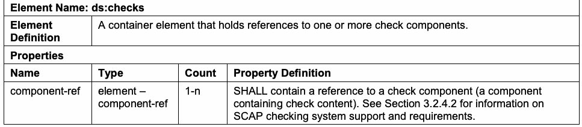
| 要素名：ds:checks | |
| 要素の定義 | 1つ以上のチェックコンポーネントへの参照を格納するコンテナ要素。 |
| プロパティ | |
| 名前／型 | カウント／プロパティの定義 |
| component-ref／要素 – component-ref | 1-n / チェックコンポーネント（チェックコンテンツを含むコンポーネント）への参照を含まなければならない（SHALL）。SCAPチェックシステムのサポートと要件については3.2.4.2節を参照。 |
Table 7: ds:extended-components
表7：ds:extended-components
未レビュー訳| Element Name: ds:extended-components | |
| Element Definition | A container element that holds references to one or more extended components for the SCAP data stream, including non-standard components. |
| Properties | |
| Name / Type | Count / Property Definition |
| component-ref / element – component-ref | 1-n / SHALL contain a reference to a non-standard component (a <ds:extended-component> element ). See Table 13. |
原本PDFの抜粋画像
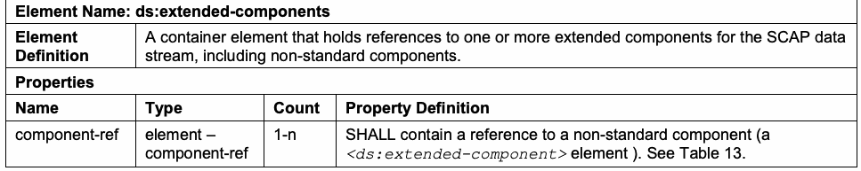
| 要素名：ds:extended-components | |
| 要素の定義 | 非標準コンポーネントを含む、SCAPデータストリーム用の1つ以上の拡張コンポーネントへの参照を格納するコンテナ要素。 |
| プロパティ | |
| 名前／型 | カウント／プロパティの定義 |
| component-ref／要素 – component-ref | 1-n / 非標準コンポーネント（<ds:extended-component>要素）への参照を含まなければならない（SHALL）（表13参照）。 |
Table 8: ds:component-ref
表8：ds:component-ref
未レビュー訳| Element Name: ds:component-ref | |
| Element Definition | An element that encapsulates the information necessary to link to a component within the data stream collection, or to external content, which gives context to the reference. This is a simple XLink [XLINK]. |
| Properties | |
| Name / Type / Count | Property Definition |
| id / literal - ID / 1 | The identifier for the reference. This identifier SHALL be globally unique (see Section 3.1.3). |
| type / literal – xlink:type / 0-1 | The type of XLink represented. The <ds:component-ref> is constrained to a simple XLink, so the value of this field SHALL be ‘simple’ if specified. |
| href / literal – xlink:href / 1 | A URI to the target component (either local to the data stream collection or remote). When referencing a local component, the URI SHALL be in the form ‘#’ + componentId (e.g. “#component1”). When referencing external content, the URI SHALL be in the form of scheme:[//[user:password@]host[:port]][/]path[?query][#fragment] as specified in [RFC3986] and SHALL dereference to an XML stream that includes the SCAP source data stream collection and the target component (e.g., “file:Data_Stream_Collection.xml#scap_gov.nist_comp_1”). |
| catalog / element – cat:catalog / 0-1 | An XML Catalog that defines the mapping between external URI links in the component being referenced by this <ds:component-ref>, and where those URIs should map to within the context of this data stream. See Table 9. |
原本PDFの抜粋画像
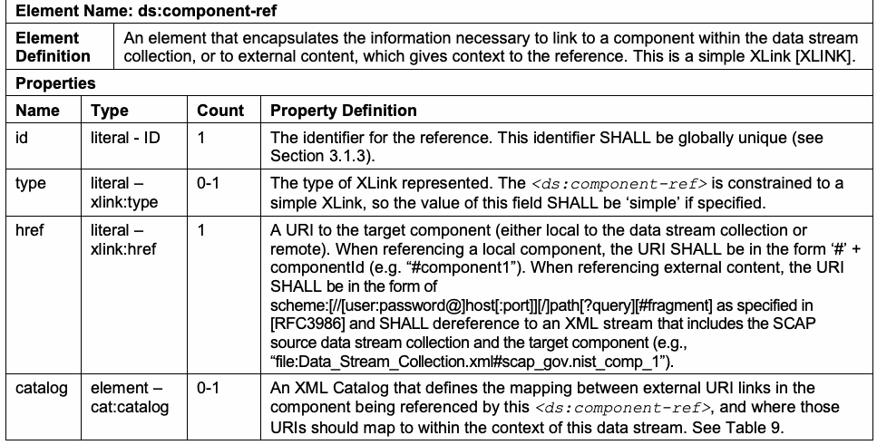
| 要素名：ds:component-ref | |
| 要素の定義 | データストリームコレクション内のコンポーネントまたは外部コンテンツへのリンクに必要な情報をカプセル化し、その参照にコンテキストを与える要素。これは単純なXLinkである[XLINK]。 |
| プロパティ | |
| 名前／型／カウント | Property Definition |
| id／リテラル - ID／1 | 参照の識別子。この識別子はグローバルに一意でなければならない（SHALL）（3.1.3節参照）。 |
| type／リテラル – xlink:type／0-1 | 表すXLinkの型。<ds:component-ref>は単純なXLinkに限定されるため、このフィールドを指定する場合、その値は「simple」でなければならない（SHALL）。 |
| href／リテラル – xlink:href／1 | 対象コンポーネント（データストリームコレクション内またはリモート）へのURI。ローカルコンポーネントを参照する場合、URIは「#」+ componentIdの形式でなければならない（SHALL）（例：「#component1」）。外部コンテンツを参照する場合、URIは[RFC3986]で規定されるscheme:[//[user:password@]host[:port]][/]path[?query][#fragment]の形式でなければならず（SHALL）、SCAPソースデータストリームコレクションと対象コンポーネントを含むXMLストリームに解決されなければならない（SHALL）（例：「file:Data_Stream_Collection.xml#scap_gov.nist_comp_1」）。 |
| catalog／要素 – cat:catalog／0-1 | この<ds:component-ref>が参照するコンポーネント内の外部URIリンクと、データストリーム内でそれらのURIを対応付ける先とのマッピングを定義するXMLカタログ。表9を参照。 |
Table 9: cat:catalog
表9：cat:catalog
未レビュー訳| Element Name: cat:catalog | |
| Element Definition | A catalog element defined by the OASIS XML Catalog specification [XMLCAT]. Within an SCAP source data stream this element SHALL contain one or more <cat:uri> and/or <cat:rewriteURI> elements, and it SHALL NOT contain any other elements or attributes. Refer to Section 7 of [XMLCAT] for information on determining which catalog entry to apply. |
| Properties | |
| Name / Type | Count / Property Definition |
| uri / element – cat:uri | 0-n (at least 1 of this or rewriteURI SHALL be provided) / Maps a reference in the enclosing <ds:component-ref> element's component to some other <ds:component-ref> element that SHALL be used to resolve the reference. See Table 10. |
| rewriteURI / element – cat:rewriteURI | 0-n (at least 1 of this or uri SHALL be provided) / A rewriteURI element defined by the OASIS XML Catalog specification [XMLCAT]. Within an SCAP source data stream this element can be used to rewrite the beginning of a reference in the enclosing <ds:component-ref> element's component to some other <ds:component-ref> element that SHALL be used to resolve the reference. See Table 11. |
原本PDFの抜粋画像
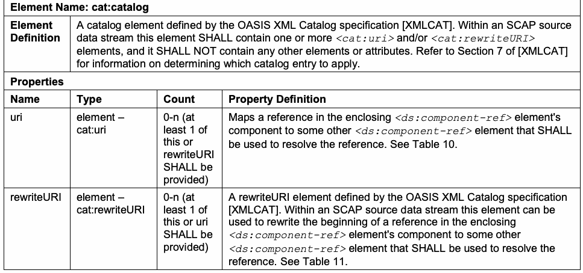
| 要素名：cat:catalog | |
| 要素の定義 | OASIS XML Catalog仕様[XMLCAT]で定義されるカタログ要素。SCAPソースデータストリーム内では、この要素は1つ以上の<cat:uri>要素および／または<cat:rewriteURI>要素を含まなければならず（SHALL）、その他の要素または属性を含んではならない（SHALL NOT）。適用するカタログエントリの決定については[XMLCAT]第7節を参照。 |
| プロパティ | |
| 名前／型 | カウント／プロパティの定義 |
| uri／要素 – cat:uri | 0-n（uriまたはrewriteURIの少なくとも一方を指定しなければならない（SHALL））／外側の<ds:component-ref>要素のコンポーネント内の参照を、その参照の解決に使用しなければならない（SHALL）別の<ds:component-ref>要素に対応付ける。表10参照。 |
| rewriteURI／要素 – cat:rewriteURI | 0-n（rewriteURIまたはuriの少なくとも一方を指定しなければならない（SHALL））／OASIS XML Catalog仕様[XMLCAT]で定義されるrewriteURI要素。SCAPソースデータストリーム内では、この要素を使って、外側の<ds:component-ref>要素のコンポーネント内の参照の先頭部分を、参照の解決に使用しなければならない（SHALL）別の<ds:component-ref>要素に書き換えることができる。表11参照。 |
Table 10: cat:uri
表10：cat:uri
未レビュー訳| Element Name: cat:uri | |
| Element Definition | A uri element defined by the OASIS XML Catalog specification [XMLCAT]. Within an SCAP source data stream this element maps a reference in the enclosing <ds:component-ref> element's component to some other <ds:component-ref> element that SHALL be used to resolve the reference. A <cat:uri> element SHALL have a @name attribute and a @uri attribute. |
| Properties | |
| Name / Type | Count / Property Definition |
| name / literal – xs:anyURI | 1 / The @name attribute is the source of the mapping and SHALL contain a URI that matches a “referenced URI” in the data stream component referenced by the <ds:component-ref> that holds this element. The “referenced URI” is a URI entry defined within the model used within the data stream component. |
| uri / literal – xs:anyURI | 1 / The @uri attribute is the destination of the mapping and SHALL be populated with the value “#” + @id of a <ds:component-ref>. When resolving the URI in the attribute, the <ds:component-ref> @name pointed to by the @uri attribute SHALL be used. |
原本PDFの抜粋画像
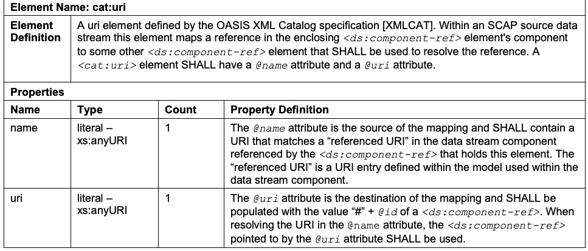
| 要素名：cat:uri | |
| 要素の定義 | OASIS XML Catalog仕様[XMLCAT]で定義されるuri要素。SCAPソースデータストリーム内では、この要素は外側の<ds:component-ref>要素のコンポーネント内の参照を、その参照の解決に使用しなければならない（SHALL）別の<ds:component-ref>要素に対応付ける。<cat:uri>要素は@name属性および@uri属性を持たなければならない（SHALL）。 |
| プロパティ | |
| 名前／型 | カウント／プロパティの定義 |
| name／リテラル – xs:anyURI | 1 / @name属性はマッピング元であり、この要素を含む<ds:component-ref>が参照するデータストリームコンポーネント内の「参照URI」と一致するURIを含まなければならない（SHALL）。「参照URI」は、データストリームコンポーネント内で使用するモデルに定義されたURIエントリである。 |
| uri／リテラル – xs:anyURI | 1 / @uri属性はマッピング先であり、<ds:component-ref>の@idに「#」を付加した値を設定しなければならない（SHALL）。属性内のURIを解決する際は、@uri属性が指す<ds:component-ref>の@nameを使用しなければならない（SHALL）。 |
Table 11: cat:rewriteURI
表11：cat:rewriteURI
未レビュー訳| Element Name: cat: rewriteURI | |
| Element Definition | A rewriteURI element defined by the OASIS XML Catalog specification [XMLCAT]. Within an SCAP source data stream this element can be used to rewrite the beginning of a reference in the enclosing <ds:component-ref> element's component to some other <ds:component-ref> element that SHALL be used to resolve the reference. A <cat: rewriteURI> element SHALL have a @uriStartString attribute and a @rewritePrefix attribute specified. See [XMLCAT] for more details. |
| Properties | |
| Name / Type | Count / Property Definition |
| uriStartString / literal – xs:anyURI | 1 / The @uriStartString attribute SHALL be populated with the start of a URI of an external link specified within the component referenced by this element’s enclosing <ds:component-ref> element that is to be replaced. |
| rewritePrefix / literal – xs:anyURI | 1 / The @rewritePrefix attribute SHALL be populated with a string that will replace the matched @uriStartString value. The resulting URI SHALL be used to resolve the link. |
原本PDFの抜粋画像
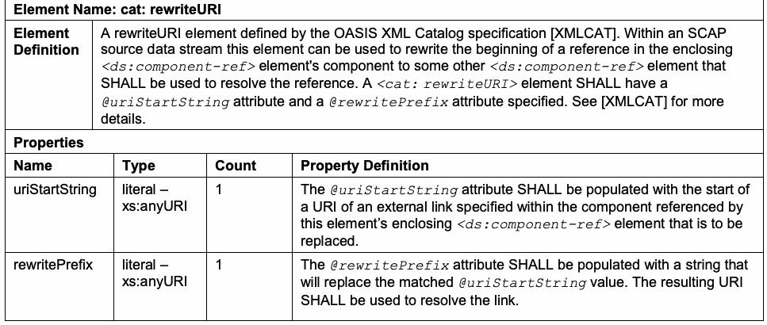
| 要素名：cat:rewriteURI | |
| 要素の定義 | OASIS XML Catalog仕様[XMLCAT]で定義されるrewriteURI要素。SCAPソースデータストリーム内では、この要素を使って、外側の<ds:component-ref>要素のコンポーネント内の参照の先頭部分を、参照の解決に使用しなければならない（SHALL）別の<ds:component-ref>要素に書き換えることができる。<cat:rewriteURI>要素には@uriStartString属性と@rewritePrefix属性を指定しなければならない（SHALL）。詳細は[XMLCAT]を参照。 |
| プロパティ | |
| 名前／型 | カウント／プロパティの定義 |
| uriStartString／リテラル – xs:anyURI | 1 / @uriStartString属性には、この要素を含む<ds:component-ref>要素が参照するコンポーネント内で指定された外部リンクURIのうち、置換対象となる先頭部分を設定しなければならない（SHALL）。 |
| rewritePrefix／リテラル – xs:anyURI | 1 / @rewritePrefix属性には、一致した@uriStartString値を置き換える文字列を設定しなければならない（SHALL）。生成されたURIをリンクの解決に使用しなければならない（SHALL）。 |
Table 12: ds:component
表12：ds:component
未レビュー訳| Element Name: ds:component | |
| Element Definition | A container for a single component. The types of components are defined in Section 3.1.2. |
| Properties | |
| Name / Type | Count / Property Definition |
| id / literal – ID | 1 / The identifier for the component. This identifier SHALL be globally unique (see Section 3.1.3). |
| timestamp / literal – dateTime | 1 / Indicates when the was <ds:component> created or last updated. |
原本PDFの抜粋画像
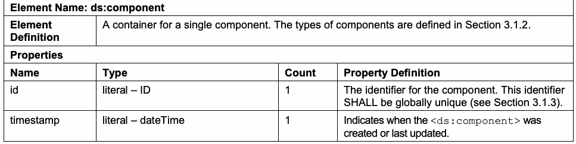
| 要素名：ds:component | |
| 要素の定義 | 単一のコンポーネントを格納するコンテナ。コンポーネントの種類は3.1.2節で定義する。 |
| プロパティ | |
| 名前／型 | カウント／プロパティの定義 |
| id／リテラル – ID | 1 / コンポーネントの識別子。この識別子はグローバルに一意でなければならない（SHALL）（3.1.3節参照）。 |
| timestamp／リテラル – dateTime | 1 / <ds:component>が作成または最終更新された日時を示す。 |
| Benchmark | element – xccdf:Benchmark | 1, and only 1, of these elements | XCCDF benchmark |
| oval_definitions | element – oval-def:oval_definitions | OVAL Definitions | |
| ocil | element – ocil:ocil | OCIL questionnaire | |
| cpe-list | element – cpe2-dict:cpe-list | CPE dictionary | |
| Tailoring | element – xccdf:Tailoring | XCCDF tailoring |
原本PDFの抜粋画像
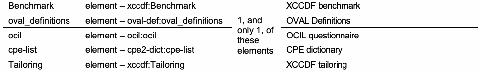
| Benchmark | element – xccdf:Benchmark | 1, and only 1, of these elements | XCCDF benchmark |
| oval_definitions | element – oval-def:oval_definitions | OVAL Definitions | |
| ocil | element – ocil:ocil | OCIL questionnaire | |
| cpe-list | element – cpe2-dict:cpe-list | CPE dictionary | |
| Tailoring | element – xccdf:Tailoring | XCCDF tailoring |
Table 13: ds:extended-component
表13：ds:extended-component
未レビュー訳| Element Name: ds:extended-component | |
| Element Definition | This element holds content that does not fit within the other defined component types described in Table 12. Authors SHOULD use this element as an extension point to capture content that is not captured in a regular component. The content of this element SHALL be an XML element in a namespace other than the SCAP source data stream namespace. Linking through a <ds:extended- component> element SHALL make the data stream non-conformant with SCAP. |
| Properties | |
| Name / Type | Count / Property Definition |
| id / literal – ID | 1 / The identifier for the component. This identifier SHALL be globally unique (see Section 3.1.3). |
| timestamp / literal – dateTime | 1 / Indicates when the <ds:extended-component> was created or last updated. |
原本PDFの抜粋画像
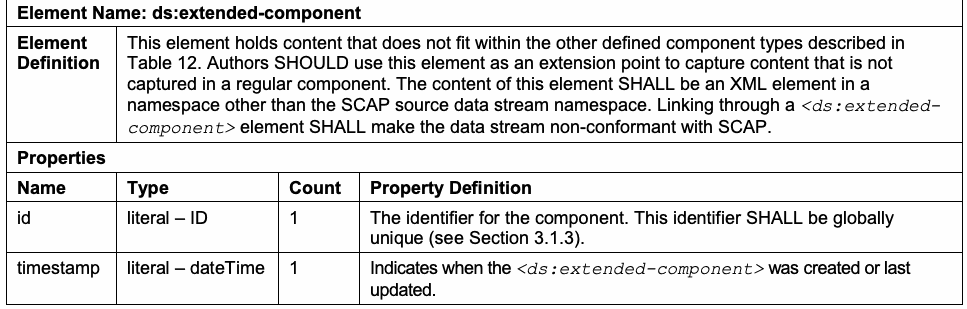
| 要素名：ds:extended-component | |
| 要素の定義 | この要素は、表12で説明する他の定義済みコンポーネント型に適合しないコンテンツを保持する。作成者は、通常のコンポーネントに含まれないコンテンツを取り込む拡張ポイントとして、この要素を使用するべきである（SHOULD）。この要素のコンテンツは、SCAPソースデータストリーム名前空間以外の名前空間に属するXML要素でなければならない（SHALL）。<ds:extended-component>要素を介してリンクすると、データストリームはSCAP非準拠となる（SHALL）。 |
| プロパティ | |
| 名前／型 | カウント／プロパティの定義 |
| id／リテラル – ID | 1 / コンポーネントの識別子。この識別子はグローバルに一意でなければならない（SHALL）（3.1.3節参照）。 |
| timestamp／リテラル – dateTime | 1 / <ds:extended-component>が作成または最終更新された日時を示す。 |
3.1.2 Source Data Stream Collection Validation
3.1.2 ソースデータストリームコレクションの検証
The SCAP source data stream collection SHALL validate against the XML schema representation for the source data stream, as well as all associated Schematron schemas. The SCAP components referenced by each <ds:component> and <ds:extended-component> element SHALL validate against the corresponding component schema and its embedded Schematron rules. All of the SCAP-related schemas are referenced at https://scap.nist.gov/revision/1.3/#schema. See Section 2 in NIST SP 800-126A [SP800-126A] for a list of SCAP component schema and Schematron schema locations. These XML and Schematron schemas will be updated if any errors are found. If the old schema links change, updated links will be provided in the annex as errors are corrected. Each SCAP source data stream component SHALL use one of the elements specified in Table 14 as its document element. Each SCAP source data stream component SHOULD NOT use any constructs that are deprecated in its associated specification. While Section 4.1 requires that products support deprecated constructs, these constructs should be avoided to minimize the impact to content use when these constructs are removed from future revisions of the associated specifications. Any single data stream in a data stream collection SHALL NOT reference any component in the collection more than once. Table 14: SCAP Source Data Stream Component Document Elements
SCAPソースデータストリームコレクションは、ソースデータストリームのXMLスキーマ表現および関連するすべてのSchematronスキーマに対して検証しなければならない（SHALL）。各<ds:component>要素および<ds:extended-component>要素が参照するSCAPコンポーネントは、対応するコンポーネントスキーマおよび埋め込みSchematron規則に対して検証しなければならない（SHALL）。SCAP関連スキーマは https://scap.nist.gov/revision/1.3/#schema に掲載されている。SCAPコンポーネントスキーマおよびSchematronスキーマの所在一覧は、NIST SP 800-126A [SP800-126A]の第2節を参照。エラーが見つかった場合、これらのXMLスキーマおよびSchematronスキーマは更新される。古いスキーマへのリンクが変更された場合、エラーが修正された時点で更新リンクが付属書に掲載される。各SCAPソースデータストリームコンポーネントは、文書要素として表14に指定された要素のいずれかを使用しなければならない（SHALL）。各SCAPソースデータストリームコンポーネントは、関連仕様で廃止予定となった構文を使用するべきではない（SHOULD NOT）。第4.1節は製品に廃止予定構文のサポートを要求するが、これらの構文が関連仕様の将来の改訂で削除された際のコンテンツ利用への影響を最小限にするため、使用を避けるべきである。データストリームコレクション内の個々のデータストリームは、コレクション内のいずれのコンポーネントも2回以上参照してはならない（SHALL NOT）。表14：SCAPソースデータストリームのコンポーネント文書要素
未レビュー訳| Component | Document Element |
| XCCDF Benchmark | <xccdf:Benchmark> |
| XCCDF Tailoring | <xccdf:Tailoring> |
| OVAL | <oval-def:oval_definitions> |
| OCIL | <ocil:ocil> |
| CPE Dictionary | <cpe2-dict:cpe-list> |
原本PDFの抜粋画像
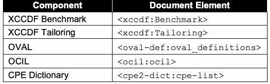
| コンポーネント | 文書要素 |
| XCCDFベンチマーク | <xccdf:Benchmark> |
| XCCDFテーラリング | <xccdf:Tailoring> |
| OVAL | <oval-def:oval_definitions> |
| OCIL | <ocil:ocil> |
| CPE辞書 | <cpe2-dict:cpe-list> |
NIST provides an SCAP Content Validation Tool, which is designed to help validate the correctness of SCAP data streams.13 The SCAP Content Validation Tool is a command-line tool that will check that
NISTは、SCAPデータストリームの正確性の検証を支援するために設計されたSCAP Content Validation Toolを提供している。13 このツールはコマンドラインツールであり、次の点を確認する：
未レビュー訳SCAP source and result content is well-formed, cross references are valid, and required values are appropriately set. Errors and warnings are returned in both XML and Hypertext Markup Language (HTML) formats. Validation of each SCAP source data stream component SHALL be done in accordance with the portions of this document that define requirements for the associated component specification. If applicable, each component SHALL validate against its associated Schematron schema. For the SCAP source data stream collection, it SHALL validate against the version of the SCAP Schematron rules as specified on the <ds:data-stream-collection> element’s @schematron-version attribute, and it SHOULD also validate against the latest Schematron rules. NIST provides and maintains a set of Schematron rules to check well-formed SCAP content. The Schematron schemas for the SCAP specification and its applicable component specifications are located at https://scap.nist.gov/revision/1.3/#schematron. Source content SHOULD pass all Schematron assertions in the Schematron rule files. When creating source content, failed assertions with a “WARNING” or “INFO” flag MAY be disregarded if the assertion discovers an issue in the content that is justifiable and expected based on the needs of the content author. When executing source content, all failed assertions with a “WARNING” or “INFO” flag SHALL be disregarded. The Schematron schemas are interpretations of the specifications, and the implementations of their rules are subject to change. Whenever a change is made to a Schematron schema used for this SCAP version, the SCAP Schematron change log document will be updated and the new Schematron schema will be posted. The latest Schematron schema SHOULD be used in place of any earlier versions. If the latest file is unavailable, the version specified on the <ds:data-stream-collection> element’s @schematron-version attribute SHALL be used instead. Also, for the component specifications, the Schematron schema on the SCAP website SHALL be used in place of any corresponding Schematron schema available elsewhere. For example, a particular specification may have an official Schematron schema available on a different website. In most cases, the copy on the SCAP website will be the same, but if issues in a Schematron schema are discovered, revised files may be posted to the SCAP website to address issues before the individual specification’s maintainers provide official Schematron fixes. In such a case, these fixes will be shared with the specification maintainers.
SCAPソースコンテンツおよび結果コンテンツが整形式であること、相互参照が有効であること、必須値が適切に設定されていることを確認する。エラーと警告はXML形式とHypertext Markup Language（HTML）形式の両方で返される。各SCAPソースデータストリームコンポーネントの検証は、関連するコンポーネント仕様の要件を定義する本書の該当箇所に従って行わなければならない（SHALL）。該当する場合、各コンポーネントは関連するSchematronスキーマに対して検証しなければならない（SHALL）。SCAPソースデータストリームコレクションは、<ds:data-stream-collection>要素の@schematron-version属性で指定されたバージョンのSCAP Schematron規則に対して検証しなければならず（SHALL）、最新のSchematron規則に対しても検証するべきである（SHOULD）。NISTは、整形式のSCAPコンテンツを確認するためのSchematron規則一式を提供し、保守している。SCAP仕様および適用対象となるコンポーネント仕様のSchematronスキーマは https://scap.nist.gov/revision/1.3/#schematron にある。ソースコンテンツは、Schematron規則ファイル内のすべてのアサーションに合格するべきである（SHOULD）。ソースコンテンツを作成する際、アサーションが「WARNING」または「INFO」フラグ付きで失敗しても、そのアサーションがコンテンツ作成者のニーズに照らして正当化され予期される問題を検出した場合は、無視してもよい（MAY）。ソースコンテンツを実行する際、「WARNING」または「INFO」フラグ付きで失敗したすべてのアサーションは無視しなければならない（SHALL）。Schematronスキーマは仕様の解釈であり、その規則の実装は変更される場合がある。このSCAPバージョンで使用するSchematronスキーマに変更があれば、SCAP Schematron変更履歴文書が更新され、新しいSchematronスキーマが公開される。以前のバージョンに代えて最新のSchematronスキーマを使用するべきである（SHOULD）。最新ファイルが入手できない場合は、<ds:data-stream-collection>要素の@schematron-version属性で指定されたバージョンを使用しなければならない（SHALL）。また、コンポーネント仕様については、他の場所にある対応するSchematronスキーマに代えて、SCAPウェブサイト上のSchematronスキーマを使用しなければならない（SHALL）。例えば、特定の仕様について、別のウェブサイトで公式Schematronスキーマが公開されている場合がある。ほとんどの場合、SCAPウェブサイト上の複製は同一であるが、Schematronスキーマに問題が見つかった場合、個々の仕様の保守者が公式修正を提供する前に問題に対応する改訂ファイルがSCAPウェブサイトに掲載されることがある。この場合、修正内容は仕様の保守者と共有される。
未レビュー訳3.1.3 Globally Unique Identifiers
3.1.3 グローバル一意識別子
The elements listed in Table 15 have special conventions around the format of their identifiers (
表15に列挙された要素の識別子形式には、特別な規約がある（
未レビュー訳@id
@id
未レビュー訳attribute). Authors SHALL follow these conventions because they preserve the global uniqueness of the resulting identifiers. In Table 15, namespace contains a valid reverse-DNS style string (limited to letters, numbers, periods, and the hyphen character) that is associated with the content author. Examples include "com.acme.finance" and "gov.tla". These namespace strings MAY have any number of parts, and SCAP content consumers processing them SHALL treat them as case-insensitive (e.g., com.ABC is considered identical to com.abc). The name in the format conventions SHALL be an NCName-compliant string [XMLS]. Table 15: Element Identifier Format Convention
属性）。作成者は、生成される識別子のグローバルな一意性を保つため、これらの規約に従う SHALL 。表15では、namespaceはコンテンツ作成者に関連付けられた有効な逆引きDNS形式の文字列（英字、数字、ピリオド、ハイフンのみ）を含む。例：「com.acme.finance」、「gov.tla」。これらのnamespace文字列は任意の数の部分から構成される MAY 。これらを処理するSCAPコンテンツ利用製品は、大文字と小文字を区別せずに扱う SHALL （例：com.ABCはcom.abcと同一とみなす）。形式規約のnameは、NCNameに準拠する文字列でなければならない SHALL [XMLS]。表15：要素識別子の形式規約
未レビュー訳| Element | Identifier Format Convention |
| <ds:data-stream-collection> | scap_namespace_collection_name |
| <ds:data-stream> | scap_namespace_datastream_name |
| <ds:component-ref> | scap_namespace_cref_name |
| <ds:component> | scap_namespace_comp_name |
| <ds:extended-component> | scap_namespace_ecomp_name |
原本PDFの抜粋画像
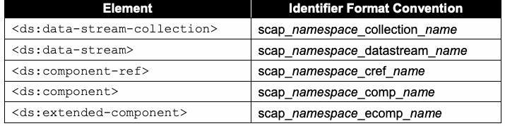
| 要素 | 識別子の形式規約 |
| <ds:data-stream-collection> | scap_namespace_collection_name |
| <ds:data-stream> | scap_namespace_datastream_name |
| <ds:component-ref> | scap_namespace_cref_name |
| <ds:component> | scap_namespace_comp_name |
| <ds:extended-component> | scap_namespace_ecomp_name |
3.2 Extensible Configuration Checklist Description Format (XCCDF)
3.2 Extensible Configuration Checklist Description Format（XCCDF）
This section lists requirements and recommendations for using the Extensible Configuration Checklist Description Format (XCCDF) to express an XCCDF benchmark or tailoring component of an SCAP source data stream (see Table 14). They are organized by the following categories: general, <xccdf:Benchmark>, <xccdf:Profile>, <xccdf:Rule>, <xccdf:Value>, and <xccdf:Group>.
本節では、SCAPソースデータストリームのXCCDFベンチマークまたはテーラリングコンポーネント（表14参照）を表現するために、Extensible Configuration Checklist Description Format（XCCDF）を使用する際の要件と推奨事項を列挙する。これらは次のカテゴリ別に構成される：一般、<xccdf:Benchmark>、<xccdf:Profile>、<xccdf:Rule>、<xccdf:Value>、および<xccdf:Group>。
未レビュー訳3.2.1 General
3.2.1 一般
The @xml:base attribute SHALL NOT be allowed in XCCDF content. This attribute is not compatible with the SCAP data stream model. Descriptive information within XCCDF MAY be used by SCAP products to assist in the selection of the appropriate SCAP data stream, ensure that the most recent or correct version of an XCCDF document is used, and provide additional information about the document. The following requirements and conventions apply to the <xccdf:Benchmark>, <xccdf:Profile>, <xccdf:Value>, <xccdf:Group>, and <xccdf:Rule> elements:
@xml:base属性はXCCDFコンテンツで許可してはならない SHALL NOT 。この属性はSCAPデータストリームモデルと互換性がない。XCCDF内の説明情報は、SCAP製品が適切なSCAPデータストリームを選択すること、XCCDF文書の最新または正しいバージョンが使用されることの確認、および文書に関する追加情報の提供に利用される MAY 。次の要件と規約は、<xccdf:Benchmark>、<xccdf:Profile>、<xccdf:Value>、<xccdf:Group>、および<xccdf:Rule>要素に適用される：
未レビュー訳1.One or more instances of the <xccdf:title> element SHALL be provided. Each instance SHALL contain a text value that briefly indicates the purpose of the containing element.
1.<xccdf:title>要素を1つ以上記載しなければならない SHALL 。各要素は、包含する要素の目的を簡潔に示すテキスト値を含まなければならない SHALL 。
2.One or more instances of the <xccdf:description> element SHALL be provided. Each instance SHALL contain a text value that describes the purpose of the containing element.
2.<xccdf:description>要素を1つ以上記載しなければならない SHALL 。各要素は、包含する要素の目的を説明するテキスト値を含まなければならない SHALL 。
XInclude elements SHALL NOT be included in XCCDF content [XINCLUDE]. All remaining OPTIONAL elements in the XCCDF schema MAY be included at the author’s discretion unless otherwise noted in this document.
XInclude要素をXCCDFコンテンツに含めてはならない SHALL NOT [XINCLUDE]。XCCDFスキーマにある残りの OPTIONAL 要素は、本書に別段の記載がない限り、作成者の裁量で含めてもよい MAY 。
未レビュー訳3.2.2 The <xccdf:Benchmark> Element
3.2.2 <xccdf:Benchmark>要素
The following requirements and recommendations apply to the <xccdf:Benchmark> element:
次の要件と推奨事項は<xccdf:Benchmark>要素に適用される：
1.The <xccdf:version> element and the @id attribute SHALL be used together to uniquely identify all revisions of a benchmark. a. Multiple revisions of a single benchmark SHOULD have the same @id attribute value and different <xccdf:version> element values, so that someone who reviews the revisions can readily identify them as multiple versions of a single benchmark. b. Multiple revisions of a single benchmark SHOULD have <xccdf:version> element values that indicate the revision sequence, so that the history of changes from the original benchmark can be determined. c. The @time attribute of the <xccdf:version> element SHOULD be used for a timestamp of when the benchmark was defined.
1.<xccdf:version>要素と@id属性を併用して、ベンチマークのすべての改訂版を一意に識別しなければならない SHALL 。a. 1つのベンチマークの複数の改訂版は、同じ@id属性値と異なる<xccdf:version>要素値を持つべきである SHOULD 。これにより、改訂版を確認する人が同一ベンチマークの複数バージョンだと容易に識別できる。b. 複数の改訂版は、元のベンチマークからの変更履歴を判別できるよう、改訂順序を示す<xccdf:version>要素値を持つべきである SHOULD 。c. ベンチマークが定義された時点のタイムスタンプには、<xccdf:version>要素の@time属性を使用するべきである SHOULD 。
2.The @update attribute of the <xccdf:version> element SHOULD be used for a URI that specifies where updates to the benchmark can be obtained.
2.ベンチマークの更新を取得できるURIには、<xccdf:version>要素の@update属性を使用するべきである SHOULD 。
未レビュー訳3.The <xccdf:Benchmark> element SHALL have an @xml:lang attribute.
3.<xccdf:Benchmark>要素は@xml:lang属性を持たなければならない SHALL 。
4.The @style attribute SHOULD have the value “SCAP_1.3”.
4.@style属性の値は「SCAP_1.3」とするべきである SHOULD 。
5.The <xccdf:status> element SHALL indicate the current status of the benchmark document. The associated text value SHALL be “draft” for documents released in public draft state and “accepted” for documents that have been officially released by an organization. The
5.<xccdf:status>要素はベンチマーク文書の現在の状態を示さなければならない SHALL 。そのテキスト値は、公開草案状態で公開された文書では「draft」、組織が正式に公開した文書では「accepted」でなければならない SHALL 。また、
未レビュー訳@date attribute SHALL be populated with the date of the status change. Additional <xccdf:status> elements MAY be included to indicate historic status transitions.
@date属性には状態変更の日付を設定しなければならない SHALL 。過去の状態遷移を示すため、<xccdf:status>要素を追加してもよい MAY 。
未レビュー訳6.The <xccdf:metadata> element SHALL be provided and SHALL, at minimum, contain the Dublin Core [DCES] terms from Table 16. If provided, additional Dublin Core terms SHALL follow the required terms within the element sequence.
6.<xccdf:metadata>要素を記載しなければならず SHALL 、最低限、表16のDublin Core [DCES]用語を含めなければならない SHALL 。追加のDublin Core用語を記載する場合、それらは必須用語の後に続かなければならない SHALL 。
Table 16: Use of Dublin Core Terms in <xccdf:metadata>
表16：<xccdf:metadata>におけるDublin Core用語の使用
未レビュー訳| Dublin Core Term | Description of Use |
| <dc:creator> | The person, organization, and/or service that created the benchmark |
| <dc:publisher> | The person, organization, and/or service that published the benchmark |
| <dc:contributor> | The person, organization, and/or service that contributed to the creation of the benchmark |
| <dc:source> | An identifier that indicates the organizational context of the benchmark’s @id attribute. An organizationally specific URI SHOULD be used. |
原本PDFの抜粋画像
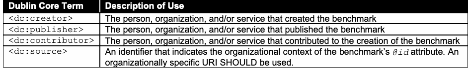
| Dublin Core用語 | 用途の説明 |
| <dc:creator> | ベンチマークを作成した人、組織、および／またはサービス |
| <dc:publisher> | ベンチマークを公開した人、組織、および／またはサービス |
| <dc:contributor> | ベンチマーク作成に貢献した人、組織、および／またはサービス |
| <dc:source> | ベンチマークの@idの組織的コンテキストを示す識別子。組織固有のURIを使用するべきである SHOULD 。 |
3.2.3 The <xccdf:Profile> Element
3.2.3 <xccdf:Profile>要素
As stated in the XCCDF specification, the use of an <xccdf:Profile> element is not required. SCAP content commonly includes <xccdf:Profile> elements, so people tend to assume that they are required, but they are optional. Use of the <xccdf:set-complex-value> element within the <xccdf:Profile> element SHALL NOT be allowed. Use of complex values is disallowed because the behavior for mapping XCCDF complex values to OVAL variables is not defined.
XCCDF仕様に記載されているとおり、<xccdf:Profile>要素の使用は必須ではない。SCAPコンテンツにはこの要素がよく含まれるため必須と誤解されがちだが、任意である。<xccdf:Profile>要素内で<xccdf:set-complex-value>要素を使用してはならない SHALL NOT 。XCCDFの複合値をOVAL変数に対応付ける動作が定義されていないため、複合値の使用は禁止されている。
未レビュー訳3.2.4 The <xccdf:Rule> Element
3.2.4 <xccdf:Rule>要素
The following requirements and recommendations apply to the <xccdf:Rule> element. The topics they address are <xccdf:ident> elements, <xccdf:check> elements, patches up-to-date rules, and CVSS and CCSS scores.
次の要件と推奨事項は<xccdf:Rule>要素に適用される。対象は<xccdf:ident>要素、<xccdf:check>要素、パッチ最新性規則、CVSSスコアおよびCCSSスコアである。
3.2.4.1 The <xccdf:ident> Element
3.2.4.1 <xccdf:ident>要素
Each <xccdf:Rule> element SHALL include an <xccdf:ident> element containing a CVE, CCE, or CPE identifier reference if an appropriate identifier exists. The meaning of the identifier SHALL be consistent with the recommendation implemented by the <xccdf:Rule> element. If the rule references an OVAL Definition, then <xccdf:ident> element content SHALL match the corresponding CVE, CCE, or CPE identifier found in the associated OVAL Definition(s) if an appropriate identifier exists and if that OVAL Definition is the only input to the rule’s final result. When referencing a CVE, CCE, or CPE identifier, an <xccdf:Rule> element SHALL have a purpose consistent with one of the rows in
適切な識別子が存在する場合、各<xccdf:Rule>要素はCVE、CCE、またはCPE識別子への参照を含む<xccdf:ident>要素を含まなければならない SHALL 。識別子の意味は、規則が実装する推奨事項と一致しなければならない SHALL 。規則がOVAL定義を参照し、適切な識別子が存在し、かつそのOVAL定義のみが規則の最終結果への入力である場合、<xccdf:ident>の内容は関連OVAL定義内の対応するCVE、CCE、またはCPE識別子と一致しなければならない SHALL 。 CVE、CCE、またはCPE識別子を参照する<xccdf:Rule>要素の目的は、次の表のいずれかの行と一致しなければならない SHALL ：
未レビュー訳Table 17. Based on the purpose of the <xccdf:Rule> element, the <xccdf:Rule> SHALL define its <xccdf:ident> element’s @system attribute using the corresponding value from Table 17. Also, if the <xccdf:Rule> element references an OVAL Definition, it SHALL reference an OVAL Definition of the specified class.
表17。規則の目的に基づき、<xccdf:Rule>は表17の対応値を用いて<xccdf:ident>の@system属性を定義しなければならない SHALL 。また、OVAL定義を参照する場合、指定クラスのOVAL定義を参照しなければならない SHALL 。
未レビュー訳Table 17: <xccdf:Rule> and <xccdf:ident> Element Values
表17：<xccdf:Rule>要素および<xccdf:ident>要素の値
未レビュー訳| Purpose of the <xccdf:Rule> | OVAL Definition | Identifier | Value for <xccdf:ident> |
| Class | Type | @system attribute14 | |
| Check compliance with a configuration setting | compliance | CCE | http://cce.mitre.org |
| Perform a software inventory check | inventory | CPE | http://cpe.mitre.org |
| Check for a software flaw vulnerability | vulnerability | CVE | http://cve.mitre.org |
原本PDFの抜粋画像
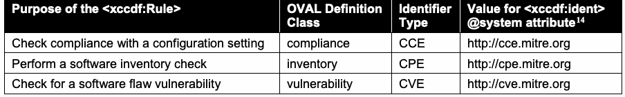
| <xccdf:Rule>の目的 | OVAL定義 | 識別子 | <xccdf:ident>の値 |
| クラス | 種別 | @system属性14 | |
| 構成設定への準拠確認 | 準拠 | CCE | http://cce.mitre.org |
| ソフトウェアインベントリの確認 | インベントリ | CPE | http://cpe.mitre.org |
| ソフトウェア欠陥の脆弱性確認 | 脆弱性 | CVE | http://cve.mitre.org |
Here is a partial example of a rule intended to check compliance with a configuration setting:
構成設定への準拠確認を目的とした規則の部分的な例：
<xccdf:Rule id="xccdf_gov.nist.fdcc.xp_value_AuditAccountLogonEvents"> … <xccdf:ident system="http://cce.mitre.org">CCE-3867-0</xccdf:ident> … </xccdf:Rule>
<xccdf:Rule id="xccdf_gov.nist.fdcc.xp_value_AuditAccountLogonEvents"> … <xccdf:ident system="http://cce.mitre.org">CCE-3867-0</xccdf:ident> … </xccdf:Rule>
未レビュー訳See Section 4.5.1 for information on the meaning of a “pass/fail” rule result relating to each of the identifier types in Table 17. All rules that contain CCE, CPE, or CVE entries in their <xccdf:ident> elements SHALL obey these meanings. As a result, such <xccdf:ident> elements SHALL only be included either if the recommendation is identical to these associated meanings or if they have a @con:negate attribute (as described in Section 4.5.1) set to comply with the intended meaning (by default, @con:negate is set to false). In SCAP, an <xccdf:ident> element is not simply a reference to related material – it is a declaration of exact alignment with the described meanings. An <xccdf:ident> element referencing a CVE, CCE, or CPE identifier SHALL be ordered before other <xccdf:ident> elements referencing non-SCAP identifiers. Identifiers from previous revisions of CCE or CPE MAY also be specified following the SCAP identifiers.
表17に示す各識別子種別について、「合格／不合格」規則の結果の意味は4.5.1節を参照。CCE、CPE、またはCVEを<xccdf:ident>に含むすべての規則は、これらの意味に従わなければならない SHALL 。そのような<xccdf:ident>は、推奨事項が関連する意味と同一である場合、または意図した意味に適合するよう@con:negate属性（4.5.1節参照）を設定している場合に限り含めなければならない SHALL （既定値はfalse）。SCAPでは<xccdf:ident>は関連資料への単なる参照ではなく、記述された意味との厳密な整合を宣言する。CVE、CCE、またはCPEを参照する<xccdf:ident>は、SCAP以外の識別子を参照する他の<xccdf:ident>より前に配置しなければならない SHALL 。CCEまたはCPEの以前の改訂版の識別子も、SCAP識別子の後に指定してもよい MAY 。
未レビュー訳3.2.4.2 The <xccdf:check> Element
3.2.4.2 <xccdf:check>要素
The following requirements and recommendations apply to the <xccdf:check> element:
次の要件と推奨事項は<xccdf:check>要素に適用される：
1.The <xccdf:check-content> element SHALL NOT be used to embed check content directly into XCCDF content.
1.<xccdf:check-content>要素を使用してチェックコンテンツをXCCDFに直接埋め込んではならない SHALL NOT 。
2.At least one <xccdf:check-content-ref> element SHALL be provided for each <xccdf:check> element.
2.各<xccdf:check>要素に<xccdf:check-content-ref>要素を少なくとも1つ記載しなければならない SHALL 。
3.When evaluating an <xccdf:check-content-ref> element within an <xccdf:check> element, its attribute either SHALL contain a “#” + of a <ds:component-ref> @href @id element or SHALL be resolved in the context of the XML Catalog specified as part of the <ds:component-ref> element that is referencing this benchmark. In either case, the @href attribute SHALL ultimately resolve to a <ds:component-ref> element in the data stream referencing the benchmark containing this <xccdf:check-content-ref> element. See Section 3.1.1 for additional information on <ds:component-ref> resolution.
3.<xccdf:check>内の<xccdf:check-content-ref>を評価する際、その属性は「#」+ <ds:component-ref>の@href @id要素を含まなければならない SHALL 、またはこのベンチマークを参照する<ds:component-ref>の一部として指定されたXMLカタログの文脈で解決しなければならない SHALL 。いずれの場合も、@hrefは最終的に、当該<xccdf:check-content-ref>を含むベンチマークを参照するデータストリーム内の<ds:component-ref>要素に解決されなければならない SHALL 。<ds:component-ref>の解決は3.1.1節を参照。
未レビュー訳This version of SCAP supports the use of only OVAL and/or OCIL checking systems in SCAP-conformant content. Use of these checking systems SHALL be restricted as follows:
このバージョンのSCAPは、SCAP準拠コンテンツでOVALおよび／またはOCILチェックシステムのみの使用をサポートする。これらの使用は次のように制限されなければならない SHALL ：
未レビュー訳1.OVAL checking system i. Use of the OVAL checking system SHALL be indicated by setting the <xccdf:check> element’s @system attribute to “http://oval.mitre.org/XMLSchema/oval-definitions-5 ”. ii. The @href attribute in the <xccdf:check-content-ref> element SHALL reference an OVAL source data stream component using the <ds:component-ref> approach defined above. iii. Use of the @name attribute in the <xccdf:check-content-ref> element is OPTIONAL. If present, it SHALL reference an OVAL Definition in the designated OVAL source data stream component, otherwise see Section 4.5.2 for information on use of the @multi-check attribute.
1.OVALチェックシステム。i. OVALチェックシステムの使用は、<xccdf:check>の@system属性に「http://oval.mitre.org/XMLSchema/oval-definitions-5 」を設定して示さなければならない SHALL 。ii. <xccdf:check-content-ref>の@href属性は、上記で定義した<ds:component-ref>方式を用いてOVALソースデータストリームコンポーネントを参照しなければならない SHALL 。iii. <xccdf:check-content-ref>の@name属性は OPTIONAL である。指定する場合は、指定されたOVALソースデータストリームコンポーネント内のOVAL定義を参照しなければならない SHALL 。それ以外の場合、@multi-check属性の使用について4.5.2節を参照。
未レビュー訳2.OCIL checking system i. OCIL questionnaires SHOULD NOT be used if OVAL can perform the same check correctly. ii. Use of the OCIL checking system SHALL be indicated by setting the <xccdf:check> element’s @system attribute to “http://scap.nist.gov/schema/ocil/2”. iii. The @href attribute in the <xccdf:check-content-ref> element SHALL reference an OCIL source data stream component using the <ds:component-ref> approach defined above. iv. Use of the @name attribute in the <xccdf:check-content-ref> element is OPTIONAL. If present, it SHALL reference an OCIL questionnaire in the designated OCIL source data stream component, otherwise see Section 4.5.2 for information on use of the @multi-check attribute. v. All requirements in Appendix B of NIST IR 7692, Specifications for the Open Checklist Interactive Language (OCIL) [OCIL] SHALL be followed.
2.OCILチェックシステム。i. OVALで同じチェックを正しく実施できる場合、OCIL質問票は使用するべきではない SHOULD NOT 。ii. OCILチェックシステムの使用は、<xccdf:check>要素の@system属性に「http://scap.nist.gov/schema/ocil/2」を設定して示さなければならない SHALL 。iii. <xccdf:check-content-ref>要素の@href属性は、上記で定義した<ds:component-ref>方式を用いてOCILソースデータストリームコンポーネントを参照しなければならない SHALL 。iv. <xccdf:check-content-ref>要素の@name属性は OPTIONAL である。指定する場合は、指定されたOCILソースデータストリームコンポーネント内のOCIL質問票を参照しなければならない SHALL 。それ以外の場合、@multi-check属性の使用について4.5.2節を参照。v. NIST IR 7692『Specifications for the Open Checklist Interactive Language (OCIL)』[OCIL]の付録Bにあるすべての要件に従わなければならない SHALL 。
未レビュー訳A checking system that is not supported by SCAP MAY be used in XCCDF content. There is no guarantee that an SCAP implementation will be capable of processing any additional checking system data used in this content. To ensure interoperability, SCAP has standardized on the use of the OVAL and OCIL checking systems. Content containing the use of checking systems other than the OVAL and OCIL checking systems SHALL NOT be considered well-formed with regards to SCAP.
SCAPでサポートされていないチェックシステムをXCCDFコンテンツで使用してもよい MAY 。ただし、SCAP実装がそのコンテンツ内の追加チェックシステムデータを処理できる保証はない。相互運用性を確保するため、SCAPではOVALおよびOCILチェックシステムの使用を標準としている。OVALおよびOCIL以外のチェックシステムを使用するコンテンツは、SCAPに関して整形式であるとみなしてはならない SHALL NOT 。
未レビュー訳3.2.4.3 Use of a Patches Up-To-Date Rule
3.2.4.3 パッチ最新性規則の使用
An OVAL source data stream component MAY be used to represent a series of checks to verify that patches have been installed. Historically, an XCCDF convention has been used to identify such a reference. An XCCDF benchmark MAY include a patches up-to-date rule that SHALL reference an OVAL source data stream component. When implementing a patches up-to-date XCCDF rule that checks for patches via numerous OVAL patch class definitions, the following approach SHALL be used:
パッチがインストールされていることを確認する一連のチェックを表すために、OVALソースデータストリームコンポーネントを使用してもよい MAY 。歴史的には、このような参照を識別するためにXCCDF規約が使用されてきた。XCCDFベンチマークにはパッチ最新性規則を含めてもよい MAY。この規則はOVALソースデータストリームコンポーネントを参照しなければならない SHALL。複数のOVALパッチクラス定義を介してパッチを確認するパッチ最新性XCCDF規則を実装する場合、次の方法を使用しなければならない SHALL ：
未レビュー訳1.The source data stream SHALL include the OVAL source data stream component referenced by the patches up-to-date rule, which contains one or more OVAL patch class definitions, and MAY contain other class definitions.
1.ソースデータストリームは、パッチ最新性規則が参照するOVALソースデータストリームコンポーネントを含まなければならない SHALL 。このコンポーネントは1つ以上のOVALパッチクラス定義を含み、他のクラス定義を含んでもよい MAY 。
2.The <xccdf:Rule> element that references an OVAL source data stream component SHALL have the @id attribute value of “xccdf_NAMESPACE_rule_security_patches_up_to_date”, where NAMESPACE is the reverse DNS format namespace associated with the content maintainer.
2.OVALソースデータストリームコンポーネントを参照する<xccdf:Rule>要素は、@id属性値として「xccdf_NAMESPACE_rule_security_patches_up_to_date」を持たなければならない SHALL 。ここでNAMESPACEは、コンテンツ保守者に関連付けられた逆引きDNS形式の名前空間である。
未レビュー訳3.Each <xccdf:check-content-ref> element SHALL omit the @name attribute.
3.各<xccdf:check-content-ref>要素は@name属性を省略しなければならない SHALL 。
未レビュー訳4.The @multi-check attribute of the <xccdf:check> element SHALL be set to “true”. This causes a separate <xccdf:rule-result> to be generated for each OVAL Patch Definition. See Section 4.5.2 for more information.
4.<xccdf:check>要素の@multi-check属性は「true」に設定しなければならない SHALL 。これにより、各OVALパッチ定義について個別の<xccdf:rule-result>が生成される。詳細は4.5.2節を参照。
未レビュー訳Use of this approach allows for the individual OVAL Patch definitions to be easily identified along with the XCCDF Rule checking if patches are up-to-date. Here is a patches up-to-date rule example that references numerous OVAL patch class definitions:
この方法を使用すると、パッチが最新かどうかを確認するXCCDF規則とともに、個々のOVALパッチ定義を容易に識別できる。複数のOVALパッチクラス定義を参照するパッチ最新性規則の例：
未レビュー訳<xccdf:Rule
<xccdf:Rule
未レビュー訳id="xccdf_gov.nist.usgcb.win_rule_security_patches_up_to_date" selected="true"> <xccdf:title>Security Patches Up-To-Date</xccdf:title> <xccdf:description>Keep systems up to current patch
id="xccdf_gov.nist.usgcb.win_rule_security_patches_up_to_date" selected="true"> <xccdf:title>Security Patches Up-To-Date</xccdf:title> <xccdf:description>Keep systems up to current patch
未レビュー訳levels</xccdf:description>
levels</xccdf:description>
未レビュー訳http://oval.mitre.org/XMLSchema/oval-definitions-5
http://oval.mitre.org/XMLSchema/oval-definitions-5
未レビュー訳<xccdf:check system= multi-check="true"> <xccdf:check-content-ref href="scap-windows-patches”/> </xccdf:check> </xccdf:Rule>
<xccdf:check system= multi-check="true"> <xccdf:check-content-ref href="scap-windows-patches”/> </xccdf:check> </xccdf:Rule>
未レビュー訳When implementing a patches up-to-date XCCDF rule that checks for patches via a single OVAL patch class definition, the following approach SHALL be used:
単一のOVALパッチクラス定義を介してパッチを確認するパッチ最新性XCCDF規則を実装する場合、次の方法を使用しなければならない SHALL ：
未レビュー訳1.The source data stream SHALL include the OVAL source data stream component referenced by the patches up-to-date rule, which contains one or more OVAL patch class definitions, and MAY contain other class definitions.
1.ソースデータストリームは、パッチ最新性規則が参照するOVALソースデータストリームコンポーネントを含まなければならない SHALL 。このコンポーネントは1つ以上のOVALパッチクラス定義を含み、他のクラス定義を含んでもよい MAY 。
未レビュー訳2.The <xccdf:Rule> element that references an OVAL source data stream component SHALL have the @id attribute value of “xccdf_NAMESPACE_rule_security_patches_up_to_date”, where NAMESPACE is the reverse DNS format namespace associated with the content maintainer.
2.OVALソースデータストリームコンポーネントを参照する<xccdf:Rule>要素は、@id属性値として「xccdf_NAMESPACE_rule_security_patches_up_to_date」を持たなければならない SHALL 。ここでNAMESPACEは、コンテンツ保守者に関連付けられた逆引きDNS形式の名前空間である。
未レビュー訳3.Each <xccdf:check-content-ref> element SHALL refer to the single OVAL definition performing the patches up-to-date check.
3.各<xccdf:check-content-ref>要素は、パッチ最新性チェックを実行する単一のOVAL定義を参照しなければならない SHALL 。
未レビュー訳4.The @multi-check attribute of the <xccdf:check> element SHALL be set to “false”, which is the default value.
4.<xccdf:check>要素の@multi-check属性は「false」に設定しなければならない SHALL 。これが既定値である。
未レビュー訳Use of a single OVAL Patch definition provides for easier content maintenance, while making it easy to identify both the XCCDF Rule and patch class definition used for checking if patches are up-to-date. Here is a patches up-to-date rule example that references a single OVAL patch class definition:
単一のOVALパッチ定義を使用すると、コンテンツ保守が容易になるとともに、パッチ最新性チェックに使用されるXCCDF規則とパッチクラス定義の両方を容易に識別できる。単一のOVALパッチクラス定義を参照するパッチ最新性規則の例：
未レビュー訳<xccdf:Rule
<xccdf:Rule
未レビュー訳xccdf_gov.nist.usgcb.win_rule_security_patches_up_to_date id="
xccdf_gov.nist.usgcb.win_rule_security_patches_up_to_date id="
未レビュー訳"
未レビュー訳true selected=" ">
true selected=" ">
未レビュー訳<xccdf:title>Security Patches Up-To-Date</xccdf:title> <xccdf:description>Keep systems up to current patch levels</xccdf:description>
<xccdf:title>Security Patches Up-To-Date</xccdf:title> <xccdf:description>Keep systems up to current patch levels</xccdf:description>
未レビュー訳http://oval.mitre.org/XMLSchema/oval-definitions-5
http://oval.mitre.org/XMLSchema/oval-definitions-5
未レビュー訳<xccdf:check system="
<xccdf:check system="
未レビュー訳"
未レビュー訳false
false
未レビュー訳multi-check=" "> <xccdf:check-content-ref href="scap-windows-patches" oval:gov.nist.usgcb.win.patch:def:10101 name="
multi-check=" "> <xccdf:check-content-ref href="scap-windows-patches" oval:gov.nist.usgcb.win.patch:def:10101 name="
未レビュー訳"/>
"/>
未レビュー訳</xccdf:check> </xccdf:Rule>
</xccdf:check> </xccdf:Rule>
未レビュー訳3.2.4.4 CVSS and CCSS Scores
3.2.4.4 CVSSおよびCCSSスコア
未レビュー訳SCAP 1.0 required the inclusion of static CVSS scores in XCCDF vulnerability-related rules. However, CVSS base scores sometimes change over time, such as when more information is available about a particular vulnerability, and CVSS temporal and environmental scores are intended to change to reflect current threats, security controls, and other factors. As a result, the practice of embedding CVSS scores in XCCDF content was no longer required starting with SCAP 1.1. During scoring, current CVSS scores acquired dynamically, such as from a data feed, SHOULD be used in place of the
SCAP 1.0では、XCCDFの脆弱性関連規則に静的CVSSスコアを含めることが必須だった。しかし、特定の脆弱性についてより多くの情報が得られるなど、CVSS基本スコアは時間とともに変化することがある。また、CVSS時間的スコアおよび環境スコアは、現在の脅威、セキュリティ管理策、その他の要因を反映するために変化することを想定している。そのため、SCAP 1.1以降、XCCDFコンテンツへのCVSSスコア埋め込みは必須ではなくなった。スコアリング時には、データフィードなどから動的に取得した現在のCVSSスコアを、代わりに使用するべきである SHOULD
未レビュー訳attribute within XCCDF vulnerability-related rules. Section 3.9 contains
XCCDF脆弱性関連規則内の属性。追加のCVSS使用要件は3.9節に記載されている。
未レビュー訳@weight additional requirements for CVSS usage.
@weight
未レビュー訳CCSS scores are more stable than CVSS scores, but they still may change over time. Accordingly, during scoring, current CCSS scores acquired dynamically, such as from a data feed, MAY be used in place of the attribute within XCCDF configuration setting-related rules. Section 3.10 contains @weight additional requirements for CCSS usage. For both the CVSS and CCSS cases, this specification encourages the use of data feeds that can be updated over time. The specifics around scoring provided in this and referenced sections are intended to prevent potential misuse of the XCCDF
CCSSスコアはCVSSスコアより安定しているが、時間とともに変化する場合はある。したがって、スコアリング時には、データフィードなどから動的に取得した現在のCCSSスコアを、XCCDFの構成設定関連規則内の属性の代わりに使用してもよい MAY 。追加のCCSS使用要件は3.10節に記載されている。CVSSとCCSSのいずれの場合も、本仕様は時間とともに更新可能なデータフィードの使用を推奨する。本節および参照先の節に記載されたスコアリングの詳細は、XCCDFの
未レビュー訳attribute within an SCAP data stream.
属性がSCAPデータストリーム内で誤用される可能性を防ぐことを意図している。
未レビュー訳@weight Since the required CVSS version has been updated in SCAP 1.3 to CVSS v3, CVSS v3 scores SHOULD
@weight SCAP 1.3では必要なCVSSバージョンがCVSS v3に更新されたため、v3スコアが利用できる場合はCVSS v3スコアを使用するべきである SHOULD
未レビュー訳be used instead of CVSS v2 scores when a v3 score is available. This further supports the use of updatable data feeds to provide updated CVSS information. Unfortunately, XCCDF does not provide a means to indicate which CVSS version is used when calculating an XCCDF score. This is a recognized weakness in the XCCDF specification. As a result, tool developers are encouraged not to rely on the scoring information provided within an SCAP checklist.
CVSS v3スコアをCVSS v2スコアの代わりに使用する。これにより、更新されたCVSS情報を提供する更新可能なデータフィードの使用がさらに促進される。残念ながら、XCCDFにはXCCDFスコアの計算に使用されたCVSSバージョンを示す手段がない。これはXCCDF仕様で認識されている弱点である。そのため、ツール開発者はSCAPチェックリスト内のスコア情報に依存しないことが推奨される。
未レビュー訳3.2.5 The <xccdf:Value> Element
3.2.5 <xccdf:Value>要素
Use of the <xccdf:source>, <xccdf:complex-value>, and <xccdf:complex-default> elements within the <xccdf:Value> element SHALL NOT be allowed. Within the <xccdf:choices> element of the <xccdf:Value> element, use of the <xccdf:complex-choice> element SHALL NOT be allowed. Use of complex values is disallowed because the behavior for mapping XCCDF complex values to OVAL variables is not defined. One or more <xccdf:check-export> elements MAY be used to define the binding of <xccdf:Value> elements to OVAL variables. The format of the <xccdf:check-export> element is: XCCDF_Value_id <xccdf:check-export value-id="
<xccdf:Value>要素内で<xccdf:source>、<xccdf:complex-value>、および<xccdf:complex-default>要素を使用してはならない SHALL NOT 。<xccdf:Value>要素の<xccdf:choices>要素内で<xccdf:complex-choice>要素を使用してはならない SHALL NOT 。XCCDF複合値をOVAL変数に対応付ける動作が定義されていないため、複合値の使用は禁止されている。<xccdf:Value>要素とOVAL変数とのバインディングを定義するため、<xccdf:check-export>要素を1つ以上使用してもよい MAY 。<xccdf:check-export>要素の形式：XCCDF_Value_id <xccdf:check-export value-id="
未レビュー訳"
未レビュー訳OVAL_External_Variable_id
OVAL_External_Variable_id
未レビュー訳export-name="
export-name="
未レビュー訳"/>
"/>
未レビュー訳The following
次の
未レビュー訳element example demonstrates the use of this convention:
要素例は、この規約の使用方法を示す：
未レビュー訳<xccdf:check>
<xccdf:check>
未レビュー訳http://oval.mitre.org/XMLSchema/oval-definitions-5
http://oval.mitre.org/XMLSchema/oval-definitions-5
未レビュー訳<xccdf:check system="
<xccdf:check system="
未レビュー訳">
未レビュー訳xccdf_gov.nist.fdcc.xp_value_NoSlowLink
xccdf_gov.nist.fdcc.xp_value_NoSlowLink
未レビュー訳<xccdf:check-export value-id="
<xccdf:check-export value-id="
未レビュー訳"
未レビュー訳oval:gov.nist.fdcc.xp:var:66711
oval:gov.nist.fdcc.xp:var:66711
未レビュー訳export-name="
export-name="
未レビュー訳"/>
"/>
未レビュー訳xccdf_gov.nist.fdcc.xp_value_NoBackgroundPolicy
xccdf_gov.nist.fdcc.xp_value_NoBackgroundPolicy
未レビュー訳<xccdf:check-export value-id="
<xccdf:check-export value-id="
未レビュー訳"
未レビュー訳oval:gov.nist.fdcc.xp:var:66712
oval:gov.nist.fdcc.xp:var:66712
未レビュー訳export-name="
export-name="
未レビュー訳"/>
"/>
未レビュー訳xccdf_gov.nist.fdcc.xp_value_NoGPOListChanges
xccdf_gov.nist.fdcc.xp_value_NoGPOListChanges
未レビュー訳<xccdf:check-export value-id="
<xccdf:check-export value-id="
未レビュー訳"
未レビュー訳oval:gov.nist.fdcc.xp:var:66713
oval:gov.nist.fdcc.xp:var:66713
未レビュー訳export-name="
export-name="
未レビュー訳"/> fdcc-winxp-oval.xml
"/> fdcc-winxp-oval.xml
未レビュー訳<xccdf:check-content-ref href="
<xccdf:check-content-ref href="
未レビュー訳"
未レビュー訳oval:gov.nist.fdcc.xp:def:6671
oval:gov.nist.fdcc.xp:def:6671
未レビュー訳name="
name="
未レビュー訳"/>
"/>
未レビュー訳</xccdf:check>
</xccdf:check>
未レビュー訳The type and value binding of the specified <xccdf:Value> is constrained to match that lexical representation of the indicated OVAL Variable data type. Table 18 summarizes the constraints regarding data type usage. Additional information regarding OVAL data types can be found in the OVAL Language documentation15 and the XCCDF specification [XCCDF]. Additional information on OVAL data types may also be added to Section 4 of the SCAP 1.3 annex document, NIST SP 800-126A [SP800-126A]. Table 18: XCCDF-OVAL Data Export Matching Constraints
指定された<xccdf:Value>の型と値のバインディングは、対応するOVAL変数データ型の字句表現と一致するよう制約される。表18にデータ型使用上の制約をまとめる。OVALデータ型の詳細は、OVAL言語の文書15およびXCCDF仕様[XCCDF]を参照。OVALデータ型の追加情報は、SCAP 1.3付属書NIST SP 800-126A [SP800-126A]の第4節に追加される場合もある。表18：XCCDF-OVALデータエクスポート照合制約
未レビュー訳| OVAL Variable Data Type | Matching XCCDF Data Type |
| int | number |
| float | number |
| boolean | boolean |
| string, evr_string, version, ios_version, fileset_revision, binary | string |
原本PDFの抜粋画像
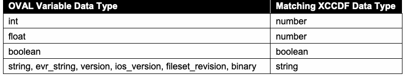
| OVAL変数データ型 | 対応するXCCDFデータ型 |
| int | 数値 |
| float | 数値 |
| 真偽値 | 真偽値 |
| string, evr_string, version, ios_version, fileset_revision, binary | 文字列 |
3.2.6 The <xccdf:Group> Element
3.2.6 <xccdf:Group>要素
XCCDF group extension SHALL NOT be allowed.
XCCDFグループの拡張は許可してはならない SHALL NOT 。
未レビュー訳3.3 Open Vulnerability and Assessment Language (OVAL)
3.3 Open Vulnerability and Assessment Language（OVAL）
This section lists requirements and recommendations for using the Open Vulnerability and Assessment Language (OVAL) to express an OVAL component of an SCAP source data stream (see Table 14). See the SCAP 1.3 annex document, NIST SP 800-126A [SP800-126A], for requirements regarding which OVAL component specification (core schema) versions and platform schema versions shall or may be used in SCAP 1.3 content. Because SCAP 1.3 supports the use of multiple OVAL source data stream components, an SCAP content creator could choose to divide the OVAL definitions into multiple components. For example, a content creator could create one OVAL source data stream component containing a set of OVAL definitions for one OVAL core version (e.g., 5.10.1) and another set of OVAL definitions for a newer OVAL core version (e.g., 5.11.2) if both versions are valid according to SCAP 1.3 requirements. SCAP 1.3 also supports multiple types of OVAL definitions within a single OVAL source data stream component; for example, a benchmark could reference OVAL compliance and vulnerability definitions contained in a single data stream component. The version of any particular OVAL document instance SHALL be specified using the <oval:schema_version> content element of the <oval:generator> element, as in this example:
本節では、SCAPソースデータストリームのOVALコンポーネント（表14参照）を表現するためにOpen Vulnerability and Assessment Language（OVAL）を使用する際の要件と推奨事項を列挙する。SCAP 1.3コンテンツで使用できるOVALコンポーネント仕様（コアスキーマ）のバージョンおよびプラットフォームスキーマのバージョンに関する要件は、SCAP 1.3付属書NIST SP 800-126A [SP800-126A]を参照。本仕様の英語原文にあるshallまたはmayは通常の小文字表記であり、規範的キーワードではない。SCAP 1.3は複数のOVALソースデータストリームコンポーネントの使用をサポートするため、SCAPコンテンツ作成者はOVAL定義を複数コンポーネントに分割できる。例えば、両方のバージョンがSCAP 1.3要件に適合する場合、あるOVALコアバージョン（例：5.10.1）のOVAL定義群を含むコンポーネントと、より新しいOVALコアバージョン（例：5.11.2）の別のOVAL定義群を含むコンポーネントを作成できる。SCAP 1.3は、1つのOVALソースデータストリームコンポーネント内で複数種類のOVAL定義を使用することもサポートする。例えば、ベンチマークは、1つのデータストリームコンポーネントに含まれるOVAL準拠定義と脆弱性定義を参照できる。個々のOVAL文書インスタンスのバージョンは、この例のように<oval:generator>要素の<oval:schema_version>コンテンツ要素を用いて指定しなければならない SHALL ：
未レビュー訳<oval:generator> <oval:product_name>The OVAL Repository</oval:product_name> <oval:schema_version>5.11</oval:schema_version> </oval:generator>
<oval:generator> <oval:product_name>The OVAL Repository</oval:product_name> <oval:schema_version>5.11</oval:schema_version> </oval:generator>
未レビュー訳The version(s) that is specified using the <oval:schema_version> content element SHALL correspond to the version(s) specified by the @xsi:schemaLocation attribute value for the OVAL schema, if an @xsi:schemaLocation attribute is specified.
<oval:schema_version>コンテンツ要素で指定するバージョンは、@xsi:schemaLocation属性が指定されている場合、OVALスキーマに対する同属性値で指定されるバージョンと一致しなければならない SHALL 。
Some OVAL interpreters make use of the OVAL variable format to allow variable values to be passed to the OVAL interpreter. While the OVAL variable format is not part of an SCAP data stream, this format can be used to carry variable information as part of an SCAP product for non-SCAP-related purposes.
一部のOVALインタープリターは、変数値を渡すためにOVAL変数形式を使用する。OVAL変数形式はSCAPデータストリームの一部ではないが、SCAPと無関係な目的で、SCAP製品の一部として変数情報を運ぶために使用できる。
未レビュー訳If an <oval-var:oval_variables> element is used to carry variable values between an XCCDF processor and an OVAL processor, the <oval:schema_version> of the <oval-var:oval_variables> element SHALL be the same as that of the <oval-def:oval_definitions> element whose external variables are bound by the <oval-var:oval_variables> element.
<oval-var:oval_variables>要素をXCCDFプロセッサーとOVALプロセッサー間で変数値を渡すために使用する場合、<oval-var:oval_variables>要素の<oval:schema_version>は、その要素によって外部変数がバインドされる<oval-def:oval_definitions>要素のものと同一でなければならない SHALL 。
未レビュー訳Required values for the @class attribute of an OVAL Definition are as follows:
OVAL定義の@class属性に必要な値は次のとおり：
未レビュー訳1.“compliance” if it represents a check for the system’s configuration complying with policy requirements (for example, having the required value for a specific configuration setting).
1.「compliance」：システム構成がポリシー要件に準拠していること（例えば、特定の構成設定に必要な値が設定されていること）を確認する場合。
2.“vulnerability” if it represents a check for the presence of a particular software flaw vulnerability on a system.
2.「vulnerability」：システムに特定のソフトウェア欠陥の脆弱性が存在するかを確認する場合。
3.“patch” if it represents a check for whether a discrete patch needs to be installed on the system.
3.「patch」：個別のパッチをシステムにインストールする必要があるかを確認する場合。
4.“inventory” if it represents a check for the presence of a product of interest on the system.
4.「inventory」：対象製品がシステムに存在するかを確認する場合。
The following requirements apply to particular classes of OVAL Definitions:
特定のクラスのOVAL定義には、次の要件が適用される：
1.For compliance class definitions:
1.complianceクラス定義の場合：
未レビュー訳a. If an OVAL compliance class definition maps to one or more CCE identifiers, the definition SHOULD include <oval-def:reference> elements that reference those identifiers using the following format:
a. OVAL complianceクラス定義が1つ以上のCCE識別子に対応する場合、その定義には次の形式で識別子を参照する<oval-def:reference>要素を含めるべきである SHOULD ：
未レビュー訳<oval-def:reference source="http://cce.mitre.org" ref_id="CCE_identifier"/>
<oval-def:reference source="http://cce.mitre.org" ref_id="CCE_identifier"/>
未レビュー訳The source attribute SHALL be defined using either “http://cce.mitre.org” (preferred method) or “CCE”. b. Definitions that are directly or indirectly extended SHALL be limited to inventory and compliance classes.
source属性は「http://cce.mitre.org」（推奨方式）または「CCE」のいずれかを用いて定義しなければならない SHALL 。b. 直接または間接的に拡張された定義は、inventoryクラスおよびcomplianceクラスに限定しなければならない SHALL 。
未レビュー訳2.For inventory class definitions:
2.inventoryクラス定義の場合：
未レビュー訳a. If an OVAL inventory class definition maps to one or more CPE identifiers, the definition SHOULD include <oval-def:reference> elements that reference those identifiers using the following format:
a. OVAL inventoryクラス定義が1つ以上のCPE識別子に対応する場合、その定義には次の形式で識別子を参照する<oval-def:reference>要素を含めるべきである SHOULD ：
未レビュー訳<oval-def:reference source="http://cpe.mitre.org" ref_id="CPE_identifier"/>
<oval-def:reference source="http://cpe.mitre.org" ref_id="CPE_identifier"/>
未レビュー訳The source attribute SHALL be defined using either “http://cpe.mitre.org” (preferred method) or “CPE”. b. Definitions that are directly or indirectly extended SHALL be limited to the inventory class.
source属性は「http://cpe.mitre.org」（推奨方式）または「CPE」のいずれかを用いて定義しなければならない SHALL 。b. 直接または間接的に拡張された定義は、inventoryクラスに限定しなければならない SHALL 。
未レビュー訳3.For patch class definitions:
3.patchクラス定義の場合：
未レビュー訳a. If an OVAL patch class definition is associated with a source specific identifier (for example, Knowledge Base numbers for Microsoft patches), these identifiers SHOULD be included in <oval-def:reference> elements contained by the definition. For example:
a. OVAL patchクラス定義がソース固有の識別子（例：MicrosoftパッチのKnowledge Base番号）に関連付けられている場合、それらの識別子を定義に含まれる<oval-def:reference>要素に記載するべきである SHOULD 。例：
未レビュー訳<oval-def:reference source="www.microsoft.com/Patch" ref_id="KB912919"/> b. If an OVAL patch class definition maps to one or more CVE identifiers, the definition MAY include <oval-def:reference> elements that reference those identifiers using the following format:
<oval-def:reference source="www.microsoft.com/Patch" ref_id="KB912919"/> b. OVAL patchクラス定義が1つ以上のCVE識別子に対応する場合、その定義には次の形式で識別子を参照する<oval-def:reference>要素を含めてもよい MAY ：
未レビュー訳<oval-def:reference source="http://cve.mitre.org" ref_id="CVE_identifier"/>
<oval-def:reference source="http://cve.mitre.org" ref_id="CVE_identifier"/>
未レビュー訳This recommendation is weaker than its counterparts for the other class definition types because a CVE identifier is not an identifier for a patch; it is more of an association. For example, one patch could fix multiple vulnerabilities, so it would map to multiple CVE identifiers.
この推奨事項は、他の定義クラス種別に関する推奨事項より弱い。CVE識別子はパッチ自体を識別するものではなく、関連付けを示すものだからである。例えば、1つのパッチが複数の脆弱性を修正し、複数のCVE識別子に対応する場合がある。
未レビュー訳The source attribute SHALL be defined using either “http://cve.mitre.org” (preferred method) or “CVE”. c. Definitions that are directly or indirectly extended SHALL be limited to inventory and patch classes.
source属性は「http://cve.mitre.org」（推奨方式）または「CVE」のいずれかを用いて定義しなければならない SHALL 。c. 直接または間接的に拡張された定義は、inventoryクラスおよびpatchクラスに限定しなければならない SHALL 。
未レビュー訳4.For vulnerability class definitions:
4.vulnerabilityクラス定義の場合：
未レビュー訳a. If an OVAL vulnerability class definition maps to one or more CVE identifiers, the definition SHOULD include <oval-def:reference> elements that reference those identifiers using the following format:
a. OVAL vulnerabilityクラス定義が1つ以上のCVE識別子に対応する場合、その定義には次の形式で識別子を参照する<oval-def:reference>要素を含めるべきである SHOULD ：
未レビュー訳<oval-def:reference source="http://cve.mitre.org" ref_id="CVE_identifier"/>
<oval-def:reference source="http://cve.mitre.org" ref_id="CVE_identifier"/>
未レビュー訳The source attribute SHALL be defined using either “http://cve.mitre.org” (preferred method) or “CVE”. b. Definitions that are directly or indirectly extended SHALL be limited to inventory and vulnerability classes.
source属性は「http://cve.mitre.org」（推奨方式）または「CVE」のいずれかを用いて定義しなければならない SHALL 。b. 直接または間接的に拡張された定義は、inventoryクラスおよびvulnerabilityクラスに限定しなければならない SHALL 。
未レビュー訳5.For miscellaneous class definitions, no additional requirements apply.
5.miscellaneousクラス定義には追加要件は適用されない。
3.4 Open Checklist Interactive Language (OCIL)
3.4 Open Checklist Interactive Language（OCIL）
This section lists recommendations for using the Open Checklist Interactive Language (OCIL) to express an OCIL component of an SCAP source data stream (see Table 14). OCIL content SHOULD be used for checking rules that cannot be fully automated with OVAL. For example, a particular software product may not have an application programming interface (API) that supports OVAL use. Another example is performing a check that requires user interaction, such as asking the user to look up information within a management console or to report a serial number affixed to a computing device. OCIL can also be used to collect a user’s own information, such as whether the user participated in a recent security training session. If an <ocil:questionnaire> element maps to one or more CCE, CVE, and/or CPE identifiers, it SHOULD include <ocil:reference> elements that reference those identifiers using the corresponding following format:
本節では、SCAPソースデータストリームのOCILコンポーネント（表14参照）を表現するためにOpen Checklist Interactive Language（OCIL）を使用する際の推奨事項を列挙する。OVALで完全に自動化できないチェック規則にはOCILコンテンツを使用するべきである SHOULD 。例えば、特定のソフトウェア製品にOVAL使用をサポートするアプリケーションプログラミングインターフェース（API）がない場合がある。別の例として、管理コンソール内の情報を調べたり、コンピューティングデバイスに貼付されたシリアル番号を報告したりするようユーザーに尋ねるなど、ユーザーとのやり取りを必要とするチェックがある。ユーザーが最近セキュリティ研修に参加したかどうかなど、ユーザー自身に関する情報を収集するためにOCILを使用することもできる。<ocil:questionnaire>要素が1つ以上のCCE、CVE、および／またはCPE識別子に対応する場合、次の対応する形式でそれらを参照する<ocil:reference>要素を含めるべきである SHOULD ：
未レビュー訳CCE_identifier
CCE_identifier
未レビュー訳<ocil:reference href="http://cce.mitre.org">
<ocil:reference href="http://cce.mitre.org">
未レビュー訳</ocil:reference>
</ocil:reference>
未レビュー訳CVE_identifier
CVE_identifier
未レビュー訳<ocil:reference href="http://cve.mitre.org">
<ocil:reference href="http://cve.mitre.org">
未レビュー訳</ocil:reference>
</ocil:reference>
未レビュー訳CPE_identifier
CPE_identifier
未レビュー訳<ocil:reference href="http://cpe.mitre.org">
<ocil:reference href="http://cpe.mitre.org">
未レビュー訳</ocil:reference>
</ocil:reference>
未レビュー訳3.5 Common Platform Enumeration (CPE)
3.5 Common Platform Enumeration（CPE）
This section lists requirements and recommendations for using Common Platform Enumeration (CPE) to express a CPE component of an SCAP source data stream (see Table 14). The Official CPE Dictionary data feed16 MAY be used by SCAP components to reference CPE names. If use of the Official CPE Dictionary is impractical, a subset of the dictionary MAY be used instead. Creating the reduced official dictionary involves first identifying every CPE in <xccdf:platform> and <cpe2:fact-ref> elements contained within referenced <cpe2:platform-specification> elements in every benchmark in the data stream. Then these CPEs SHALL be matched against every entry in the Official CPE Dictionary using the CPE name matching algorithm [CPE-M]. All CPEs matched in the official dictionary with a result of EQUAL or SUPERSET SHALL be included in the reduced official dictionary. One or more third-party dictionaries MAY be included in a data stream as well. All such third-party dictionaries SHOULD follow the requirements of the CPE Dictionary specification [CPE-D]. If including an entire third-party dictionary is impractical, a subset of the dictionary MAY be used instead. The reduced dictionary SHALL be created using the same procedure outlined for creating a subset of the official dictionary. In all cases, a dictionary component MAY be remote to the data stream collection. Each CPE name [CPE-N] in an <xccdf:platform> or <cpe2:fact-ref> element within an XCCDF document SHALL match at least one CPE entry in a dictionary referenced by the data stream. A match is considered an EQUAL or SUPERSET result when matching the CPE name to a dictionary entry, as defined in the CPE Name Matching specification [CPE-M]. Only non-deprecated names SHOULD be used. Checklist authors SHOULD ensure that each CPE name [CPE-N] they specify in an <xccdf:platform> or <cpe2:fact-ref> element within an XCCDF document has a check associated with its CPE name. If a corresponding check does not exist, then it will not be possible to fully detect the presence of the product and determine platform applicability. Because there may be a lag between the time that a new product is available and the Official CPE Dictionary is updated to include a CPE name for that product, third-party dictionaries would need to be used to compensate for the lag. [CPE-D] provides the defining structure of a CPE dictionary. A <cpe2_dict:cpe-item> element MAY contain one or more <cpe2-dict:check> elements that reference OVAL inventory class definitions using the following format:
本節では、SCAPソースデータストリームのCPEコンポーネント（表14参照）を表現するためにCommon Platform Enumeration（CPE）を使用する際の要件と推奨事項を列挙する。Official CPE Dictionaryデータフィード16は、CPE名を参照するためにSCAPコンポーネントで使用してもよい MAY 。Official CPE Dictionaryの使用が実用的でない場合、辞書のサブセットを代わりに使用してもよい MAY 。公式辞書の縮小版を作成するには、まずデータストリーム内の各ベンチマークに含まれる<xccdf:platform>要素および、参照される<cpe2:platform-specification>要素内の<cpe2:fact-ref>要素にあるすべてのCPEを特定する。次に、CPE名照合アルゴリズム[CPE-M]を使用して、これらのCPEをOfficial CPE Dictionaryの各エントリと照合しなければならない SHALL 。公式辞書内で照合結果がEQUALまたはSUPERSETとなったすべてのCPEを、縮小版公式辞書に含めなければならない SHALL 。1つ以上のサードパーティ辞書をデータストリームに含めてもよい MAY 。このようなサードパーティ辞書はすべて、CPE Dictionary仕様[CPE-D]の要件に従うべきである SHOULD 。サードパーティ辞書全体を含めることが実用的でない場合、辞書のサブセットを代わりに使用してもよい MAY 。縮小辞書は、公式辞書のサブセットを作成するために示したものと同じ手順で作成しなければならない SHALL 。いずれの場合も、辞書コンポーネントはデータストリームコレクションの外部に配置してもよい MAY 。XCCDF文書内の<xccdf:platform>要素または<cpe2:fact-ref>要素にある各CPE名[CPE-N]は、データストリームが参照する辞書内の少なくとも1つのCPEエントリと一致しなければならない SHALL 。CPE名照合仕様[CPE-M]の定義に従い、CPE名と辞書エントリの照合結果がEQUALまたはSUPERSETの場合、一致とみなす。廃止されていない名前のみを使用するべきである SHOULD 。チェックリスト作成者は、XCCDF文書内の<xccdf:platform>要素または<cpe2:fact-ref>要素で指定する各CPE名[CPE-N]に、そのCPE名に関連付けられたチェックがあることを確認するべきである SHOULD 。対応するチェックが存在しない場合、製品の存在を完全に検出してプラットフォームの適用可能性を判断することはできない。新製品の提供開始からOfficial CPE Dictionaryにその製品のCPE名が追加されるまで遅延する場合があるため、その遅延を補うためにサードパーティ辞書を使用する必要がある。[CPE-D]はCPE辞書の定義構造を規定する。<cpe2_dict:cpe-item>要素には、次の形式でOVAL inventoryクラス定義を参照する<cpe2-dict:check>要素を1つ以上含めてもよい MAY ：
未レビュー訳<cpe2_dict:check system="http://oval.mitre.org/XMLSchema/oval-definitions-5"
<cpe2_dict:check system="http://oval.mitre.org/XMLSchema/oval-definitions-5"
未レビュー訳oval_URL oval_inventory_definition_id
oval_URL oval_inventory_definition_id
未レビュー訳[href="
[href="
未レビュー訳"]>
"]>
未レビュー訳</cpe2_dict:check>
</cpe2_dict:check>
未レビュー訳For example:
例えば：
未レビュー訳<cpe2_dict:cpe-list xmlns="http://cpe.mitre.org/dictionary/2.0"
<cpe2_dict:cpe-list xmlns="http://cpe.mitre.org/dictionary/2.0"
未レビュー訳xmlns:cpe2_dict="http://cpe.mitre.org/dictionary/2.0">
xmlns:cpe2_dict="http://cpe.mitre.org/dictionary/2.0">
未レビュー訳<cpe2_dict:cpe-item name="cpe:/a:sun:java_system_messaging_server:6.2:-:sparc"> <cpe2_dict:title>Sun Java System Messaging Server 6.2 sparc</title> <cpe2_dict:check system=http://oval.mitre.org/XMLSchema/oval-definitions-5 href="example-sunjavamsg62-oval.xml">oval:org.mitre.oval:def:128 </cpe2_dict:check> <cpe-dict-ext:cpe23-item name="cpe:2.3:a:sun:java_system_messaging_server:6.2:-:-:-:-:-:sparc:-"/>
<cpe2_dict:cpe-item name="cpe:/a:sun:java_system_messaging_server:6.2:-:sparc"> <cpe2_dict:title>Sun Java System Messaging Server 6.2 sparc</title> <cpe2_dict:check system=http://oval.mitre.org/XMLSchema/oval-definitions-5 href="example-sunjavamsg62-oval.xml">oval:org.mitre.oval:def:128 </cpe2_dict:check> <cpe-dict-ext:cpe23-item name="cpe:2.3:a:sun:java_system_messaging_server:6.2:-:-:-:-:-:sparc:-"/>
未レビュー訳</cpe2_dict:cpe-item> </cpe2_dict:cpe-list>
</cpe2_dict:cpe-item> </cpe2_dict:cpe-list>
未レビュー訳The referenced OVAL inventory class definition SHALL specify the technical procedure for determining whether or not a specific target asset is an instance of the CPE name specified by the <cpe2_dict:cpe-item> element. This usage is encouraged for CPE components.
参照されるOVAL inventoryクラス定義は、特定の対象資産が<cpe2_dict:cpe-item>要素で指定されたCPE名のインスタンスであるかどうかを判定する技術的手順を指定しなければならない SHALL 。CPEコンポーネントではこの使用方法が推奨される。
未レビュー訳When creating a subset of the Official CPE Dictionary or a third-party dictionary, a <cpe2_dict:check> element on an entry MAY be added or modified if the existing check does not provide satisfactory content to test the presence of the CPE name. If a <cpe2_dict:cpe-item> element contained in a CPE component references an OVAL inventory class definition, then that definition SHALL be resolved by an @href attribute referencing an OVAL source data stream component in the same data stream.
Official CPE Dictionaryまたはサードパーティ辞書のサブセットを作成する場合、既存のチェックではCPE名の存在を確認する内容が十分でなければ、エントリ上の<cpe2_dict:check>要素を追加または変更してもよい MAY 。CPEコンポーネント内の<cpe2_dict:cpe-item>要素がOVAL inventoryクラス定義を参照する場合、その定義は同じデータストリーム内のOVALソースデータストリームコンポーネントを参照する@href属性によって解決しなければならない SHALL 。
未レビュー訳3.6 Software Identification (SWID) Tags
3.6 Software Identification（SWID）タグ
The syntax and construction of a SWID tag is defined in ISO/IEC 19770-2:2015 [SWID] and is further refined in NISTIR 8060 [SWID-CYBER]. For a software product that has an associated SWID tag, this tag should have been installed along with the software product. SWID tags can also exist for software patches. For software patches that have an associated SWID tag, this tag is expected to be installed along with the patch. When made available in these ways, a SWID tag provides evidence of the installation of a software product or patch. A SWID tag installed on a target asset SHALL be identified by an OVAL inventory class definition. The definition SHOULD use the <independent-def:xmlfilecontent_object> to search the file system for one or more SWID tags expressed in XML that match a desired XPath expression. If a SWID tag has been installed on the target endpoint for a software product or patch, then one of the following methods SHALL be used to detect the SWID tag on the target asset:
SWIDタグの構文と構成はISO/IEC 19770-2:2015 [SWID]で定義され、NISTIR 8060 [SWID-CYBER]でさらに詳細化されている。SWIDタグに関連付けられたソフトウェア製品では、このタグはソフトウェア製品とともにインストールされているはずである。ソフトウェアパッチにもSWIDタグが存在することがある。SWIDタグに関連付けられたソフトウェアパッチでは、このタグはパッチとともにインストールされる想定である。このように提供されるSWIDタグは、ソフトウェア製品またはパッチがインストールされた証拠となる。対象資産にインストールされたSWIDタグは、OVAL inventoryクラス定義によって識別しなければならない SHALL 。この定義は、<independent-def:xmlfilecontent_object>を使用し、所望のXPath式に一致するXML形式の1つ以上のSWIDタグをファイルシステムから検索するべきである SHOULD 。対象エンドポイントにソフトウェア製品またはパッチのSWIDタグがインストールされている場合、対象資産上のSWIDタグの検出には次のいずれかの方法を使用しなければならない SHALL ：
未レビュー訳1.One or more <cpe2-dict:check> elements that reference an OVAL inventory class definition that searches for the presence of a matching SWID tag.
1.一致するSWIDタグの存在を検索するOVAL inventoryクラス定義を参照する<cpe2-dict:check>要素を1つ以上使用する。
未レビュー訳2.A <cpe:check-fact-ref> element that references an OVAL inventory class definition that searches for the presence of a matching SWID tag.
2.一致するSWIDタグの存在を検索するOVAL inventoryクラス定義を参照する<cpe:check-fact-ref>要素。
3.An OVAL definition that references another OVAL inventory class definition using the <oval-def:extend_definition> element where the extended definition searches for the presence of a matching SWID tag.
3.<oval-def:extend_definition>要素を使用して別のOVAL inventoryクラス定義を参照するOVAL定義を使用する。この拡張定義は一致するSWIDタグの存在を検索する。
未レビュー訳3.7 Common Configuration Enumeration (CCE)
3.7 Common Configuration Enumeration（CCE）
To maintain consistency and accuracy, SCAP content referencing a configuration setting SHALL use the official CCE identifier if a CCE entry for a particular configuration setting exists in the official CCE list. If no CCE entry exists for the configuration setting of interest, the content author SHOULD seek to have a CCE identifier issued for the configuration setting. See the OVAL compliance class definition requirements in Section 3.3 and the <xccdf:ident> requirements in Section 3.2.4.1 for additional requirements involving CCE identifier references. The current official CCE list is available at https://nvd.nist.gov/config/cce/index, and new CCEs can be requested from NIST via email (cce@nist.gov).
一貫性と正確性を保つため、構成設定を参照するSCAPコンテンツは、該当する構成設定のCCEエントリが公式CCE一覧に存在する場合、公式CCE識別子を使用しなければならない SHALL 。その構成設定のCCEエントリが存在しない場合、コンテンツ作成者は、その構成設定にCCE識別子を発行してもらうよう申請するべきである SHOULD 。CCE識別子参照に関する追加要件については、3.3節のOVAL complianceクラス定義要件および3.2.4.1節の<xccdf:ident>要件を参照。現在の公式CCE一覧は https://nvd.nist.gov/config/cce/index で入手でき、新しいCCEはNISTに電子メール（cce@nist.gov）で申請できる。
未レビュー訳Use of an official, dynamic data feed is preferred to static coding of CCE-related supporting information in SCAP data sources. For example, NVD provides a data feed17 that is the authoritative mapping between CCE identifiers and the control identifiers defined in NIST SP 800-53. Embedding control identifiers within SCAP content is strongly discouraged due to the maintenance burden that it imposes on content maintainers when the control identifiers are revised. A preferred technique is to embed only the CCE identifiers within SCAP content; when mappings to NIST SP 800-53 control identifiers are needed, dynamically acquire them from the official data feed and associate them to the SCAP content based on its embedded CCE identifiers.
SCAPデータソース内のCCE関連補足情報を静的にコード化するより、公式の動的データフィードを使用することが望ましい。例えばNVDは、CCE識別子とNIST SP 800-53で定義される管理策識別子との正式な対応付けであるデータフィード17を提供する。管理策識別子をSCAPコンテンツ内に埋め込むことは、管理策識別子の改訂時にコンテンツ保守者へ保守負担を課すため、強く推奨されない。望ましい手法は、SCAPコンテンツ内にCCE識別子のみを埋め込み、NIST SP 800-53管理策識別子との対応付けが必要な場合は、公式データフィードから動的に取得し、埋め込み済みCCE識別子に基づいてSCAPコンテンツに関連付けることである。
未レビュー訳3.8 Common Vulnerabilities and Exposures (CVE)
3.8 Common Vulnerabilities and Exposures（CVE）
CVE references in SCAP content MAY include both “candidate” and “entry” status identifiers. Deprecated CVE identifiers SHALL NOT be used. If a CVE identifier exists for a particular vulnerability, the official CVE identifier SHALL be used. If no CVE exists for the software flaw, an alternate identifier MAY be used, but the user SHOULD seek to have a CVE identifier issued for the vulnerability. Information on submitting unpublished vulnerabilities and obtaining CVE identifiers is available at https://cve.mitre.org/cve/request_id.html. NIST provides a CVE data feed to support dynamic and current vulnerability information and associated metadata (e.g., CVSS values). The current schema is available at https://nvd.nist.gov/vuln/data-feeds#CVE_FEED.
SCAPコンテンツ内のCVE参照には、「candidate」および「entry」状態の識別子を含めてもよい MAY 。廃止されたCVE識別子を使用してはならない SHALL NOT 。特定の脆弱性にCVE識別子が存在する場合、公式CVE識別子を使用しなければならない SHALL 。ソフトウェア欠陥にCVEが存在しない場合は代替識別子を使用してもよい MAY が、脆弱性のCVE識別子を発行してもらうよう申請するべきである SHOULD 。未公開脆弱性の提出およびCVE識別子の取得に関する情報は https://cve.mitre.org/cve/request_id.html で入手できる。NISTは、動的かつ最新の脆弱性情報と関連メタデータ（例：CVSS値）を支援するCVEデータフィードを提供する。現在のスキーマは https://nvd.nist.gov/vuln/data-feeds#CVE_FEED で入手できる。
未レビュー訳3.9 Common Vulnerability Scoring System (CVSS)
3.9 Common Vulnerability Scoring System（CVSS）
The NIST CVE data feed, discussed in Section 3.8, is one source of CVSS base score and vector data that MAY be used by products to support additional use cases built on SCAP usage. In support of these additional use cases, CVSS base scores and vectors from this data feed MAY be used by products along with temporal and environmental scores and vectors from other sources.
3.8節で説明したNIST CVEデータフィードは、CVSS基本スコアおよびベクトルデータの情報源の1つであり、製品がSCAPの使用を基盤とする追加ユースケースを支援するために利用してもよい MAY 。このような追加ユースケースを支援するため、製品はこのデータフィードのCVSS基本スコアおよびベクトルを、他の情報源から得た時間的スコアおよび環境スコアとともに使用してもよい MAY 。
3.10 Common Configuration Scoring System (CCSS)
3.10 Common Configuration Scoring System（CCSS）
CCSS base, temporal, and environmental scores and vectors MAY be used by products. Adopters of CCSS should be aware that it has significant differences from CVSS. Unlike CVSS data, which can be used by itself to aid in prioritizing vulnerability remediation efforts, CCSS data is not directly useful in the same way. Instead, CCSS data needs to be considered in the context of each organization’s security policies and in the context of dependencies among vulnerabilities. See [CCSS] for additional information.
製品はCCSSの基本スコア、時間的スコア、環境スコアおよびベクトルを使用してもよい MAY 。CCSS採用者は、CCSSがCVSSと大きく異なることに留意するべきである。脆弱性の修正優先順位付けに役立てるため単独で使用できるCVSSデータとは異なり、CCSSデータは同じ方法では直接有用ではない。CCSSデータは、各組織のセキュリティポリシーおよび脆弱性間の依存関係を踏まえて検討する必要がある。詳細は[CCSS]を参照。
3.11 XML Digital Signature
3.11 XMLデジタル署名
Digitally signing source data streams is important to ensuring the integrity and trustworthiness of legitimate content, while preventing rogue content from being executed. Leveraging the Trust Model for Security Automation Data (TMSAD) specification [TMSAD] for SCAP can improve the legitimacy of authoritative content and create a more secure environment. As such, content authors MAY digitally sign source content following the guidelines in [TMSAD], along with the following requirements. One or more XML digital signatures MAY be included as the last elements in the SCAP source data stream collection root element. Each signature SHALL be represented as a <dsig:Signature> element and follow the W3C recommendation [DSIG]. Each <dsig:Signature> element SHALL sign only one data stream. The <dsig:Signature> element SHALL follow the recommendations in [TMSAD] and these additional requirements:
ソースデータストリームにデジタル署名することは、正規のコンテンツの完全性と信頼性を確保し、不正なコンテンツの実行を防止するうえで重要である。SCAPでTrust Model for Security Automation Data（TMSAD）仕様[TMSAD]を活用すると、権威あるコンテンツの正当性を高め、より安全な環境を実現できる。そのため、コンテンツ作成者は[TMSAD]の指針に従ってソースコンテンツにデジタル署名してもよい MAY 。加えて、次の要件に従う。SCAPソースデータストリームコレクションのルート要素内で、XMLデジタル署名を1つ以上の最後の要素として含めてもよい MAY 。各署名は<dsig:Signature>要素で表し、W3C勧告[DSIG]に従わなければならない SHALL 。各<dsig:Signature>要素はデータストリーム1つだけに署名しなければならない SHALL 。<dsig:Signature>要素は[TMSAD]の推奨事項および次の追加要件に従わなければならない SHALL ：
未レビュー訳1.A <dsig:Manifest> element SHALL be included within the <dsig:Signature> element as a <dsig:Object> element. The <dsig:Manifest> element SHALL have a <dsig:Reference> element for each local component referenced by the data stream being signed. External components MAY be omitted from the <dsig:Manifest> element. Each <dsig:Reference> element referencing a <ds:component> or <ds:extended-component> element SHALL point to the component being signed by identifying the component in the @URI attribute using “#” + @Id of the component.
1.<dsig:Manifest>要素を<dsig:Signature>要素内に<dsig:Object>要素として含めなければならない SHALL 。<dsig:Manifest>要素は、署名対象のデータストリームが参照する各ローカルコンポーネントについて<dsig:Reference>要素を持たなければならない SHALL 。外部コンポーネントは<dsig:Manifest>要素から省略してもよい MAY 。<ds:component>要素または<ds:extended-component>要素を参照する各<dsig:Reference>要素は、そのコンポーネントの@URI属性に「#」+コンポーネントの@Idを指定することで、署名対象のコンポーネントを指さなければならない SHALL 。
未レビュー訳2.A <dsig:SignatureProperties> element SHALL be included within the <dsig:Signature> element as a <dsig:Object> element. At least one <dsig:SignatureProperty> element SHALL be populated with <dt:signature-info> as specified in [TMSAD].
2.<dsig:SignatureProperties>要素を<dsig:Signature>要素内に<dsig:Object>要素として含めなければならない SHALL 。少なくとも1つの<dsig:SignatureProperty>要素に、[TMSAD]で規定される<dt:signature-info>を設定しなければならない SHALL 。
未レビュー訳3.The first <dsig:Reference> element in a <dsig:Signature> element SHALL be to the <ds:data-stream> element being signed. The <ds:data-stream> element SHALL be referenced in the @URI attribute using “#” + @Id of the <ds:data-stream> element.
3.<dsig:Signature>要素内の最初の<dsig:Reference>要素は、署名対象の<ds:data-stream>要素を参照しなければならない SHALL 。<ds:data-stream>要素は、同要素の@Idに「#」を付加した値を@URI属性に指定して参照しなければならない SHALL 。
未レビュー訳4.The second <dsig:Reference> element in a <dsig:Signature> element SHALL be to the <dsig:SignatureProperties> element captured in a <dsig:Object> element within the <dsig:Signature> element. The <dsig:SignatureProperties> element SHALL be referenced in the @URI attribute using “#” + @Id of the<dsig:SignatureProperties> element.
4.<dsig:Signature>要素内の2番目の<dsig:Reference>要素は、<dsig:Signature>要素内の<dsig:Object>要素に格納された<dsig:SignatureProperties>要素を参照しなければならない SHALL 。<dsig:SignatureProperties>要素は、その要素の@Idに「#」を付加した値を@URI属性に指定して参照しなければならない SHALL 。
未レビュー訳5.The third <dsig:Reference> element SHALL be to the <dsig:Manifest> element captured in a <dsig:Object> element with the <dsig:Signature> element. The <dsig:Manifest> element SHALL be referenced in the @URI attribute using “#” + @Id attribute of the <dsig:Manifest> element.
5.3番目の<dsig:Reference>要素は、<dsig:Signature>要素内の<dsig:Object>要素に格納された<dsig:Manifest>要素を参照しなければならない SHALL 。<dsig:Manifest>要素は、その要素の@Id属性に「#」を付加した値を@URI属性に指定して参照しなければならない SHALL 。
未レビュー訳6.<dsig:Reference> elements on the <dsig:Manifest> element SHOULD be in the same order as the <ds:component-ref> elements on the data stream being signed.
6.<dsig:Manifest>要素内の<dsig:Reference>要素は、署名対象データストリーム内の<ds:component-ref>要素と同じ順序であるべきである SHOULD 。
未レビュー訳7.Cryptographic key information SHOULD be provided in the <dsig:Signature> element through use of the <dsig:KeyInfo> subelement..
7.暗号鍵情報は、<dsig:KeyInfo>サブ要素を使用して<dsig:Signature>要素内に提供するべきである SHOULD 。
未レビュー訳4. SCAP Content Processing Requirements and Recommendations
4. SCAPコンテンツ処理の要件と推奨事項
未レビュー訳This section defines the processing requirements that SCAP content consumers SHALL follow to correctly process SCAP 1.3 content. This section also provides recommendations that are not mandatory; organizations are encouraged to adopt them to promote stronger interoperability and greater consistency. The topics covered in the first part of this section are legacy support, source data streams, and XCCDF processing. The end of the section covers result-related topics: SCAP result data streams, XCCDF results, OVAL results, OCIL results, and result data stream signing.
本節では、SCAPコンテンツ利用者がSCAP 1.3コンテンツを正しく処理するために従わなければならない処理要件を定義する SHALL 。本節では必須ではない推奨事項も示す。組織には、相互運用性と一貫性を高めるため、これらの推奨事項を採用することが推奨される。本節前半では、レガシーサポート、ソースデータストリーム、XCCDF処理を扱う。後半では結果に関するトピック、すなわちSCAP結果データストリーム、XCCDF結果、OVAL結果、OCIL結果、および結果データストリームへの署名を扱う。
未レビュー訳4.1 Legacy Support
4.1 レガシーサポート
Content consumers supporting SCAP 1.3 SHALL be capable of processing SCAP 1.3 content and the legacy SCAP 1.2 and 1.1 content versions. Content consumers SHALL process SCAP content as defined under the corresponding version of NIST SP 800-126 (for SCAP 1.3, this revision; for SCAP 1.2, revision 2; for SCAP 1.1, revision 1).18 Content consumers that process legacy SCAP content SHALL be capable of outputting results in the current SCAP revision. Additionally, content consumers MAY output results in the same SCAP version as the source content. For producers of results in legacy formats, legacy results MAY also be converted into results based on the current SCAP revision. Within the SCAP component specifications, certain constructs can be deprecated.19 SCAP content consumers SHALL support all deprecated constructs, unless specifically noted in the annex, because they are still valid within SCAP 1.3 and supported legacy SCAP versions. This requirement ensures that legacy SCAP content making use of these deprecated constructs continues to be supported. Content consumers supporting OVAL SHALL support OVAL Definition documents written against all versions of OVAL component specifications listed in the annex.
SCAP 1.3をサポートするコンテンツ利用者は、SCAP 1.3コンテンツおよびレガシーSCAP 1.2と1.1のコンテンツバージョンを処理できなければならない SHALL 。コンテンツ利用者は、対応するNIST SP 800-126のバージョンで定義されるとおりにSCAPコンテンツを処理しなければならない SHALL （SCAP 1.3は本改訂版、SCAP 1.2は改訂第2版、SCAP 1.1は改訂第1版）。18 レガシーSCAPコンテンツを処理するコンテンツ利用者は、現行のSCAP改訂版で結果を出力できなければならない SHALL 。また、コンテンツ利用者はソースコンテンツと同じSCAPバージョンで結果を出力してもよい MAY 。レガシー形式の結果を生成する場合、レガシー結果を現行SCAP改訂版に基づく結果へ変換してもよい MAY 。SCAPコンポーネント仕様では、特定の構文が廃止予定となることがある。1919 SCAPコンテンツ利用者は、付属書に明記された場合を除き、廃止予定の構文をすべてサポートしなければならない SHALL 。これらはSCAP 1.3およびサポート対象のレガシーSCAPバージョンで引き続き有効だからである。この要件により、廃止予定構文を使用するレガシーSCAPコンテンツのサポートが継続される。OVALをサポートするコンテンツ利用者は、付属書に列挙されたすべてのOVALコンポーネント仕様バージョンに基づいて記述されたOVAL定義文書をサポートしなければならない SHALL 。
未レビュー訳4.2 Source Data Streams
4.2 ソースデータストリーム
Content consumers SHALL be capable of validating SCAP content against the appropriate schemas and Schematron stylesheets, detecting and reporting errors, and failing gracefully if there are errors. The relevant XML schemas are located at https://scap.nist.gov/revision/1.3/#schema, and the relevant Schematron rule sets at https://scap.nist.gov/revision/1.3/#schematron. See Section 3.1 for additional information on the Schematron rule sets. Content consumers SHOULD validate XML digital signatures if they exist in the content. Validating a signature includes confirming that the signature value is valid, all of the reference hashes in the signature and manifest are correct, and the public key used to verify the signature is from a trusted source. A data stream with a signature that does not validate SHOULD NOT be evaluated by a content consumer. Whenever a <ds:extended-component> that is not recognized by the tool is referenced from a <ds:data-stream>, <ds:component>, or <ds:extended-component> element, the tool SHALL issue a warning. If more than one <ds:data-stream> element is specified on the <ds:data-stream-collection>, the ID of the <ds:data-stream> to execute SHALL be indicated to the content consumer, and the content consumer SHALL use the specified <ds:data-stream>. If more than one <xccdf:Benchmark> is referenced by a <ds:data-stream>, the ID of the <xccdf:Benchmark> to execute SHALL be indicated to the content consumer, and the content consumer SHALL process the indicated <xccdf:Benchmark>. Because SCAP and its component specifications do not formally define how to designate a particular data stream, benchmark, etc. in these cases, it is expected that products will implement these capabilities in a proprietary way.
コンテンツ利用者は、SCAPコンテンツを適切なスキーマおよびSchematronスタイルシートに対して検証し、エラーを検出・報告し、エラーがある場合は適切に処理を失敗させることができなければならない SHALL 。関連するXMLスキーマは https://scap.nist.gov/revision/1.3/#schema、関連するSchematron規則セットは https://scap.nist.gov/revision/1.3/#schematron にある。Schematron規則セットの詳細は3.1節を参照。コンテンツ利用者は、コンテンツ内に存在する場合、XMLデジタル署名を検証するべきである SHOULD 。署名検証には、署名値が有効であること、署名およびマニフェスト内のすべての参照ハッシュが正しいこと、署名検証に使用する公開鍵が信頼できる情報源に由来することの確認が含まれる。検証に失敗する署名付きデータストリームは、コンテンツ利用者によって評価されるべきではない SHOULD NOT 。ツールが認識しない<ds:extended-component>を<ds:data-stream>、<ds:component>、または<ds:extended-component>要素から参照する場合、ツールは警告を発しなければならない SHALL 。<ds:data-stream-collection>に<ds:data-stream>要素が複数指定されている場合、実行する<ds:data-stream>のIDをコンテンツ利用者に示さなければならず SHALL 、コンテンツ利用者は指定された<ds:data-stream>を使用しなければならない SHALL 。<ds:data-stream>から<xccdf:Benchmark>が複数参照される場合、実行する<xccdf:Benchmark>のIDをコンテンツ利用者に示さなければならず SHALL 、コンテンツ利用者は指定された<xccdf:Benchmark>を処理しなければならない SHALL 。SCAPおよびそのコンポーネント仕様では、これらのケースで特定のデータストリーム、ベンチマークなどを指定する方法を正式に定義していないため、製品は独自方式でこれらの機能を実装すると想定される。
未レビュー訳4.3 XCCDF Processing
4.3 XCCDF処理
The following requirements and recommendations pertain to content consumers processing XCCDF benchmark and tailoring components from an SCAP source data stream.
次の要件と推奨事項は、SCAPソースデータストリームからXCCDFベンチマークおよびテーラリングコンポーネントを処理するコンテンツ利用者に適用される。
4.3.1 CPE Applicability Processing
4.3.1 CPE適用可能性の処理
CPEs referenced in an <xccdf:platform> element directly or by a <cpe2:fact-ref> contained within a referenced <cpe2:platform-specification> element SHALL be evaluated as follows to determine their presence on a machine:
<xccdf:platform>要素から直接、または参照される<cpe2:platform-specification>要素内の<cpe2:fact-ref>を通じて参照されるCPEは、マシン上の存在を判定するため、次のとおり評価しなければならない SHALL ：
1.The CPE SHALL be matched against all CPEs in all of the dictionaries referenced by the <ds:data-stream> element. All CPEs that return an EQUAL or SUPERSET result as defined in CPE Name Matching [CPE-M] SHALL be used in evaluating the <xccdf:platform> or <cpe2:fact-ref>.
1.CPEは、<ds:data-stream>要素が参照するすべての辞書内のすべてのCPEと照合しなければならない SHALL 。CPE Name Matching [CPE-M]で定義されるEQUALまたはSUPERSETの結果を返すすべてのCPEを、<xccdf:platform>または<cpe2:fact-ref>の評価に使用しなければならない SHALL 。
2.Either a list of CPEs found on the target asset SHALL be known before the scan, or a list SHALL be generated. If a previously known list is used, it SHALL be equivalent to a newly generated list. To generate the list, the <cpe2_dict:check> element data associated with the found <cpe2_dict:cpe-item> elements SHALL be evaluated against the target using the referenced OVAL inventory class definition. If a <cpe2_dict:check> returns “pass”, then the corresponding CPE SHALL be added to the list of CPEs found on the target.
2.対象資産上で見つかったCPEの一覧は、スキャン前に把握されていなければならない SHALL 、または生成しなければならない SHALL 。事前に把握された一覧を使用する場合、新たに生成した一覧と同等でなければならない SHALL 。一覧を生成するには、見つかった<cpe2_dict:cpe-item>要素に関連付けられた<cpe2_dict:check>要素のデータを、参照されるOVAL inventoryクラス定義を使用して対象に対して評価しなければならない SHALL 。<cpe2_dict:check>が「pass」を返す場合、対応するCPEを対象で見つかったCPEの一覧に加えなければならない SHALL 。
未レビュー訳3.The list of CPEs found on the target asset, along with the <xccdf:platform> or <cpe2:platform-specification> SHALL be used as input to the CPE Applicability Language [CPE-L] algorithm to determine the XCCDF Benchmark applicability to the target asset.
3.対象資産上で見つかったCPEの一覧を、<xccdf:platform>または<cpe2:platform-specification>とともにCPE Applicability Language [CPE-L]アルゴリズムへの入力として使用し、XCCDFベンチマークが対象資産に適用可能かを判定しなければならない SHALL 。
4.3.2 Checking System Usage
4.3.2 チェックシステムの使用
If an XCCDF component has multiple <xccdf:check-content-ref> elements, then check processing SHALL be performed according to [XCCDF:7.2.3.5.1] with the following changes:
XCCDFコンポーネントに<xccdf:check-content-ref>要素が複数ある場合、チェック処理は[XCCDF:7.2.3.5.1]に従い、次の変更を加えて実施しなければならない SHALL ：
1.For each <xccdf:check-content-ref> element, a content consumer either SHALL attempt to retrieve the document referenced by the <ds:component-ref> element that is referenced directly by the <xccdf:check-content-ref> element’s @href attribute, or it SHALL resolve the @href attribute within the context of the XML Catalog specified as part of the <ds:component-ref> element used to reference this benchmark. If not resolvable, the next available <xccdf:check-content-ref> element SHALL be evaluated. If none of the <xccdf:check-content-ref> elements are resolvable, then the result of the rule evaluation SHALL be the XCCDF “notchecked” status and processing of the check SHALL end.
1.各<xccdf:check-content-ref>要素について、コンテンツ利用者は、その@href属性が直接参照する<ds:component-ref>要素が参照する文書の取得を試みなければならない SHALL 、またはこのベンチマークの参照に使用された<ds:component-ref>要素の一部として指定されたXMLカタログの文脈内で@href属性を解決しなければならない SHALL 。解決できない場合、次に利用可能な<xccdf:check-content-ref>要素を評価しなければならない SHALL 。いずれの<xccdf:check-content-ref>要素も解決できない場合、規則評価の結果はXCCDFの「notchecked」状態でなければならない SHALL 。チェック処理を終了しなければならない SHALL 。
2.Once a resolvable <xccdf:check-content-ref> element is found, then checking system processing SHALL proceed. When evaluating a rule, an <xccdf:rule-result/xccdf:message> with the @severity attribute value of “info” SHALL be generated, indicating the <xccdf:check-content-ref> @href attribute and @name attribute, if provided.
2.解決可能な<xccdf:check-content-ref>要素が見つかった後、チェックシステムの処理を続行しなければならない SHALL 。規則評価時には、@severity属性値が「info」であり、<xccdf:check-content-ref>の@href属性および指定されていれば@name属性を示す<xccdf:rule-result/xccdf:message>を生成しなければならない SHALL 。
未レビュー訳Content consumers SHALL implement checking systems supported by SCAP as defined in Section 3.2.4.2. Content consumers MAY implement checking systems that are not supported by SCAP. If a tool encounters a checking system it does not support, it SHALL issue a warning and it SHALL continue processing according to the [XCCDF] specification. When processing a patches up-to-date rule, only OVAL patch class definitions SHALL be evaluated; all other classes of definitions (e.g., inventory class definitions) SHALL NOT be evaluated except when they serve, directly or indirectly, as criteria (extended definitions) of patch definitions. Results of evaluating all definitions will be included as indicated in Section 4.6. For more information on the patches up-to-date rule, see Section 3.2.4.3.
コンテンツ利用者は、3.2.4.2節で定義されるSCAP対応チェックシステムを実装しなければならない SHALL 。SCAPでサポートされていないチェックシステムを実装してもよい MAY 。ツールがサポートしていないチェックシステムに遭遇した場合、警告を発しなければならない SHALL 。[XCCDF]仕様に従って処理を続けなければならない SHALL 。パッチ最新性規則を処理する場合、OVALパッチクラス定義のみを評価しなければならない SHALL 。他のすべての定義クラス（例：inventoryクラス定義）は、パッチ定義の基準（拡張定義）として直接または間接に機能する場合を除き、評価してはならない SHALL NOT 。すべての定義を評価した結果は4.6節に示すとおり含める。パッチ最新性規則の詳細は3.2.4.3節を参照。
未レビュー訳4.4 SCAP Result Data Streams
4.4 SCAP結果データストリーム
未レビュー訳An SCAP result data stream contains the results of the evaluation of one or more SCAP source data streams by an SCAP content consumer. The following requirements and recommendations pertain to content consumers generating SCAP result data streams. An SCAP result data stream SHALL conform to the [ARF] specification. The following sections outline the details of the ARF report. In all situations, one or more component results (e.g., XCCDF, check results), the target asset, and/or the SCAP source data stream collection represented as a report request in ARF MAY be represented either as a local component in the ARF or as a remote resource, leveraging the remote resource capability built into ARF. This is a stripped down ARF example:
SCAP結果データストリームには、SCAPコンテンツ利用者が1つ以上のSCAPソースデータストリームを評価した結果が含まれる。次の要件と推奨事項は、SCAP結果データストリームを生成するコンテンツ利用者に適用される。SCAP結果データストリームは[ARF]仕様に準拠しなければならない SHALL 。以下の節ではARF報告書の詳細を概説する。あらゆる状況において、1つ以上のコンポーネント結果（例：XCCDF、チェック結果）、対象資産、および／またはARF内で報告要求として表されるSCAPソースデータストリームコレクションは、ARFに組み込まれたリモートリソース機能を利用し、ARF内のローカルコンポーネントまたはリモートリソースのいずれかとして表してもよい MAY 。以下は簡略化したARFの例：
未レビュー訳<arf:asset-report-collection> <rc:relationships>
<arf:asset-report-collection> <rc:relationships>
未レビュー訳<rc:relationship type="arf-rel:isAbout" subject="xccdf1"> <rc:ref>asset1</rc:ref> </rc:relationship> <rc:relationship type="arf-rel:isAbout" subject="oval1"> <rc:ref>asset1</rc:ref> </rc:relationship> <rc:relationship type="scap-rel:checkContext" subject="oval1"> <rc:ref>xccdf1</rc:ref> </rc:relationship> <rc:relationship type="scap-rel:fromSource" subject="xccdf1"> <rc:ref>collection1</rc:ref> </rc:relationship> <rc:relationship type="scap-rel:fromSource" subject="oval1"> <rc:ref>collection1</rc:ref> </rc:relationship> </rc:relationships> <arf:report-requests> <arf:report-request id="collection1"> <arf:content> <ds:data-stream-collection>…</ds:data-stream-collection> </arf:content> </arf:report-request> </arf:report-requests> <arf:assets> <arf:asset id="asset1"> <ai:computing-device>…</ai:computing-device> </arf:asset> </arf:assets> <arf:reports> <arf:report id="xccdf1"> <arf:content>
<rc:relationship type="arf-rel:isAbout" subject="xccdf1"> <rc:ref>asset1</rc:ref> </rc:relationship> <rc:relationship type="arf-rel:isAbout" subject="oval1"> <rc:ref>asset1</rc:ref> </rc:relationship> <rc:relationship type="scap-rel:checkContext" subject="oval1"> <rc:ref>xccdf1</rc:ref> </rc:relationship> <rc:relationship type="scap-rel:fromSource" subject="xccdf1"> <rc:ref>collection1</rc:ref> </rc:relationship> <rc:relationship type="scap-rel:fromSource" subject="oval1"> <rc:ref>collection1</rc:ref> </rc:relationship> </rc:relationships> <arf:report-requests> <arf:report-request id="collection1"> <arf:content> <ds:data-stream-collection>…</ds:data-stream-collection> </arf:content> </arf:report-request> </arf:report-requests> <arf:assets> <arf:asset id="asset1"> <ai:computing-device>…</ai:computing-device> </arf:asset> </arf:assets> <arf:reports> <arf:report id="xccdf1"> <arf:content>
未レビュー訳<xccdf:TestResult>…</xccdf:TestResult> </arf:content>
<xccdf:TestResult>…</xccdf:TestResult> </arf:content>
未レビュー訳</arf:report> <arf:report id="oval1"> <arf:content>
</arf:report> <arf:report id="oval1"> <arf:content>
未レビュー訳<oval-res:oval_results>…</oval-res:oval_results>
<oval-res:oval_results>…</oval-res:oval_results>
未レビュー訳</arf:content> </arf:report>
</arf:content> </arf:report>
未レビュー訳</arf:reports> </arf:asset-report-collection>
</arf:reports> </arf:asset-report-collection>
未レビュー訳4.4.1 The Component Reports
4.4.1 コンポーネント報告書
The ARF report SHALL contain a report object for each XCCDF, OVAL, and OCIL component executed when a source data stream is evaluated against a target. It MAY contain additional report objects for other results, such as <oval-var:oval_variables> or extended component results. Each component result SHALL be captured as a separate <arf:report> element in the <arf:asset-report-collection> element,20 and when reporting on XCCDF, OVAL, or OCIL, each component report SHALL use the element specified in Table 19 as its root element. Table 19: SCAP Result Data Stream Component Document Elements
ARF報告書は、ソースデータストリームを対象に対して評価する際に実行されたXCCDF、OVAL、およびOCILの各コンポーネントについて、報告オブジェクトを含まなければならない SHALL 。<oval-var:oval_variables>や拡張コンポーネントの結果など、他の結果に関する報告オブジェクトを追加で含めてもよい MAY 。各コンポーネント結果は<arf:asset-report-collection>要素内の個別の<arf:report>要素として記録しなければならない SHALL 。20XCCDF、OVAL、またはOCILを報告する場合、各コンポーネント報告書は、ルート要素として表19に指定された要素を使用しなければならない SHALL 。表19：SCAP結果データストリームのコンポーネント文書要素
未レビュー訳| Component | Document Element |
| XCCDF | <xccdf:TestResult> |
| OVAL | <oval-res:oval_results> |
| OCIL | <ocil:ocil> |
原本PDFの抜粋画像
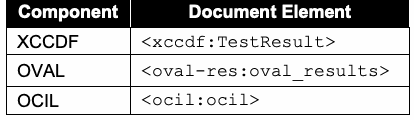
| コンポーネント | 文書要素 |
| XCCDF | <xccdf:TestResult> |
| OVAL | <oval-res:oval_results> |
| OCIL | <ocil:ocil> |
Each SCAP result data stream component SHOULD NOT use any deprecated constructs in its associated specification. Validation of each component SHALL be done in accordance with the portions of this document that define requirements for the component. See Section 3.1.2 for more information on the SCAP Content Validation Tool, which can help validate the correctness of SCAP result data streams.
各SCAP結果データストリームコンポーネントは、関連仕様で廃止された構文を使用するべきではない SHOULD NOT 。各コンポーネントの検証は、そのコンポーネントの要件を定義する本書の該当箇所に従って行わなければならない SHALL 。SCAP Content Validation ToolによるSCAP結果データストリームの正確性検証については3.1.2節を参照。
未レビュー訳4.4.2 The Target Identification
4.4.2 対象の識別
The target asset SHALL be represented in the ARF report using the <ai:assets> part of ARF. The <ai:asset> element populated about a target asset SHOULD include the fields specified in Table 20, where applicable. Table 20: Asset Identification Fields to Populate
対象資産は、ARF報告書のARF内<ai:assets>部分を用いて表さなければならない SHALL 。対象資産について情報を設定する<ai:asset>要素には、該当する場合、表20に示すフィールドを含めるべきである SHOULD 。表20：入力する資産識別フィールド
未レビュー訳| Field | Location within Asset Identification Computing Device |
| Ethernet media access control address | connections/connection/mac-address |
| Internet Protocol version 4 address | connections/connection/ip-address/ip-v4 |
| Internet Protocol version 6 address | connections/connection/ip-address/ip-v6 |
| Host name | hostname |
| Fully qualified domain name | fqdn |
原本PDFの抜粋画像
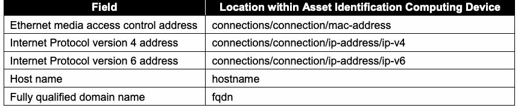
| フィールド | Asset Identification Computing Device内の位置 |
| Ethernetメディアアクセス制御アドレス | connections/connection/mac-address |
| Internet Protocolバージョン4アドレス | connections/connection/ip-address/ip-v4 |
| Internet Protocolバージョン6アドレス | connections/connection/ip-address/ip-v6 |
| ホスト名 | hostname |
| 完全修飾ドメイン名 | fqdn |
Additional identification information MAY be captured in the <ai:asset> element (asset tag, system GUID, etc.) The guidelines specified in [AI] SHALL be followed when populating the asset identification information. Currently, only the target asset of the SCAP evaluation is identified.
追加の識別情報（資産タグ、システムGUIDなど）を<ai:asset>要素に記録してもよい MAY 。[AI]に示された指針に従って資産識別情報を設定しなければならない SHALL 。現時点では、SCAP評価の対象資産のみが識別される。
未レビュー訳4.4.3 The Source Data Stream
4.4.3 ソースデータストリーム
未レビュー訳The source data stream collection that was used to generate the results against the target SHOULD be included in the ARF report as an <arf:report-request>. If the source data stream collection is included in the ARF report and an <xccdf:Tailoring> component was used during processing, the tailoring component SHALL be included as well. This is a stripped-down example:
対象に対する結果の生成に使用したソースデータストリームコレクションは、<arf:report-request>としてARF報告書に含めるべきである SHOULD 。ソースデータストリームコレクションがARF報告書に含まれ、処理中に<xccdf:Tailoring>コンポーネントが使用された場合、テーラリングコンポーネントも含めなければならない SHALL 。以下は簡略化した例である。
未レビュー訳<arf:asset-report-collection> <arf:report-requests>
<arf:asset-report-collection> <arf:report-requests>
未レビュー訳<arf:report-request id="request_0"> <arf:content>
<arf:report-request id="request_0"> <arf:content>
未レビュー訳<ds:data-stream-collection id="..." <!-- Source data stream collection which was tailored --> ... </ds:data-stream-collection> </arf:content>
<ds:data-stream-collection id="..." <!-- テーラリングされたソースデータストリームコレクション --> ... </ds:data-stream-collection> </arf:content>
未レビュー訳</arf:report-request>
</arf:report-request>
未レビュー訳<arf:report-request id="request_1"> <arf:content>
<arf:report-request id="request_1"> <arf:content>
未レビュー訳<ds:data-stream-collection id="..." <!-- Source data stream collection with an <xccdf:Tailoring>
<ds:data-stream-collection id="..." <!-- 次を含むソースデータストリームコレクション: <xccdf:Tailoring>
未レビュー訳component -->
コンポーネント -->
未レビュー訳... </ds:data-stream-collection>
... </ds:data-stream-collection>
未レビュー訳</arf:content> </arf:report-request> </arf:report-requests> <arf:assets>...</arf:assets> <arf:reports>...</arf:reports>
</arf:content> </arf:report-request> </arf:report-requests> <arf:assets>...</arf:assets> <arf:reports>...</arf:reports>
未レビュー訳</arf:asset-report-collection>
</arf:asset-report-collection>
未レビュー訳4.4.4 The Relationships
4.4.4 関係
未レビュー訳Table 21 outlines the relationships that SHALL be specified in the ARF report if the stated condition is satisfied. Table 21: ARF Relationships
表21は、記載された条件が満たされた場合にARF報告書で指定しなければならない SHALL 関係を示す。表21：ARFの関係
未レビュー訳| Relationship | Condition | Cardinality | Definition | Subject | Object |
| arf-rel:isAbout | None | One for each component report | Each report is reporting about the asset | Component report | Target asset |
| scap-rel:checkContext | Benchmark report exists | One for each check component report (OVAL or OCIL) | Each check report is reporting in the context of the benchmark report | Check component report | Benchmark component report |
| scap-rel:fromSource | Report request exists | One for each component report | Each component report was generated from the SCAP source content | Component report | Report request |
| scap-rel:associatedWith | OVAL variables report is provided | One for each OVAL variables component report | Each OVAL variables report is associated with an OVAL result | Component report of OVAL variables | Component report of OVAL results |
原本PDFの抜粋画像
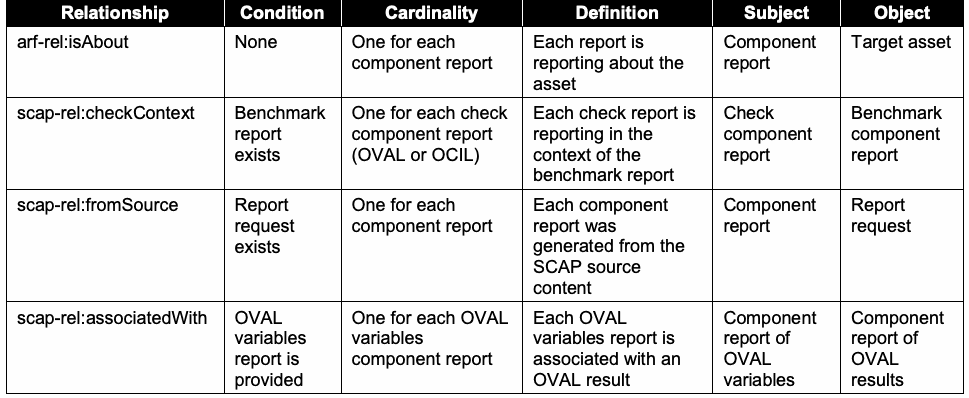
| 関係 | 条件 | 多重度 | 定義 | 主語 | 目的語 |
| arf-rel:isAbout | なし | コンポーネント報告書ごとに1つ | 各報告書は資産について報告する | コンポーネント報告書 | 対象資産 |
| scap-rel:checkContext | ベンチマーク報告書が存在する | 各チェックコンポーネント報告書（OVALまたはOCIL）ごとに1つ | 各チェック報告書はベンチマーク報告書のコンテキストで報告する | チェックコンポーネント報告書 | ベンチマークコンポーネント報告書 |
| scap-rel:fromSource | 報告要求が存在する | コンポーネント報告書ごとに1つ | 各コンポーネント報告書はSCAPソースコンテンツから生成された | コンポーネント報告書 | 報告要求 |
| scap-rel:associatedWith | OVAL変数報告書が提供される | OVAL変数コンポーネント報告書ごとに1つ | 各OVAL変数報告書はOVAL結果に関連付けられる | OVAL変数のコンポーネント報告書 | OVAL結果のコンポーネント報告書 |
Figure 3 gives an example of how the resulting ARF report would look. arf-report
図3に、生成されるARF報告書の例を示す。arf-report
未レビュー訳Legend
凡例
未レビュー訳xccdf-result1
xccdf-result1
未レビュー訳target-asset
target-asset
未レビュー訳arf-rel:isAbout
arf-rel:isAbout
未レビュー訳scap-rel:fromSource
scap-rel:fromSource
未レビュー訳oval-result1
oval-result1
未レビュー訳scap-rel:checkContent
scap-rel:checkContent
未レビュー訳asset
asset
未レビュー訳oval-result2
oval-result2
未レビュー訳report
report
未レビュー訳scap-datastream
scap-datastream
未レビュー訳ocil-result1
ocil-result1
未レビュー訳report-request
report-request
未レビュー訳Figure 3: Sample ARF Report Structure
図3：ARF報告書構造の例
未レビュー訳4.5 XCCDF Results
4.5 XCCDFの結果
未レビュー訳The following requirements and recommendations pertain to content consumers generating XCCDF result data stream components. Each XCCDF result data stream component SHALL comply with the XCCDF Results schema. XCCDF test results SHALL be documented as the contents of an <xccdf:TestResult> element. To be considered valid SCAP result content, the <xccdf:TestResult> element SHALL meet the following conditions:
以下の要件および推奨事項は、XCCDF結果データストリームコンポーネントを生成するコンテンツ利用者に適用される。各XCCDF結果データストリームコンポーネントは、XCCDF Resultsスキーマに準拠しなければならない SHALL 。XCCDFテスト結果は<xccdf:TestResult>要素の内容として記録しなければならない SHALL 。有効なSCAP結果コンテンツとみなされるには、<xccdf:TestResult>要素が次の条件を満たさなければならない SHALL 。
未レビュー訳1.The @start-time and @end-time attributes SHALL be provided to indicate when the scan started and completed, respectively.
1.スキャンの開始時刻と完了時刻をそれぞれ示すため、@start-time属性および@end-time属性を指定しなければならない SHALL 。
未レビュー訳2.The @test-system attribute SHALL be provided, and it SHALL be a CPE name value indicating the product that was responsible for generating the results.
2.@test-system属性を指定しなければならず SHALL 、その値は結果生成を担当した製品を示すCPE名でなければならない SHALL 。
未レビュー訳3.When the <xccdf:TestResult> is the root XCCDF element, then it will include an <xccdf:benchmark> element [XCCDF:6.6.2].
3.<xccdf:TestResult>がルートXCCDF要素である場合、<xccdf:benchmark>要素を含む（[XCCDF:6.6.2]）。
未レビュー訳a. The <xccdf:benchmark> element SHALL have an @id attribute specified. The @id attribute SHALL match the value of the <xccdf:Benchmark> element's @id attribute that was processed. b. The <xccdf:benchmark> element SHALL have an @href attribute specified. The @href attribute SHALL hold the URI referencing the XCCDF component (either local to the data stream collection or remote) that was processed. The URI SHALL be in the form specified for the @href attribute in Table 8.
a. <xccdf:benchmark>要素には@id属性を指定しなければならない SHALL 。@id属性は、処理対象となった<xccdf:Benchmark>要素の@id属性の値と一致しなければならない SHALL 。b. <xccdf:benchmark>要素には@href属性を指定しなければならない SHALL 。@href属性には、処理対象となったXCCDFコンポーネント（データストリームコレクション内またはリモート）を参照するURIを格納しなければならない SHALL 。URIは表8で@href属性について規定された形式でなければならない SHALL 。
未レビュー訳4.If a child profile of an <xccdf:Tailoring> element was applied during processing, then the <xccdf:tailoring-file> element SHALL be present and SHALL provide the following information about the <xccdf:Tailoring> element: @href, @id, @version, and @time. The @href attribute SHALL hold the URI to the XCCDF Tailoring component and SHALL comply with the format described above (item 3).
4.処理中に<xccdf:Tailoring>要素の子プロファイルが適用された場合、<xccdf:tailoring-file>要素を含めなければならず SHALL 、<xccdf:Tailoring>要素に関する次の情報を示さなければならない SHALL ：@href、@id、@version、@time。@href属性にはXCCDF TailoringコンポーネントへのURIを格納しなければならず SHALL 、前述の形式（項目3）に準拠しなければならない SHALL 。
未レビュー訳5.The <xccdf:Profile> element SHALL be included if a profile was applied during processing. This is also applicable to selected profiles part of <xccdf:Tailoring>.
5.処理中にプロファイルが適用された場合、<xccdf:Profile>要素を含めなければならない SHALL 。これは<xccdf:Tailoring>の一部として選択されたプロファイルにも適用される。
未レビュー訳6.Regarding the definition and use of <xccdf:Profile> elements, reported <xccdf:set-value> elements SHALL include all those values that are exported by the reported rules. The specific settings are those determined by the reported <xccdf:Profile>.
6.<xccdf:Profile>要素の定義と使用に関して、報告された規則によってエクスポートされるすべての値を、報告される<xccdf:set-value>要素に含めなければならない SHALL 。具体的な設定値は、報告された<xccdf:Profile>によって決定される。
未レビュー訳7.The <xccdf:identity> element SHALL identify the security principal used to access rule evaluation on the target(s). This will include the identity name or username used to perform the evaluation.
7.<xccdf:identity>要素は、対象上で規則評価にアクセスするために使用したセキュリティ主体を識別しなければならない SHALL 。これには評価の実行に用いた識別名またはユーザー名が含まれる。
8.Each IP address(es) associated with the <xccdf:target> SHALL be enumerated using the <xccdf:target-address> element.
8.<xccdf:target>に関連付けられた各IPアドレスを、<xccdf:target-address>要素を使用して列挙しなければならない SHALL 。
未レビュー訳9.An <xccdf:target-id-ref> SHALL be specified with a @system attribute of “http://scap.nist.gov/schema/asset-identification/1.1”, an @href attribute value of “”, and a @name attribute value of the ID of the <ai:asset> element in the ARF that this <xccdf:TestResult> is about.
9.@system属性の値が“http://scap.nist.gov/schema/asset-identification/1.1”、@href属性の値が“”、@name属性の値が、この<xccdf:TestResult>の対象であるARF内の<ai:asset>要素のIDとなる<xccdf:target-id-ref>を指定しなければならない SHALL 。
10.The <xccdf:rule-result> elements report the result of the application of each selected rule [XCCDF:6.6.2]. The , , and attributes of the @role @severity @weight element SHALL be provided to indicate their values used during <xccdf:rule-result> assessment. The <xccdf:check/xccdf:check-content-ref> element SHALL record the reference to the checking system specific result component report ID and check name within the result file using the @href and @name attributes, respectively. The @href attribute SHALL contain “#” + the @id of the <arf:report> containing the check result. This approach provides traceability between XCCDF and check results. Note that if @multi-check is not set to “true” and the <xccdf:rule-result> represents a group of checks, then the @name attribute SHALL be omitted. See the example below the next requirement.
10.<xccdf:rule-result>要素は、選択された各規則の適用結果を報告する（[XCCDF:6.6.2]）。要素の属性@role、@severity、@weightの値を、<xccdf:rule-result>評価で使用された値として示さなければならない SHALL 。<xccdf:check/xccdf:check-content-ref>要素は、結果ファイル内のチェックシステム固有の結果コンポーネント報告書IDおよびチェック名への参照を、それぞれ@href属性および@name属性で記録しなければならない SHALL 。@href属性には、チェック結果を含む<arf:report>の@idに“#”を前置した値を含めなければならない SHALL 。これによりXCCDFとチェック結果の追跡可能性が得られる。@multi-checkが“true”に設定されておらず、<xccdf:rule-result>が複数チェックのグループを表す場合、@name属性を省略しなければならない SHALL 。次の要件の後にある例を参照。
未レビュー訳11.Where applicable to the target system, each of the <xccdf:fact> elements in Table 22 SHALL be provided. Previous versions of SCAP required additional facts; these have been incorporated into the use of the Asset Identification specification, as discussed in Section 4.4.2.
11.対象システムに該当する場合、表22の各<xccdf:fact>要素を指定しなければならない SHALL 。SCAPの旧バージョンでは追加のfactが必要だったが、4.4.2節で説明するように、これらはAsset Identification仕様の使用に取り込まれている。
Table 22: XCCDF Fact Descriptions
表22：XCCDF factの説明
未レビュー訳| XCCDF Fact | Description of Use |
| urn:scap:fact:asset:identifier:ein | Equipment identification number or other inventory tag number |
| urn:scap:fact:asset:identifier:guid | Globally unique identifier for the asset, if assigned |
| urn:scap:fact:asset:environmental_information: owning_organization | Organization that tracks the asset on its inventory |
| urn:scap:fact:asset:environmental_information: current_region | Geographic region where the asset is located |
| urn:scap:fact:asset:environmental_information: administration_unit | Name of the organization that does system administration for the asset |
原本PDFの抜粋画像
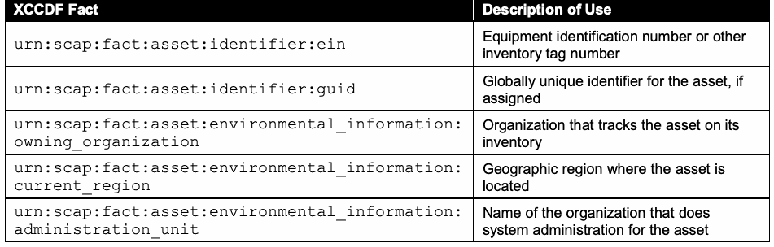
| XCCDF fact | 用途の説明 |
| urn:scap:fact:asset:identifier:ein | 機器識別番号またはその他のインベントリタグ番号 |
| urn:scap:fact:asset:identifier:guid | 割り当てられている場合、資産のグローバル一意識別子 |
| urn:scap:fact:asset:environmental_information: owning_organization | インベントリで資産を追跡する組織 |
| urn:scap:fact:asset:environmental_information: current_region | 資産が所在する地理的地域 |
| urn:scap:fact:asset:environmental_information: administration_unit | 資産のシステム管理を行う組織の名称 |
Here is a stripped-down example illustrating the above requirements:
以下に、上記要件を示す簡略化した例を示す。
<arf:asset-report-collection> <rc:relationships>...</rc:relationships> <arf:report-requests>...</arf:report-requests> <arf:assets>...</arf:assets> <arf:reports>
<arf:asset-report-collection> <rc:relationships>...</rc:relationships> <arf:report-requests>...</arf:report-requests> <arf:assets>...</arf:assets> <arf:reports>
未レビュー訳<arf:report id="scap_gov.nist_comp_r3005-xccdf_01"> <arf:content>
<arf:report id="scap_gov.nist_comp_r3005-xccdf_01"> <arf:content>
未レビュー訳<xccdf:TestResult start-time="2016-03-10T10:07:11" version="1-2.1.0.0"
<xccdf:TestResult start-time="2016-03-10T10:07:11" version="1-2.1.0.0"
未レビュー訳test-system="cpe:/a:vendor:product_name:version"
test-system="cpe:/a:vendor:product_name:version"
未レビュー訳end-time="2016-03-10T10:07:11" id="xccdf_gov.nist_testresult_..."> <xccdf:benchmark href="file:r3005-datastream-01.xml#scap_gov.nist_comp_r3005-xccdf_01" id="xccdf_gov.nist_benchmark_r3005_id_01"/>
end-time="2016-03-10T10:07:11" id="xccdf_gov.nist_testresult_..."> <xccdf:benchmark href="file:r3005-datastream-01.xml#scap_gov.nist_comp_r3005-xccdf_01" id="xccdf_gov.nist_benchmark_r3005_id_01"/>
未レビュー訳<xccdf:tailoring-file href="#scap_gov.nist_comp_r3005-xccdf_tailoring_03" id="xccdf_gov.nist_tailoring_r3005_03" time="2016-01-22T14:00:00"
<xccdf:tailoring-file href="#scap_gov.nist_comp_r3005-xccdf_tailoring_03" id="xccdf_gov.nist_tailoring_r3005_03" time="2016-01-22T14:00:00"
未レビュー訳version="1-2.1.0.0"/>
version="1-2.1.0.0"/>
未レビュー訳<xccdf:organization>...</xccdf:organization> <xccdf:identity privileged="true"
<xccdf:organization>...</xccdf:organization> <xccdf:identity privileged="true"
未レビュー訳authenticated="true">...</xccdf:identity>
authenticated="true">...</xccdf:identity>
未レビュー訳<xccdf:profile idref="xccdf_gov.nist.validation_profile_r3005_tailoring_03"/> <xccdf:target>...</xccdf:target> <xccdf:target-address>...</xccdf:target-address> <xccdf:target-facts>...</xccdf:target-facts> <xccdf:target-id-ref system="http://scap.nist.gov/schema/asset-
<xccdf:profile idref="xccdf_gov.nist.validation_profile_r3005_tailoring_03"/> <xccdf:target>...</xccdf:target> <xccdf:target-address>...</xccdf:target-address> <xccdf:target-facts>...</xccdf:target-facts> <xccdf:target-id-ref system="http://scap.nist.gov/schema/asset-
未レビュー訳identification/1.1" href="" name="..."/>
identification/1.1" href="" name="..."/>
未レビュー訳<xccdf:set-value
<xccdf:set-value
未レビュー訳idref="xccdf_gov.nist_value_validation.r3005_for_rule_6">test0</xccdf:set-value>
idref="xccdf_gov.nist_value_validation.r3005_for_rule_6">test0</xccdf:set-value>
未レビュー訳... <xccdf:rule-result time="2016-03-10T10:07:11" idref="xccdf_gov.nist_rule_validation.r3005_rule_1" weight="10" severity="medium"
... <xccdf:rule-result time="2016-03-10T10:07:11" idref="xccdf_gov.nist_rule_validation.r3005_rule_1" weight="10" severity="medium"
未レビュー訳role="full">
role="full">
未レビュー訳<xccdf:result>pass</xccdf:result> <xccdf:check system="http://oval.mitre.org/XMLSchema/oval-
<xccdf:result>pass</xccdf:result> <xccdf:check system="http://oval.mitre.org/XMLSchema/oval-
未レビュー訳definitions-5" selector="sel1">
definitions-5" selector="sel1">
未レビュー訳<xccdf:check-content-ref href="#scap_gov.nist_comp_r3005-
<xccdf:check-content-ref href="#scap_gov.nist_comp_r3005-
未レビュー訳oval" name="oval:nist.validation.r3005:def:2"/>
oval" name="oval:nist.validation.r3005:def:2"/>
未レビュー訳</xccdf:check> </xccdf:rule-result>
</xccdf:check> </xccdf:rule-result>
未レビュー訳</xccdf:TestResult>
</xccdf:TestResult>
未レビュー訳</arf:content> </arf:report> <arf:report id="scap_gov.nist_comp_r3005-oval"> <arf:content> <arf:oval-res:oval_results>...</oval-res:oval_results> </arf:content> </arf:report> ...
</arf:content> </arf:report> <arf:report id="scap_gov.nist_comp_r3005-oval"> <arf:content> <arf:oval-res:oval_results>...</oval-res:oval_results> </arf:content> </arf:report> ...
未レビュー訳</arf:reports> </arf:asset-report-collection>
</arf:reports> </arf:asset-report-collection>
未レビュー訳4.5.1 Assigning Identifiers to Rule Results
4.5.1 規則結果への識別子の割り当て
未レビュー訳The <xccdf:rule-result> element provides data indicating the result of assessing a system using the identified <xccdf:Rule> element. If the target <xccdf:Rule> identified by the < rule-result> element’s @idref attribute has one or more <xccdf:ident> elements xccdf: with a @system attribute value listed in Section 3.2.4.1, then each <xccdf:ident> element SHALL also appear within the <xccdf:rule-result> element.
<xccdf:rule-result>要素は、特定された<xccdf:Rule>要素を用いたシステム評価の結果を示すデータを提供する。< rule-result>要素の@idref属性で特定される対象の<xccdf:Rule>に、3.2.4.1節に列挙された@system属性値を持つ<xccdf:ident>要素が1つ以上含まれる場合、各<xccdf:ident>要素も<xccdf:rule-result>要素内に含めなければならない SHALL 。
未レビュー訳Here is an example for a CVE entry:
CVEエントリの例を示す。
未レビュー訳java-upgrade-278
java-upgrade-278
未レビュー訳<xccdf:rule-result idref="
<xccdf:rule-result idref="
未レビュー訳" weight="10.0">
" weight="10.0">
未レビュー訳<xccdf:result>pass</xccdf:result> …
<xccdf:result>pass</xccdf:result> …
未レビュー訳http://cve.mitre.org
http://cve.mitre.org
未レビュー訳<xccdf:ident system="
<xccdf:ident system="
未レビュー訳">CVE-2006-0614</xccdf:ident>
">CVE-2006-0614</xccdf:ident>
未レビュー訳… </xccdf:rule-result>
… </xccdf:rule-result>
未レビュー訳If the <xccdf:ident> element is included, for tracking purposes it is important that produced XCCDF results have specific meanings. If an <xccdf:ident> element is present and it identifies a CVE, CCE, or CPE entry, then an <xccdf:rule-result> of “pass” SHALL indicate that the check content evaluated within the rule complied with one of the following:
<xccdf:ident>要素が含まれる場合、追跡のため、生成されるXCCDF結果が特定の意味を持つことが重要である。<xccdf:ident>要素が存在し、CVE、CCE、またはCPEエントリを識別する場合、“pass”の<xccdf:rule-result>は、規則内で評価されたチェックコンテンツが次のいずれかに該当することを示さなければならない SHALL ：
•For a CVE entry, the target platform satisfies all the conditions of the XCCDF rule and is unaffected by the vulnerability or exposure referenced by the CVE.
•CVEエントリの場合、対象プラットフォームはXCCDF規則のすべての条件を満たし、CVEが参照する脆弱性または露出の影響を受けない。
•For a CCE entry, the target platform complies with the configuration setting guidance expressed in the XCCDF rule.
•CCEエントリの場合、対象プラットフォームはXCCDF規則に示された構成設定のガイダンスに準拠する。
•For a CPE entry, the target platform was identified on the system.
•CPEエントリの場合、対象プラットフォームがシステム上で識別された。
It is important that these interpretations of <xccdf:ident> elements be preserved. For example, consider two policy recommendations. One is that a particular piece of software be installed, and the second that another piece of software not be installed. Both rules for these policy recommendations could use the same CPE entry in their <xccdf:ident> elements. However, because the interpretation of a CPE entry is that a “pass” result indicates software was installed, the second policy recommendation’s rule would violate this. This can be corrected by using the @con:negate attribute, a Boolean attribute that inverts the rule result. The second rule could check for the software being installed and then negate that result, thus giving a result consistent in meaning with the first rule. For rules that cannot have their interpretations preserved through the use of the @con:negate attribute, an alternative is to have a CCE entry corresponding to the recommendation. Rules that do not use <xccdf:ident> elements have no such restrictions.
<xccdf:ident>要素に関するこれらの解釈を維持することが重要である。たとえば、2つのポリシー推奨事項を考える。一方は特定のソフトウェアをインストールする推奨事項、もう一方は別のソフトウェアをインストールしない推奨事項である。どちらの規則も<xccdf:ident>要素で同じCPEエントリを使用できる。しかし、CPEエントリは“pass”結果がソフトウェアのインストール済みを示すという解釈であるため、2つ目のポリシー推奨事項の規則はこの意味に反する。これは、規則結果を反転させるブール属性である@con:negate属性を使用して修正できる。2つ目の規則でソフトウェアのインストールを確認した後、その結果を否定すれば、最初の規則と意味が一致する結果になる。@con:negate属性を使っても解釈を維持できない規則では、その推奨事項に対応するCCEエントリを使用する方法がある。<xccdf:ident>要素を使用しない規則には、このような制約はない。
4.5.2 Mapping OVAL Results to XCCDF Results
4.5.2 OVAL結果からXCCDF結果へのマッピング
When evaluating an <xccdf:Rule> element that references an OVAL Definition, the <xccdf:rule-result> element SHALL be used to capture the result of this evaluation. This result SHALL be determined by evaluating the referenced OVAL Definition on a target host. The result value of an individual <xccdf:check> SHALL be mapped from the OVAL Definition result produced during evaluation. The corresponding <xccdf:rule-result/xccdf:result> value is then computed based on the result values of all relevant <xccdf:check> elements. (Normally only a single <xccdf:check> element is needed, but where an <xccdf:complex-check> element is used, there may be multiple results that must be combined, as outlined in the XCCDF specification.) While the OVAL specification permits limiting result status reporting, SCAP-conformant content SHALL include full status reporting, including Error, Unknown, Not Applicable, Not Evaluated, True, and False. Content consumers SHALL apply the mapping illustrated in Table 23 when deriving <xccdf:check> results from OVAL Definition processing. The corresponding result value SHALL be recorded based on the @class attribute of the OVAL Definition and the @negate attribute of the <xccdf:check> element where applicable.
OVAL定義を参照する<xccdf:Rule>要素を評価する場合、この評価結果を記録するために<xccdf:rule-result>要素を使用しなければならない SHALL 。この結果は、対象ホスト上で参照されたOVAL定義を評価して決定しなければならない SHALL 。個々の<xccdf:check>の結果値は、評価時に生成されたOVAL定義の結果から対応付けなければならない SHALL 。次に、関連するすべての<xccdf:check>要素の結果値に基づき、対応する<xccdf:rule-result/xccdf:result>値を算出する。（通常は<xccdf:check>要素を1つだけ使用するが、<xccdf:complex-check>要素を使用する場合は、XCCDF仕様に示すように複数の結果を組み合わせる必要がある。）OVAL仕様では結果ステータスの報告を制限できるが、SCAP準拠コンテンツは、Error、Unknown、Not Applicable、Not Evaluated、True、Falseを含む完全なステータス報告を含めなければならない SHALL 。コンテンツ利用者は、OVAL定義の処理結果から<xccdf:check>結果を導出する際に、表23に示すマッピングを適用しなければならない SHALL 。該当する場合、対応する結果値はOVAL定義の@class属性および<xccdf:check>要素の@negate属性に基づいて記録しなければならない SHALL 。
未レビュー訳Table 23: Deriving XCCDF Check Results from OVAL Definition Results
表23：OVAL定義結果からXCCDFチェック結果を導出する
未レビュー訳原本PDFの抜粋画像
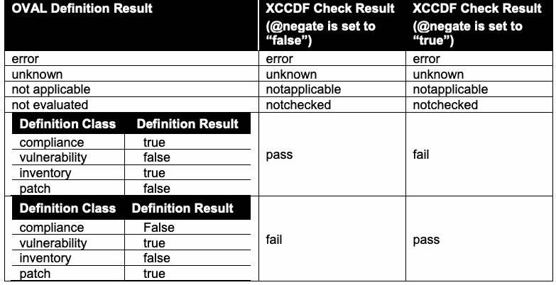
The mappings in Table 23 are specific to each OVAL Definition class. For example, if an OVAL compliance class definition is processed and OVAL returns a result of “true”, the content consumer is conveying the fact that the system was found to be compliant with that check and therefore returns a “pass” result for that check. A similar definition for a vulnerable condition will return results of “false” if that vulnerability was not found on the examined devices, resulting in a “pass” from the XCCDF check. Negations of check results or their combination in complex-checks may result in additional modification before the final corresponding <xccdf:rule-result/xccdf:result> value is known.
表23のマッピングはOVAL定義の各クラスに固有である。たとえば、OVAL complianceクラス定義を処理し、OVALが“true”を返した場合、コンテンツ利用者はシステムがそのチェックに準拠していると判定されたことを伝え、そのチェックに対して“pass”結果を返す。同様に、脆弱な状態を定義する場合、検査対象の機器で脆弱性が見つからなければ“false”の結果となり、XCCDFチェックから“pass”が返される。チェック結果の否定や、complex-check内での結果の組み合わせにより、最終的な対応<xccdf:rule-result/xccdf:result>値が確定する前に、さらに変更が加わる場合がある。
未レビュー訳If the <xccdf:Rule> element under evaluation has an <xccdf:check-content-ref> element with the @name attribute omitted and an <xccdf:check> element with its @multi-check attribute set to “true”, then the result of each evaluated OVAL Definition SHALL be recorded as a separate <xccdf:rule-result> element. In this case the <xccdf:rule-result>/<xccdf:check-content-ref> element SHALL identify the specific check result of each evaluated OVAL Definition using the @href and @name attributes as described in Section 4.5, item 8.
評価対象の<xccdf:Rule>要素に、@name属性が省略された<xccdf:check-content-ref>要素と、@multi-check属性が“true”に設定された<xccdf:check>要素がある場合、評価された各OVAL定義の結果を個別の<xccdf:rule-result>要素として記録しなければならない SHALL 。この場合、<xccdf:rule-result>/<xccdf:check-content-ref>要素は、4.5節の項目8に記載のとおり、@href属性および@name属性を使用して、評価された各OVAL定義の個別のチェック結果を特定しなければならない SHALL 。
未レビュー訳According to [XCCDF:Table 9;Table 35;Table 39], if the <xccdf:Rule> element under evaluation is selected and its @role attribute is set to ”unchecked”, then the rule result SHALL be set to “notchecked”. If the <xccdf:Rule> element under evaluation is selected and its @role attribute is set to “unscored”, then the rule result SHALL be set to “informational”.
[XCCDF:Table 9;Table 35;Table 39]によると、評価対象の<xccdf:Rule>要素が選択され、その@role属性が”unchecked”に設定されている場合、規則結果は“notchecked”に設定しなければならない SHALL 。評価対象の<xccdf:Rule>要素が選択され、その@role属性が”unscored”に設定されている場合、規則結果は“informational”に設定しなければならない SHALL 。
4.6 OVAL Results
4.6 OVAL結果
The following requirements and recommendations pertain to content consumers generating OVAL result data stream components. See the annex for additional requirements and recommendations. Each OVAL result data stream component SHALL validate against at least one version of the OVAL Results schema that corresponds to an OVAL component specification version specified in Section 2 of the annex, regardless of the version of the OVAL Definitions document that was evaluated. An SCAP OVAL result data stream component SHALL include the results of every OVAL Definition used to generate the reported results. In order to be SCAP conformant, an SCAP content consumer SHALL be able to produce all the types of OVAL Results output described below. The specific result output SHALL be configurable within the SCAP content consumer.
以下の要件および推奨事項は、OVAL結果データストリームコンポーネントを生成するコンテンツ利用者に適用される。追加の要件および推奨事項については付属書を参照。各OVAL結果データストリームコンポーネントは、評価されたOVAL Definitions文書のバージョンにかかわらず、付属書2節に指定されたOVALコンポーネント仕様バージョンに対応する少なくとも1つのOVAL Resultsスキーマに対して検証できなければならない SHALL 。SCAP OVAL結果データストリームコンポーネントは、報告結果の生成に使用されたすべてのOVAL定義の結果を含めなければならない SHALL 。SCAP準拠とするには、SCAPコンテンツ利用者は以下に示すすべての種類のOVAL Results出力を生成できなければならない SHALL 。具体的な結果出力は、SCAPコンテンツ利用者内で設定可能でなければならない SHALL 。
未レビュー訳In order to support SCAP instances where OVAL thin content (only the ID of the definition and the results) is preferred, SCAP content consumers SHALL support all valid values for the <oval-res:directives> controlling the expected content of the results file.
SCAP thin content（定義IDと結果のみ）が望ましい場合に対応するため、SCAPコンテンツ利用者は、結果ファイルに含める内容を制御する<oval-res:directives>の有効な値をすべてサポートしなければならない SHALL 。
未レビュー訳To support the ability for results to be consumed by the appropriate product(s), data results SHALL be expressed as Single Machine Without System Characteristics, Single Machine With System Characteristics, or Single Machine With Thin Results as follows:
適切な製品が結果を利用できるようにするため、データ結果は次のいずれかの形式で表さなければならない SHALL ：Single Machine Without System Characteristics、Single Machine With System Characteristics、またはSingle Machine With Thin Results。
未レビュー訳1.Single Machine Without System Characteristics – A single result file that includes the results of all OVAL Definitions evaluated and “full” results types as described in the <oval-res:ContentEnumeration> element, without system characteristics.
1.Single Machine Without System Characteristics — 評価されたすべてのOVAL定義の結果と、<oval-res:ContentEnumeration>要素に記載された“full”結果タイプを含み、システム特性を含まない単一の結果ファイル。
未レビュー訳For this format, the values for the <oval-res:directives> element SHALL be:
この形式では、<oval-res:directives>要素の値を次のとおりにしなければならない SHALL ：
未レビュー訳<oval-res:directives include_source_definitions="false"> <oval-res:definition_true content="full" reported="true"/> <oval-res:definition_false content="full" reported="true"/> <oval-res:definition_unknown content="full" reported="true"/> <oval-res:definition_error content="full" reported="true"/> <oval-res:definition_not_evaluated content="full" reported="true"/> <oval-res:definition_not_applicable content="full" reported="true"/> </oval-res:directives>
<oval-res:directives include_source_definitions="false"> <oval-res:definition_true content="full" reported="true"/> <oval-res:definition_false content="full" reported="true"/> <oval-res:definition_unknown content="full" reported="true"/> <oval-res:definition_error content="full" reported="true"/> <oval-res:definition_not_evaluated content="full" reported="true"/> <oval-res:definition_not_applicable content="full" reported="true"/> </oval-res:directives>
未レビュー訳When creating the OVAL System Characteristics as defined by the <oval-sc:oval_system_characteristics> element, the <oval-sc:collected_objects> and <oval-sc:system_data> elements SHALL NOT be provided.
<oval-sc:oval_system_characteristics>要素で定義されるOVALシステム特性を作成する際、<oval-sc:collected_objects>要素および<oval-sc:system_data>要素を含めてはならない SHALL NOT 。
未レビュー訳2.Single Machine With System Characteristics – A single result file that includes the results of all OVAL Definitions evaluated and “full” results types as described in the <oval-res:ContentEnumeration> element and the System Characteristics of the target evaluated.
2.Single Machine With System Characteristics — 評価されたすべてのOVAL定義の結果と、<oval-res:ContentEnumeration>要素に記載された“full”結果タイプ、および評価対象のシステム特性を含む単一の結果ファイル。
未レビュー訳For this format, the values for the <oval-res:directives> element SHALL be:
この形式では、<oval-res:directives>要素の値を次のとおりにしなければならない SHALL ：
未レビュー訳<oval-res:directives include_source_definitions="false"> <oval-res:definition_true content="full" reported="true"/> <oval-res:definition_false content="full" reported="true"/> <oval-res:definition_unknown content="full" reported="true"/> <oval-res:definition_error content="full" reported="true"/> <oval-res:definition_not_evaluated content="full" reported="true"/> <oval-res:definition_not_applicable content="full" reported="true"/> </oval-res:directives>
<oval-res:directives include_source_definitions="false"> <oval-res:definition_true content="full" reported="true"/> <oval-res:definition_false content="full" reported="true"/> <oval-res:definition_unknown content="full" reported="true"/> <oval-res:definition_error content="full" reported="true"/> <oval-res:definition_not_evaluated content="full" reported="true"/> <oval-res:definition_not_applicable content="full" reported="true"/> </oval-res:directives>
未レビュー訳When creating the OVAL System Characteristics as defined by the <oval-sc:oval_system_characteristics> element, the <oval-sc:collected_objects> and <oval-sc:system_data> elements SHALL be provided.
<oval-sc:oval_system_characteristics>要素で定義されるOVALシステム特性を作成する際、<oval-sc:collected_objects>要素および<oval-sc:system_data>要素を含めなければならない SHALL 。
未レビュー訳3.Single Machine With Thin Results – A single result file that includes the results of all OVAL Definitions evaluated and “thin” results types as described in the OVAL Results schema. A value of “thin” means only the minimal amount of information will be provided.
3.Single Machine With Thin Results — 評価されたすべてのOVAL定義の結果と、OVAL Resultsスキーマに記載された“thin”結果タイプを含む単一の結果ファイル。“thin”値は、最小限の情報のみが提供されることを意味する。
未レビュー訳For this format, the values for the <oval-res:directives> element SHALL be:
この形式では、<oval-res:directives>要素の値を次のとおりにしなければならない SHALL ：
未レビュー訳<oval-res:directives include_source_definitions="false"> <oval-res:definition_true content="thin" reported="true"/> <oval-res:definition_false content="thin" reported="true"/>
<oval-res:directives include_source_definitions="false"> <oval-res:definition_true content="thin" reported="true"/> <oval-res:definition_false content="thin" reported="true"/>
未レビュー訳<oval-res:definition_unknown content="thin" reported="true"/> <oval-res:definition_error content="thin" reported="true"/> <oval-res:definition_not_evaluated content="thin" reported="true"/> <oval-res:definition_not_applicable content="thin" reported="true"/> </oval-res:directives>
<oval-res:definition_unknown content="thin" reported="true"/> <oval-res:definition_error content="thin" reported="true"/> <oval-res:definition_not_evaluated content="thin" reported="true"/> <oval-res:definition_not_applicable content="thin" reported="true"/> </oval-res:directives>
未レビュー訳When specifying OVAL system characteristics, a reference SHOULD be made to the target asset in the ARF report collection. Specifically, the <oval-sc:oval_system_characteristics>/<oval-sc:system_info> SHOULD be populated with a <con:asset-identification> element. That element SHALL be populated with a single <arf:object-ref> element that points to the <ai:asset> element in the ARF report collection pertaining to the OVAL result. See [ARF] for details on populating the element.
OVALシステム特性を指定する際は、ARF報告書コレクション内の対象資産を参照すべきである SHOULD 。具体的には、<oval-sc:oval_system_characteristics>/<oval-sc:system_info>に<con:asset-identification>要素を設定すべきである SHOULD 。その要素には、OVAL結果に該当するARF報告書コレクション内の<ai:asset>要素を指す<arf:object-ref>要素を1つだけ設定しなければならない SHALL 。要素の設定方法の詳細は[ARF]を参照。
未レビュー訳<arf:object-ref>
<arf:object-ref>
未レビュー訳4.7 OCIL Results
4.7 OCILの結果
未レビュー訳The following requirements and recommendations pertain to content consumers generating OCIL result data stream components. An SCAP OCIL result data stream component SHALL include the results of every <ocil:questionnaire>, <ocil:question_test_action>, and <ocil:question> element used to generate the reported results.
以下の要件および推奨事項は、OCIL結果データストリームコンポーネントを生成するコンテンツ利用者に適用される。SCAP OCIL結果データストリームコンポーネントは、報告結果の生成に使用されたすべての<ocil:questionnaire>、<ocil:question_test_action>、および<ocil:question>要素の結果を含めなければならない SHALL 。
未レビュー訳4.8 Result Data Stream Signing
4.8 結果データストリームへの署名
未レビュー訳Digitally signing result data stream content is important to ensuring the integrity and trustworthiness of results. Leveraging [TMSAD] for SCAP can improve the legitimacy of results of SCAP content and create a more secure environment. As such, content consumers MAY digitally sign result content following the guidelines in [TMSAD], along with the following requirements. One XML digital signature MAY be included in an <arf:extended-info> element in the ARF report. The signature SHALL be represented as a <dsig:Signature> element and SHALL follow the W3C recommendation [DSIG]. The <dsig:Signature> element SHALL sign the ARF report collection root element. The <dsig:Signature> element SHALL follow the recommendations in [TMSAD] and these additional requirements:
結果データストリームコンテンツにデジタル署名することは、結果の完全性と信頼性を確保する上で重要である。SCAPに[TMSAD]を活用することで、SCAPコンテンツの結果の正当性を高め、より安全な環境を構築できる。そのため、コンテンツ利用者は[TMSAD]のガイドラインおよび以下の要件に従い、結果コンテンツにデジタル署名してもよい MAY 。ARF報告書内の<arf:extended-info>要素にXMLデジタル署名を1つ含めてもよい MAY 。署名は<dsig:Signature>要素として表さなければならない SHALL 。また、W3C勧告[DSIG]に従わなければならない SHALL 。<dsig:Signature>要素はARF報告書コレクションのルート要素に署名しなければならない SHALL 。<dsig:Signature>要素は[TMSAD]の推奨事項および次の追加要件に従わなければならない SHALL ：
未レビュー訳1.A <dsig:SignatureProperties> element SHALL be included in the <dsig:Signature> element. At least one <dsig:SignatureProperty> element SHALL be populated with <dt:signature-info> as specified in [TMSAD].
1.<dsig:SignatureProperties>要素を<dsig:Signature>要素内に含めなければならない SHALL 。少なくとも1つの<dsig:SignatureProperty>要素に、[TMSAD]で規定された<dt:signature-info>を設定しなければならない SHALL 。
未レビュー訳2.The first <dsig:Reference> element in a <dsig:Signature> element SHALL be to the <arf:asset-report-collection> element. The element SHALL be referenced in the @URI attribute using the empty string convention “”.
2.<dsig:Signature>要素内の最初の<dsig:Reference>要素は<arf:asset-report-collection>要素を参照しなければならない SHALL 。この要素は、空文字列規約“”を用いて@URI属性で参照しなければならない SHALL 。
未レビュー訳3.Two XPath Filter 2 transforms SHALL exist on the first <dsig:Reference> element in a <dsig:Signature> element. Both SHALL specify a filter type of “subtract”. The first transform SHALL specify the XPath “/arf:asset-report-collection/arf:extended-infos[count(arf:extended-info[dsig:Signature]) = count(*)]”. The second transform SHALL specify the XPath “/arf:asset-report-collection/arf:extended-infos/arf:extended-info[dsig:Signature]”. In both cases, the namespace prefix “arf” SHALL map to the ARF namespace specified in this document.
3.最初の<dsig:Reference>要素には、2つのXPath Filter 2変換を含めなければならない SHALL 。どちらもフィルター種別を“subtract”に指定しなければならない SHALL 。最初の変換ではXPath “/arf:asset-report-collection/arf:extended-infos[count(arf:extended-info[dsig:Signature]) = count(*)]”を指定しなければならない SHALL 。2つ目の変換ではXPath “/arf:asset-report-collection/arf:extended-infos/arf:extended-info[dsig:Signature]”を指定しなければならない SHALL 。どちらの場合も、名前空間接頭辞“arf”は本書で指定するARF名前空間に対応付けなければならない SHALL 。
未レビュー訳4.The second <dsig:Reference> element SHALL be to the <dsig:SignatureProperties> element captured in a <dsig:Object> element with the <dsig:Signature> element. The <dsig:SignatureProperties> element SHALL be referenced in the @URI attribute using “#” + @Id of the <dsig:SignatureProperties> element.
4.2つ目の<dsig:Reference>要素は、<dsig:Signature>要素とともに<dsig:Object>要素に格納された<dsig:SignatureProperties>要素を参照しなければならない SHALL 。<dsig:SignatureProperties>要素は、“#”とその<dsig:SignatureProperties>要素の@Idを連結した値を@URI属性に指定して参照しなければならない SHALL 。
未レビュー訳5.Key information SHOULD be provided on the <dsig:Signature> element.
5.キー情報は<dsig:Signature>要素に含めるべきである SHOULD 。
未レビュー訳In situations where it is desirable to countersign a result data stream (e.g., when a content consumer automatically signs a result data stream and then a person also wants to sign the results), the following requirements apply.
結果データストリームに副署することが望ましい場合（例：コンテンツ利用者が結果データストリームに自動署名した後、担当者も結果に署名する場合）には、次の要件が適用される。
未レビュー訳1.The <arf:extended-info> element containing the original signature SHALL be removed from the resulting document.
1.元の署名を含む<arf:extended-info>要素を、生成される文書から削除しなければならない SHALL 。
未レビュー訳2.The original signature SHALL be captured as a <dsig:Object> element on the new <dsig:Signature> element.
2.元の署名を、新しい<dsig:Signature>要素の<dsig:Object>要素として格納しなければならない SHALL 。
未レビュー訳3.The first <dsig:Reference> element on the new <dsig:Signature> element SHALL reference the <dsig:Object> element containing the original signature. The <dsig:Object> element SHALL be referenced in the @URI attribute using “#” + @Id of the <dsig:Object> element.
3.新しい<dsig:Signature>要素の最初の<dsig:Reference>要素は、元の署名を含む<dsig:Object>要素を参照しなければならない SHALL 。<dsig:Object>要素は、“#”とその<dsig:Object>要素の@Idを連結した値を@URI属性に指定して参照しなければならない SHALL 。
未レビュー訳4.The second <dsig:Reference> element SHALL be to the <dsig:SignatureProperties> element captured in a <dsig:Object> element with the <dsig:Signature> element. The <dsig:SignatureProperties> element SHALL be referenced in the @URI attribute using “#” + @Id of the <dsig:SignatureProperties> element.
4.2つ目の<dsig:Reference>要素は、<dsig:Signature>要素とともに<dsig:Object>要素に格納された<dsig:SignatureProperties>要素を参照しなければならない SHALL 。<dsig:SignatureProperties>要素は、“#”とその<dsig:SignatureProperties>要素の@Idを連結した値を@URI属性に指定して参照しなければならない SHALL 。
未レビュー訳5.A <dsig:SignatureProperties> element SHALL be included in the <dsig:Signature> element. At least one <dsig:SignatureProperty> element SHALL be populated with <dt:signature-info> as specified in [TMSAD].
5.<dsig:SignatureProperties>要素を<dsig:Signature>要素内に含めなければならない SHALL 。少なくとも1つの<dsig:SignatureProperty>要素に、[TMSAD]で規定された<dt:signature-info>を設定しなければならない SHALL 。
未レビュー訳6.Key information SHOULD be provided on the <dsig:Signature> element in accordance with [TMSAD].
6.キー情報は[TMSAD]に従って<dsig:Signature>要素に含めるべきである SHOULD 。
未レビュー訳7.The new <dsig:Signature> element SHALL be placed in a new <arf:extended-info> element in the ARF report collection.
7.新しい<dsig:Signature>要素は、ARF報告書コレクション内の新しい<arf:extended-info>要素に配置しなければならない SHALL 。
未レビュー訳A signature that has countersigned another signature (also known as an enveloping signature) MAY be countersigned. When doing so, the requirements above SHALL apply to the new signature creation. When signing a result data stream, the source data stream collection SHOULD be captured in the ARF report being signed.
別の署名に副署した署名（エンベロープ署名とも呼ばれる）に対して、さらに副署してもよい MAY 。その場合、新しい署名の作成には上記の要件を適用しなければならない SHALL 。結果データストリームに署名する際は、署名対象のARF報告書にソースデータストリームコレクションを含めるべきである SHOULD 。
未レビュー訳5. Source Data Stream Content Requirements for Use Cases
5. ユースケースで使用するソースデータストリームコンテンツの要件
未レビュー訳This section discusses additional requirements for the following SCAP-conformant content use cases: compliance checking, vulnerability scanning, and inventory scanning. Note that as stated in Table 3 in Section 3.1, each data stream is required to have a @use-case attribute in its <ds:data-stream> element with a value corresponding either to one of the content types defined in this section or to “OTHER”, for data streams not corresponding to a defined use case. The required value for each content type is specified below in the appropriate subsection. Each use case is subject not only to the requirements presented in this section, but also to all applicable requirements in Sections 3 and 4.
本節では、SCAP準拠コンテンツの次のユースケースに関する追加要件を説明する：コンプライアンスチェック、脆弱性スキャン、およびインベントリスキャン。3.1節の表3に記載のとおり、各データストリームの<ds:data-stream>要素には@use-case属性が必要であり、その値は本節で定義するコンテンツ種別のいずれか、または定義済みユースケースに該当しないデータストリームに対する“OTHER”でなければならない。各コンテンツ種別に必要な値は、以下の該当する小節に示す。各ユースケースには、本節の要件だけでなく、3節および4節の適用可能な要件もすべて適用される。
未レビュー訳5.1 Compliance Checking
5.1 コンプライアンスチェック
SCAP content can be used to compare system characteristics and settings against an SCAP-conformant checklist in an automated fashion. This can verify that operating systems and applications comply with security checklists and identify any deviations from those checklists. The SCAP source data stream component that SHALL be included for compliance checking is the XCCDF benchmark, which expresses the checklist. Each rule in the XCCDF benchmark SHALL reference one of the following:
SCAPコンテンツを用いて、システム特性および設定をSCAP準拠チェックリストと自動的に比較できる。これにより、オペレーティングシステムやアプリケーションがセキュリティチェックリストに準拠していることを検証し、逸脱を特定できる。コンプライアンスチェックに含めなければならない SHALL SCAPソースデータストリームコンポーネントは、チェックリストを表すXCCDFベンチマークである。XCCDFベンチマークの各規則は、次のいずれかを参照しなければならない SHALL ：
未レビュー訳•An OVAL compliance definition. This definition SHALL be contained in an OVAL component, which holds definitions of compliance checks used by the checklist. An XCCDF benchmark’s rules MAY reference one or more OVAL compliance class definitions in an OVAL component.
•OVAL compliance定義。この定義は、チェックリストで使用するコンプライアンスチェックの定義を格納するOVALコンポーネント内に含めなければならない SHALL 。XCCDFベンチマークの規則は、OVALコンポーネント内の1つ以上のOVAL complianceクラス定義を参照してもよい MAY 。
•An OCIL questionnaire. This questionnaire SHALL be contained in an OCIL component, which holds questionnaires that collect information that OVAL is not being used to collect, such as posing questions to users or harvesting configuration information from an existing database. An XCCDF benchmark’s rules MAY reference one or more OCIL questionnaires in an OCIL component.
•OCIL質問票。この質問票は、ユーザーへの質問や既存データベースからの構成情報の取得など、OVALでは収集しない情報を収集する質問票を格納するOCILコンポーネント内に含めなければならない SHALL 。XCCDFベンチマークの規則は、OCILコンポーネント内の1つ以上のOCIL質問票を参照してもよい MAY 。
•An OVAL patch definition. This definition SHALL be contained in an OVAL component, which holds definitions for patch compliance checks. These checks may be needed if an organization includes patch verification in its compliance activities. An XCCDF benchmark MAY reference an OVAL patch definition through a patches up-to-date rule in a manner consistent with Section 3.2.4.3.
•OVALパッチ定義。この定義は、パッチコンプライアンスチェックの定義を格納するOVALコンポーネント内に含めなければならない SHALL 。組織がコンプライアンス活動にパッチ検証を含める場合、これらのチェックが必要になることがある。XCCDFベンチマークは、3.2.4.3節と整合する方法で、patches up-to-date規則を通じてOVALパッチ定義を参照してもよい MAY 。
未レビュー訳Each XCCDF benchmark SHALL have at least one rule that references either an OVAL compliance class definition in an OVAL component or an OCIL questionnaire in an OCIL component. All OVAL components and OCIL components referenced by the XCCDF benchmark SHALL be included in the SCAP source data stream. If the XCCDF benchmark component references any CPE names, then the SCAP source data stream SHALL include a CPE component, which specifies the products or platforms of interest, and SHALL include one or more OVAL inventory class definitions in an OVAL component that contain the technical procedures for determining whether or not a specific target asset has a product or platform of interest. The @use-case attribute in the <ds:data-stream> element SHALL be set to “CONFIGURATION”.
各XCCDFベンチマークには、OVALコンポーネント内のOVAL complianceクラス定義またはOCILコンポーネント内のOCIL質問票のいずれかを参照する規則を少なくとも1つ含めなければならない SHALL 。XCCDFベンチマークが参照するすべてのOVALコンポーネントおよびOCILコンポーネントを、SCAPソースデータストリームに含めなければならない SHALL 。XCCDFベンチマークコンポーネントがCPE名を参照する場合、SCAPソースデータストリームには、対象製品またはプラットフォームを指定するCPEコンポーネントを含めなければならず SHALL 、特定の対象資産に対象製品またはプラットフォームが存在するかを判定する技術的手順を含む、1つ以上のOVAL inventoryクラス定義をOVALコンポーネント内に含めなければならない SHALL 。<ds:data-stream>要素の@use-case属性を“CONFIGURATION”に設定しなければならない SHALL 。
未レビュー訳5.2 Vulnerability Scanning
5.2 脆弱性スキャン
SCAP content can be used to scan operating systems and applications to look for known software flaws that introduce security exposures. The content enables consistent detection and reporting of these flaws.
SCAPコンテンツを用いて、セキュリティ上の危険をもたらす既知のソフトウェア欠陥を探すため、オペレーティングシステムやアプリケーションをスキャンできる。このコンテンツにより、これらの欠陥を一貫して検出し、報告できる。
未レビュー訳The SCAP source data stream component that SHALL be included for vulnerability scanning is the XCCDF benchmark, which expresses the checklist of the flaws to be checked for. Each rule in the XCCDF benchmark SHALL reference one of the following:
脆弱性スキャンに含めなければならない SHALL SCAPソースデータストリームコンポーネントは、確認対象の欠陥のチェックリストを表すXCCDFベンチマークである。XCCDFベンチマークの各規則は、次のいずれかを参照しなければならない SHALL ：
•An OVAL vulnerability definition. This definition SHALL be contained in an OVAL component, which holds definitions of vulnerability checks used by the checklist. An XCCDF benchmark’s rules MAY reference one or more OVAL vulnerability class definitions in an OVAL component.
•OVAL vulnerability定義。この定義は、チェックリストで使用する脆弱性チェックの定義を格納するOVALコンポーネント内に含めなければならない SHALL 。XCCDFベンチマークの規則は、OVALコンポーネント内の1つ以上のOVAL vulnerabilityクラス定義を参照してもよい MAY 。
•An OCIL questionnaire. This questionnaire SHALL be contained in an OCIL component, which holds questionnaires that collect information that OVAL is not being used to collect. An example of OCIL use is to give step-by-step directions for manually examining a system for a vulnerability that cannot be detected with OVAL. In such a case, OCIL is used for capturing information collected using manual examination. An XCCDF benchmark’s rules MAY reference one or more OCIL questionnaires in an OCIL component.
•OCIL質問票。この質問票は、OVALでは収集しない情報を収集する質問票を格納するOCILコンポーネント内に含めなければならない SHALL 。OCILの使用例として、OVALでは検出できない脆弱性についてシステムを手動で調べるための手順を順番に示す方法がある。この場合、OCILは手動検査で収集した情報を記録するために使用する。XCCDFベンチマークの規則は、OCILコンポーネント内の1つ以上のOCIL質問票を参照してもよい MAY 。
•An OVAL patch definition. This definition SHALL be contained in an OVAL component, which holds definitions for patch compliance checks. These checks may be needed if an organization includes patch verification in its vulnerability scanning activities. An XCCDF benchmark MAY reference an OVAL patch definition through a patches up-to-date rule in a manner consistent with Section 3.2.4.3.
•OVALパッチ定義。この定義は、パッチコンプライアンスチェックの定義を格納するOVALコンポーネント内に含めなければならない SHALL 。組織が脆弱性スキャン活動にパッチ検証を含める場合、これらのチェックが必要になることがある。XCCDFベンチマークは、3.2.4.3節と整合する方法で、patches up-to-date規則を通じてOVALパッチ定義を参照してもよい MAY 。
Each XCCDF benchmark SHALL have at least one rule that references either an OVAL vulnerability class definition in an OVAL component or an OCIL questionnaire in an OCIL component. All OVAL components and OCIL components referenced by the XCCDF benchmark SHALL be included in the SCAP source data stream. If the XCCDF benchmark component references any CPE names, then the SCAP source data stream SHALL include a CPE component, which specifies the products or platforms of interest, and SHALL include one or more OVAL inventory class definitions in an OVAL component that contain the technical procedures for determining whether or not a specific target asset has a product or platform of interest. The @use-case attribute in the <ds:data-stream> element SHALL be set to “VULNERABILITY”.
各XCCDFベンチマークには、OVALコンポーネント内のOVAL vulnerabilityクラス定義またはOCILコンポーネント内のOCIL質問票のいずれかを参照する規則を少なくとも1つ含めなければならない SHALL 。XCCDFベンチマークが参照するすべてのOVALコンポーネントおよびOCILコンポーネントを、SCAPソースデータストリームに含めなければならない SHALL 。XCCDFベンチマークコンポーネントがCPE名を参照する場合、SCAPソースデータストリームには、対象製品またはプラットフォームを指定するCPEコンポーネントを含めなければならず SHALL 、特定の対象資産に対象製品またはプラットフォームが存在するかを判定する技術的手順を含む、1つ以上のOVAL inventoryクラス定義をOVALコンポーネント内に含めなければならない SHALL 。<ds:data-stream>要素の@use-case属性を“VULNERABILITY”に設定しなければならない SHALL 。
未レビュー訳5.3 Inventory Scanning
5.3 インベントリスキャン
SCAP content can be used to collect information on the software installed on systems. One example of how this could be used is to verify that a group of systems all have required security software programs installed. This could help verify compliance with technical security control requirements. Another example is to collect software inventory data on devices that are not directly connected to the enterprise network, such as smart phones. Inventory scanning can also be applied to collect information on the presence of software artifacts on systems, such as malware or characteristics of malware that indicate its presence. SCAP content authored for this purpose can be used to detect classes or categories of malware based on system state that may be common across multiple malware instances. For example, it is a common practice to reuse malware code, making modifications to address available detection methods, change propagation characteristics, etc. It is also possible to author content that detects a specific instantiation of malware. For example, hashing of files can be used to identify a malicious executable or library.
SCAPコンテンツを用いて、システムにインストールされたソフトウェアに関する情報を収集できる。たとえば、複数のシステムすべてに必要なセキュリティソフトウェアがインストールされていることを検証できる。これは、技術的なセキュリティ管理策の要件への準拠確認に役立つ。別の例として、スマートフォンなど、企業ネットワークに直接接続されていないデバイス上のソフトウェアインベントリデータを収集できる。インベントリスキャンは、マルウェアやその存在を示す特性など、システム上のソフトウェア成果物の存在に関する情報収集にも適用できる。この目的で作成されたSCAPコンテンツを使用し、複数のマルウェアに共通する可能性のあるシステム状態に基づき、マルウェアのクラスまたはカテゴリを検出できる。たとえば、検出手法への対処や伝播特性の変更などを目的として変更を加えながら、マルウェアコードを再利用することは一般的である。特定のマルウェアの実体を検出するコンテンツを作成することもできる。たとえば、ファイルのハッシュ値を用いて悪意のある実行ファイルまたはライブラリを識別できる。
未レビュー訳The SCAP source data stream component that SHALL be included for inventory scanning is the XCCDF benchmark, which references the inventory checks and captures the results. Each rule in the XCCDF benchmark SHALL reference one of the following:
インベントリスキャンに含めなければならない SHALL SCAPソースデータストリームコンポーネントは、インベントリチェックを参照し、その結果を記録するXCCDFベンチマークである。XCCDFベンチマークの各規則は、次のいずれかを参照しなければならない SHALL ：
•An OVAL inventory definition. This definition SHALL be contained in an OVAL component, which holds definitions of technical procedures for determining whether or not a specific target asset has software (product, platform, malware, etc.) of interest. An XCCDF benchmark’s rules MAY reference one or more OVAL inventory class definitions in an OVAL component.
•OVAL inventory定義。この定義は、特定の対象資産に関心対象のソフトウェア（製品、プラットフォーム、マルウェアなど）が存在するかどうかを判定する技術的手順の定義を格納するOVALコンポーネント内に含めなければならない SHALL 。XCCDFベンチマークの規則は、OVALコンポーネント内の1つ以上のOVAL inventoryクラス定義を参照してもよい MAY 。
•An OCIL questionnaire. This questionnaire SHALL be contained in an OCIL component, which holds questionnaires that collect information that OVAL is not being used to collect, such as posing questions to users or harvesting inventory information from an existing database. An XCCDF benchmark’s rules MAY reference one or more OCIL questionnaires in an OCIL component.
•OCIL質問票。この質問票は、ユーザーへの質問や既存データベースからのインベントリ情報の取得など、OVALでは収集しない情報を収集する質問票を格納するOCILコンポーネント内に含めなければならない SHALL 。XCCDFベンチマークの規則は、OCILコンポーネント内の1つ以上のOCIL質問票を参照してもよい MAY 。
The @use-case attribute in the <ds:data-stream> element SHALL be set to “INVENTORY”.
<ds:data-stream>要素の@use-case属性を“INVENTORY”に設定しなければならない SHALL 。
Appendix A—Security Considerations
付属書A—セキュリティ上の考慮事項
未レビュー訳Major security considerations for this version of SCAP include the following:
このバージョンのSCAPに関する主なセキュリティ上の考慮事項は次のとおりである。
•Confidentiality. SCAP does not define any mechanisms for protecting the confidentiality of SCAP content or results. Organizations can add on such protections as they deem appropriate, such as encrypting results files that contain sensitive information regarding system vulnerabilities.
•機密性。SCAPは、SCAPコンテンツまたは結果の機密性を保護する仕組みを定義していない。組織は、脆弱性に関する機微情報を含む結果ファイルの暗号化など、適切と判断する保護策を追加できる。
•Malicious content. While SCAP does provide mechanisms for ensuring integrity of SCAP content and verifying content signatures, SCAP does not have any features specifically for handling malicious SCAP content (benchmarks, tailoring files, etc.) At a minimum, organizations should generate signatures for their content and verify signatures on all content before using it to ensure that the content has not been maliciously altered. Also, organizations should not process content that fails validation, and for stronger assurance may choose not to use any content that has not been signed.
•悪意のあるコンテンツ。SCAPはSCAPコンテンツの完全性を確保し、コンテンツ署名を検証する仕組みを提供するが、悪意のあるSCAPコンテンツ（ベンチマーク、テーラリングファイルなど）を特別に処理する機能は備えていない。最低限、組織はコンテンツに署名を生成し、使用前にすべてのコンテンツの署名を検証して、悪意を持って改変されていないことを確認すべきである。また、検証に失敗するコンテンツを処理すべきではなく、より高い保証を求める場合は署名されていないコンテンツを使用しないことを選択してもよい。
•Security value of content. It is outside the scope of SCAP’s capabilities to make any assertions or assessments regarding the security value of SCAP checklists and other forms of SCAP content. People and organizations may determine security value through their own methods, such as applying checklists to test systems and evaluating the results of those tests, but SCAP itself does not have any way of ensuring the security value of its content.
•コンテンツのセキュリティ価値。SCAPチェックリストや他の形式のSCAPコンテンツのセキュリティ価値について主張または評価を行うことは、SCAPの機能範囲外である。人や組織は、チェックリストをテストシステムに適用して結果を評価するなど、独自の方法でセキュリティ価値を判断できるが、SCAP自体にはコンテンツのセキュリティ価値を保証する手段はない。
未レビュー訳•Component security. Be aware of security considerations of all of the component protocols, specifications, standards, etc. used by SCAP. SCAP does not impose any additional security requirements on these.
•コンポーネントのセキュリティ。SCAPが使用するすべてのコンポーネントプロトコル、仕様、標準などのセキュリティ上の考慮事項に留意すること。SCAPはそれらに追加のセキュリティ要件を課さない。
Appendix B—Acronyms and Abbreviations
付属書B—頭字語および略語
未レビュー訳Selected acronyms and abbreviations used in the guide are defined below.
本ガイドで使用する主な頭字語および略語を以下に定義する。
Asset Identification
資産識別
未レビュー訳AI
未レビュー訳Application Programming Interface
アプリケーションプログラミングインターフェース
未レビュー訳API
API
未レビュー訳Asset Reporting Format
資産報告形式
未レビュー訳ARF
ARF
未レビュー訳Common Configuration Enumeration
共通構成列挙
未レビュー訳CCE CCSS Common Configuration Scoring System Common Platform Enumeration CPE
CCE CCSS 共通構成スコアリングシステム 共通プラットフォーム列挙 CPE
未レビュー訳Common Vulnerabilities and Exposures
共通脆弱性および露出
未レビュー訳CVE CVSS Common Vulnerability Scoring System Department of Homeland Security DHS Department of Defense DoD DSIG Digital Signature FISMA Federal Information Security Modernization Act
CVE CVSS 共通脆弱性スコアリングシステム 国土安全保障省 DHS 国防総省 DoD DSIG デジタル署名 FISMA 連邦情報セキュリティ近代化法
未レビュー訳Interagency Report
省庁間報告書
未レビュー訳IR
未レビュー訳Information Technology
情報技術
未レビュー訳IT
未レビュー訳Information Technology Laboratory
情報技術研究所
未レビュー訳ITL NIST National Institute of Standards and Technology National Vulnerability Database NVD OASIS Organization for the Advancement of Structured Information Standards OCIL Open Checklist Interactive Language OMB Office of Management and Budget
ITL NIST 米国国立標準技術研究所 NVD 国家脆弱性データベース OASIS 構造化情報標準化推進機構 OCIL Open Checklist Interactive Language（オープンチェックリスト対話型言語） OMB 行政管理予算局
未レビュー訳Operating System
オペレーティングシステム
未レビュー訳OS OVAL Open Vulnerability and Assessment Language Payment Card Industry PCI Request for Comments RFC SCAP Security Content Automation Protocol
OS OVAL Open Vulnerability and Assessment Language（オープン脆弱性評価言語） PCI ペイメントカード業界 RFC Request for Comments（コメント募集文書） SCAP Security Content Automation Protocol（セキュリティコンテンツ自動化プロトコル）
未レビュー訳Service Pack
サービスパック
未レビュー訳SP
未レビュー訳Special Publication
特別刊行物
未レビュー訳SP SWID Software Identification TMSAD Trust Model for Security Automation Data Uniform Resource Identifier URI Uniform Resource Locator URL XCCDF Extensible Configuration Checklist Description Format XML Extensible Markup Language
SP SWID Software Identification（ソフトウェア識別） TMSAD Trust Model for Security Automation Data（セキュリティ自動化データの信頼モデル） URI Uniform Resource Identifier（統一リソース識別子） URL Uniform Resource Locator（統一リソースロケーター） XCCDF Extensible Configuration Checklist Description Format（拡張可能な構成チェックリスト記述形式） XML Extensible Markup Language（拡張可能なマークアップ言語）
未レビュー訳Appendix C—Glossary
付属書C—用語集
未レビュー訳This appendix contains definitions for selected terms used within the document.
本付属書では、本書で使用する一部の用語を定義する。
The schema for an SCAP component specification (e.g. XCCDF, CPE,
SCAPコンポーネント仕様（例：XCCDF、CPE、
未レビュー訳Component schema
コンポーネントスキーマ
未レビュー訳CVSS). Within this document, this term is distinct from “OVAL component schema”, which is defined by the OVAL specification.
CVSS）のスキーマ。本書では、この用語はOVAL仕様で定義される「OVALコンポーネントスキーマ」とは区別される。
未レビュー訳Component specification One of the individual specifications that comprises SCAP.
コンポーネント仕様 SCAPを構成する個別仕様の1つ。
A product that accepts existing SCAP source data stream content,
既存のSCAPソースデータストリームコンテンツを受け取り、
未レビュー訳Content consumer
コンテンツ利用者
未レビュー訳processes it, and produces SCAP result data streams A product that generates SCAP source data stream content.
それを処理してSCAP結果データストリームを生成する製品。SCAPソースデータストリームコンテンツを生成する製品。
未レビュー訳Content producer Globally unique identifier An identifier formatted following special conventions to support
コンテンツ生成者 グローバル一意識別子 組織内および識別子を作成するすべての組織間で一意性を確保するため、所定の規則に従って形式化された識別子。規則についてはセクション3.1.3を参照。1つ以上のSCAP結果データストリームの一部または全部。
未レビュー訳uniqueness within an organization and across all organizations creating identifiers. See Section 3.1.3 for the conventions. Part or all of one or more SCAP result data streams.
結果コンテンツ
未レビュー訳Result content
ソフトウェアの欠陥およびセキュリティ構成に関する情報を、機械と人の双方に伝達するための形式および用語を標準化する一連の仕様。
未レビュー訳A suite of specifications that standardize the format and nomenclature by
形式と用語を標準化する一連の仕様であり、
未レビュー訳Security Content Automation Protocol which software flaw and security configuration information is
セキュリティコンテンツ自動化プロトコル。ソフトウェアの欠陥およびセキュリティ構成情報が
未レビュー訳communicated, both to machines and humans.
機械と人の双方に伝達される。
未レビュー訳(SCAP)
（SCAP）
未レビュー訳A logical unit of data expressed using one or more of the SCAP
SCAP構成要素仕様の1つ以上を使って表現される論理データ単位。
未レビュー訳SCAP component
SCAP構成要素
未レビュー訳component specifications. A product or SCAP data stream that meets the requirements of this
構成要素仕様。本仕様の要件を満たす製品またはSCAPデータストリーム。
未レビュー訳SCAP conformant
SCAP準拠
未レビュー訳specification. Part or all of one or more SCAP data streams.
仕様。SCAPデータストリームの一部または全部。
未レビュー訳SCAP content
SCAPコンテンツ
未レビュー訳A specific instantiation of SCAP content.
SCAPコンテンツの具体的な実装。
未レビュー訳SCAP data stream
SCAPデータストリーム
未レビュー訳A container for SCAP data streams and components.
SCAPデータストリームおよび構成要素のコンテナ。
未レビュー訳SCAP data stream collection SCAP result data stream An SCAP data stream that holds output (result) content. SCAP source data stream An SCAP data stream that holds input (source) content. SCAP source data stream A container for SCAP data streams and components. collection
SCAPデータストリームコレクション SCAP結果データストリーム SCAP結果データストリームは出力（結果）コンテンツを格納する。SCAPソースデータストリームは入力（ソース）コンテンツを格納する。SCAPソースデータストリームコレクション SCAPデータストリームおよび構成要素のコンテナ。
未レビュー訳A pre-defined way in which a product can use SCAP. See Section 5 for
製品がSCAPを使用するための事前定義された方法。SCAPユースケースの定義についてはセクション5を参照。
未レビュー訳SCAP use case
SCAPユースケース
未レビュー訳the definitions of the SCAP use cases. Part or all of SCAP source data streams.
SCAPユースケースの定義。SCAPソースデータストリームの一部または全部。
未レビュー訳Source content
ソースコンテンツ
未レビュー訳A major element of a data stream, such as an XCCDF benchmark or a set
XCCDFベンチマークやOVAL定義の集合など、データストリームの主要な要素。
未レビュー訳Stream component
ストリーム構成要素
未レビュー訳of OVAL definitions. An SCAP-conformant data stream or stream component.
OVAL定義の集合。SCAP準拠のデータストリームまたはストリーム構成要素。
未レビュー訳Well-formed
整形式
未レビュー訳Appendix D—Normative References
付録D—規範参照
未レビュー訳This appendix provides normative references to the specifications that are required to implement the SCAP 1.3 components. See the annex for normative references to the XML and Schematron schema locations related to these specifications. Table 24 lists the normative references to specifications. Please see the annex for additional normative references to specifications cited in the annex. Table 24: Specification Locations
この付録には、SCAP 1.3の構成要素を実装するために必要な仕様への規範参照を示す。これらの仕様に関連するXMLおよびSchematronスキーマの場所を示す規範参照は、別紙を参照する。表24に仕様の規範参照を示す。別紙で引用される仕様への追加の規範参照についても、別紙を参照する。表24：仕様の場所
未レビュー訳| Abbreviation | Name | URL |
| [AI] | Asset Identification | https://doi.org/10.6028/NIST.IR.7693 |
| [ARF] | ARF | https://doi.org/10.6028/NIST.IR.7694 |
| [CCE] | CCE | https://nvd.nist.gov/config/cce/ |
| [CCSS] | CCSS | https://doi.org/10.6028/NIST.IR.7502 |
| [CPE] | CPE | See [CPE-D], [CPE-L], [CPE-M], and [CPE-N] |
| [CPE-D] | CPE Dictionary | https://doi.org/10.6028/NIST.IR.7697 |
| [CPE-L] | CPE Applicability Language | https://doi.org/10.6028/NIST.IR.7698 |
| [CPE-M] | CPE Name Matching | https://doi.org/10.6028/NIST.IR.7696 |
| [CPE-N] | CPE Naming | https://doi.org/10.6028/NIST.IR.7695 |
| [CVE] | CVE | https://cve.mitre.org/ |
| [CVSS] | CVSS | https://www.first.org/cvss/cvss-v30-specification-v1.7.pdf |
| [DCES] | Dublin Core metadata version 1.1 | http://dublincore.org/documents/2012/06/14/dces/ |
| [DSIG] | DSIG | https://www.w3.org/TR/xmldsig-core/ |
| [OCIL] | OCIL | https://doi.org/10.6028/NIST.IR.7692 |
| [OVAL] | OVAL | https://oval.cisecurity.org |
| [RFC2119] | RFC 2119 | https://doi.org/10.17487/RFC2119 |
| [RFC3986] | RFC 3986 | https://doi.org/10.17487/RFC3986 |
| [SCHEMATRON] | ISO/IEC 19757-3:2016 | http://schematron.com/2016/11/iso-schematron-2016- released/ |
| [SP800-126A] | NIST SP 800-126A | https://doi.org/10.6028/NIST.SP.800-126A |
| [SWID] | ISO/IEC 19770-2:2015 | http://www.iso.org/iso/catalogue_detail.htm?csnumber=65666 |
| [SWID-CYBER] | NISTIR 8060 | https://doi.org/10.6028/NIST.IR.8060 |
| [TMSAD] | TMSAD | https://doi.org/10.6028/NIST.IR.7802 |
| [XCCDF] | XCCDF | https://csrc.nist.gov/CSRC/media/Publications/nistir/7275/rev- 4/final/documents/nistir-7275r4_updated-march- 2012_clean.pdf |
| [XINCLUDE] | XInclude specification | https://www.w3.org/TR/2006/REC-xinclude-20061115/ |
| [XLINK] | XLink specification | https://www.w3.org/TR/2001/REC-xlink-20010627/ |
| [XMLCAT] | XML Catalog specification | https://www.oasis- open.org/committees/download.php/14809/xml-catalogs.html |
| [XMLS] | W3C XML Schema | https://www.w3.org/TR/2004/REC-xmlschema-1-20041028/, https://www.w3.org/TR/2004/REC-xmlschema-2-20041028/ |
原本PDFの抜粋画像
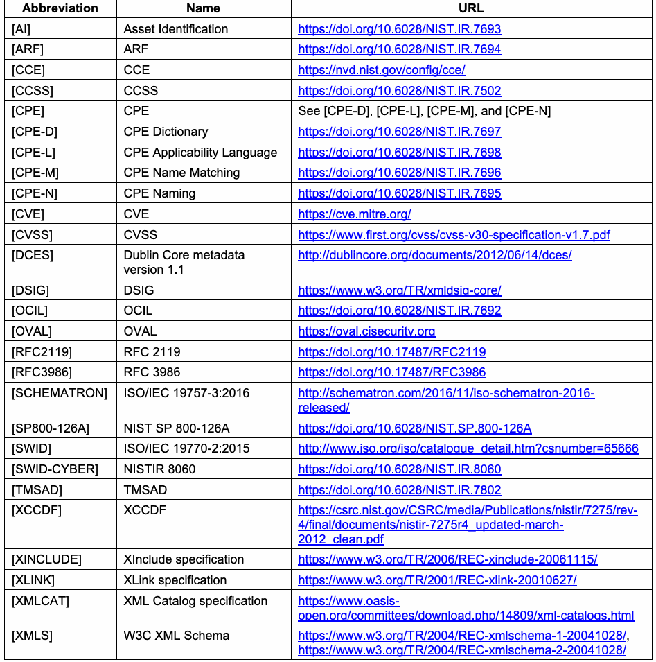
| 略語 | 名称 | URL |
| [AI] | 資産識別 | https://doi.org/10.6028/NIST.IR.7693 |
| [ARF] | ARF | https://doi.org/10.6028/NIST.IR.7694 |
| [CCE] | CCE | https://nvd.nist.gov/config/cce/ |
| [CCSS] | CCSS | https://doi.org/10.6028/NIST.IR.7502 |
| [CPE] | CPE | [CPE-D]、[CPE-L]、[CPE-M]、[CPE-N]を参照 |
| [CPE-D] | CPEディクショナリ | https://doi.org/10.6028/NIST.IR.7697 |
| [CPE-L] | CPE適用可能性言語 | https://doi.org/10.6028/NIST.IR.7698 |
| [CPE-M] | CPE名の照合 | https://doi.org/10.6028/NIST.IR.7696 |
| [CPE-N] | CPE命名 | https://doi.org/10.6028/NIST.IR.7695 |
| [CVE] | CVE | https://cve.mitre.org/ |
| [CVSS] | CVSS | https://www.first.org/cvss/cvss-v30-specification-v1.7.pdf |
| [DCES] | Dublin Coreメタデータ バージョン1.1 | http://dublincore.org/documents/2012/06/14/dces/ |
| [DSIG] | DSIG | https://www.w3.org/TR/xmldsig-core/ |
| [OCIL] | OCIL | https://doi.org/10.6028/NIST.IR.7692 |
| [OVAL] | OVAL | https://oval.cisecurity.org |
| [RFC2119] | RFC 2119 | https://doi.org/10.17487/RFC2119 |
| [RFC3986] | RFC 3986 | https://doi.org/10.17487/RFC3986 |
| [SCHEMATRON] | ISO/IEC 19757-3:2016 | http://schematron.com/2016/11/iso-schematron-2016- released/ |
| [SP800-126A] | NIST SP 800-126A | https://doi.org/10.6028/NIST.SP.800-126A |
| [SWID] | ISO/IEC 19770-2:2015 | http://www.iso.org/iso/catalogue_detail.htm?csnumber=65666 |
| [SWID-CYBER] | NISTIR 8060 | https://doi.org/10.6028/NIST.IR.8060 |
| [TMSAD] | TMSAD | https://doi.org/10.6028/NIST.IR.7802 |
| [XCCDF] | XCCDF | https://csrc.nist.gov/CSRC/media/Publications/nistir/7275/rev- 4/final/documents/nistir-7275r4_updated-march- 2012_clean.pdf |
| [XINCLUDE] | XInclude仕様 | https://www.w3.org/TR/2006/REC-xinclude-20061115/ |
| [XLINK] | XLink仕様 | https://www.w3.org/TR/2001/REC-xlink-20010627/ |
| [XMLCAT] | XML Catalog仕様 | https://www.oasis- open.org/committees/download.php/14809/xml-catalogs.html |
| [XMLS] | W3C XML Schema | https://www.w3.org/TR/2004/REC-xmlschema-1-20041028/, https://www.w3.org/TR/2004/REC-xmlschema-2-20041028/ |
Appendix E—Change Log
付録E—変更履歴
未レビュー訳Revision 3 Release 1 – 12 February 2018
改訂3 第1版リリース—2018年2月12日
未レビュー訳•Made minor editorial and formatting changes throughout document.
•文書全体にわたり、編集上および書式上の軽微な変更を実施。
未レビュー訳•Changed all use of “MUST” to “SHALL.”
•文書内の「MUST」をすべて「SHALL」に変更。
•Clarified that this document, its annex, and the set of schemas collectively define the SCAP version 1.3 specification, and explained how to reconcile any conflicts that may arise between this document, the annex, and the schemas.
•本書、別紙、およびスキーマ一式がSCAPバージョン1.3仕様を共同で定義することを明確化し、本書、別紙、スキーマの間で矛盾が生じた場合の調整方法を説明。
未レビュー訳•Added a reference to the SCAP style guidelines in NISTIR 8058.
•NISTIR 8058のSCAPスタイルガイドラインへの参照を追加。
•Expanded the explanations accompanying Figures 1 and 2.
•図1および図2の説明を拡充。
•Section 3.1.2 (Source Data Stream Collection Validation): Clarified the number of times a single data stream can reference a component from its data o stream collection. Revised material on Schematron schemas to be clearer and more precise. o
•セクション3.1.2（ソースデータストリームコレクションの検証）：単一のデータストリームが、そのデータストリームコレクション内の構成要素を参照できる回数を明確化。Schematronスキーマに関する記述を改訂し、明確さと正確さを向上。
未レビュー訳•Section 3.2 (XCCDF): Revised portions of Section 3.2.4.3 to indicate that source data streams may contain other o class definitions in addition to OVAL patch class definitions. Expanded Section 3.2.4.4 to provide more information about CVSS and CCSS usage. o Added a statement to Section 3.2.4.5 on use of the <xccdf:complex-choice> element o not being allowed.
•セクション3.2（XCCDF）：セクション3.2.4.3の一部を改訂し、ソースデータストリームにOVALパッチクラス定義以外のクラス定義を含められることを明示。CVSSおよびCCSSの使用に関する情報を提供するため、セクション3.2.4.4を拡充。<xccdf:complex-choice>要素の使用が許可されないことを、セクション3.2.4.5に追記。
未レビュー訳•Section 3.3 (OVAL): Clarified the explanation of dividing OVAL definitions into multiple components. o Revised the requirement involving the <oval:schema_version> content element and o the @xsi:schemaLocation attribute value for the OVAL schema. Added information on the use of the OVAL variable format. o
•セクション3.3（OVAL）：OVAL定義を複数の構成要素に分割する説明を明確化。OVALスキーマの<oval:schema_version>コンテンツ要素および@xsi:schemaLocation属性値に関する要件を改訂。OVAL変数形式の使用に関する情報を追加。
未レビュー訳•In Section 3.11 (XML Digital Signature), revised requirement 7 to clarify its applicability and explain how it must be achieved.
•セクション3.11（XMLデジタル署名）：要件7を改訂し、適用範囲を明確化するとともに、達成方法を説明。
未レビュー訳•Clarified language and revised requirements throughout Section 4.1 (Legacy Support).
•4.1節（レガシーサポート）全体にわたって文言を明確化し、要件を改訂。
•Added a footnote to Section 4.4.1 (The Component Reports) to provide an example of what an ARF report will include if multiple check components are executed.
•セクション4.4.1（コンポーネント報告）に脚注を追加し、複数のチェックコンポーネントが実行された場合にARFレポートに含まれる内容の例を示した。
未レビュー訳•In Section 4.5 (XCCDF Results), added a requirement to item 10 for specifying the , @role , and attributes of the element. @severity @weight <xccdf:rule-result>
•セクション4.5（XCCDF結果）では、項目10に、要素の , @role , および属性を指定する要件を追加した。@severity @weight <xccdf:rule-result>
未レビュー訳•Changed all instances of “check system” to “checking system” for consistency with other SCAP documents.
•他のSCAP文書との整合性のため、「check system」のすべての用例を「checking system」に変更した。
未レビュー訳Revision 3 Release 0 – 18 July 2016
改訂3 リリース0 – 18日 七月 2016年
未レビュー訳•Revised and reformatted front matter for the document.
•文書の前付を改訂し、書式を再構成した。
未レビュー訳•Added an errata table to the document for future use.
•今後の使用に備え、正誤表を文書に追加した。
•Made minor editorial and formatting changes throughout document.
•文書全体に軽微な編集上および書式上の変更を実施した。
未レビュー訳•Updated SCAP version from 1.2 to 1.3. Changes included the following: Added the Software Identification (SWID) Tags specification to SCAP and created a new o Section 3.6 with related requirements. Updated the CVSS specification version from 2.0 to 3.0. o Revised the property definition for the <ds:data-stream> element’s @scap-version o property in Table 3 to include “1.3” as a possible value. Revised Section 3.2.2, item 4 so that the <xccdf:Benchmark> element’s @style o attribute should have the value “SCAP_1.3” instead of “SCAP_1.2”.
•SCAPのバージョンを1.2から1.3に更新。変更には以下を含む：Software Identification（SWID）Tags仕様をSCAPに追加し、関連要件を含む新しいセクション3.6を作成。CVSS仕様のバージョンを2.0から3.0に更新。表3の<ds:data-stream>要素の@scap-versionプロパティの定義を改訂し、取り得る値として「1.3」を含めた。セクション3.2.2の項目4を改訂し、<xccdf:Benchmark>要素の@style属性の値を「SCAP_1.3」を設定することが望ましい（should）。「SCAP_1.2」ではなく。
未レビュー訳•Created the annex document (NIST SP 800-126A [SP800-126A]) and moved all OVAL version information there. Additional changes related to OVAL include the following:
•附属文書（NIST SP 800-126A [SP800-126A]）を作成し、OVALのすべてのバージョン情報をそこに移した。OVALに関する追加変更は以下のとおり：
Eliminated the “least version principle” approach. o Added a requirement to Section 3.3 of this document regarding the consistency of the o <oval:schema_version> element and the <xsi:schemaLocation> value for the OVAL schema. Changed the Section 4.6 (OVAL Results) requirement related to which version of the OVAL o Results schema each OVAL result data stream must validate against.
「最小バージョン原則」のアプローチを廃止。OVALスキーマに関する<oval:schema_version>要素と<xsi:schemaLocation>値の整合性について、この文書のセクション3.3に要件を追加。各OVAL結果データストリームがどのバージョンのOVAL Resultsスキーマに対して検証されなければならないか（must）に関するセクション4.6（OVAL結果）の要件を変更。
未レビュー訳•Section 2 (SCAP 1.3 Conformance): Changed the “Enumeration” component specification category to “Identification schemes.” o
•セクション2（SCAP 1.3適合性）：コンポーネント仕様のカテゴリ「Enumeration」を「Identification schemes」に変更。
未レビュー訳•Section 3.1 (SCAP Source Data Stream): Revised Figure 2 and the example below it to illustrate the current conventions for SCAP data o stream component references. Expanded the property definition in Table 8 for the <ds:component-ref> element’s o @href property to more clearly define the required URI form for referencing external content Rewrote the property definition in Table 9 for the <cat:catalog> element’s o @rewriteURI property Moved the details of the <cat:uri> element and the <cat:rewriteURI> element from o Table 9 (<cat:catalog>) to Table 10 and Table 11, respectively
•セクション3.1（SCAPソースデータストリーム）：SCAPデータストリームコンポーネント参照の現行規則を示すため、図2とその下の例を改訂。<ds:component-ref>要素の@hrefプロパティの必須URI形式をより明確に定義するため、表8のプロパティ定義を拡充。<cat:catalog>要素の@rewriteURIプロパティについて、表9のプロパティ定義を書き直し。<cat:uri>要素および<cat:rewriteURI>要素の詳細を表9（<cat:catalog>）からそれぞれ表10および表11に移動。
未レビュー訳•Section 3.2 (XCCDF): Modified wording in Section 3.2.4.2 on the <xccdf:check> element to clarify how the o use of checking systems other than OVAL and OCIL affects SCAP content Revised Section 3.2.4.3 to distinguish checking for patches using a rule that references o numerous patch class definitions versus a single OVAL definition
•セクション3.2（XCCDF）：チェックシステムのうちOVALおよびOCIL以外のものの使用がSCAPコンテンツに与える影響を明確にするため、<xccdf:check>要素に関するセクション3.2.4.2の文言を修正。多数のパッチクラス定義を参照するルールを用いたパッチ確認と、単一のOVAL定義を用いた確認とを区別するため、セクション3.2.4.3を改訂。
未レビュー訳•Section 4.1 (Legacy Support): Revised requirements related to legacy SCAP content and OVAL content. o
•セクション4.1（レガシーサポート）：レガシーSCAPコンテンツおよびOVALコンテンツに関する要件を改訂。
未レビュー訳•Section 4.4 (SCAP Result Data Streams): Expanded Section 4.4.3 on the source data stream to provide an additional requirement for o tailoring component usage and to include an example.
•セクション4.4（SCAP結果データストリーム）：ソースデータストリームに関するセクション4.4.3を拡充し、テーラリングコンポーネントの使用に関する要件を追加するとともに、例を含めた。
未レビュー訳•Section 4.5 (XCCDF Results): Expanded requirement 3 on <xccdf:benchmark> element attributes. o Created a new requirement 4 on the <xccdf:tailoring-file> element. o Created a new requirement 5 on the <xccdf:Profile> element. o Removed the example from requirement 10 (formerly requirement 8) and added a new o example after requirement 11. Revised the second paragraph of Section 4.5.2 and Table 23 on mapping OVAL results to o XCCDF results to take into account the @negate attribute of the <xccdf:check> element. Also added a new paragraph at the end of Section 4.5.2 to clarify the application of the @role attribute’s value to the rule result.
•セクション4.5（XCCDF結果）：<xccdf:benchmark>要素の属性に関する要件3を拡充。<xccdf:tailoring-file>要素に関する新しい要件4を作成。<xccdf:Profile>要素に関する新しい要件5を作成。要件10（旧要件8）から例を削除し、要件11の後に新しい例を追加。OVAL結果をXCCDF結果に対応付けるセクション4.5.2の第二段落および表23を改訂し、<xccdf:check>要素の@negate属性を考慮。さらに、ルール結果への@role属性値の適用を明確にするため、セクション4.5.2の末尾に新しい段落を追加。
未レビュー訳•Appendix D (Normative References): Changed URLs to point directly to specification locations. o Moved the contents of the original Table 22 on schema and Schematron file locations to o NIST SP 800-126A.
•付録D（規範的参照）：仕様の該当箇所を直接指すようURLを変更。スキーマおよびSchematronファイルの場所に関する元の表22の内容をNIST SP 800-126Aに移動。
未レビュー訳Revision 2 Release 1 – 28 September 2011
改訂2 リリース1 – 28日 九月 2011年
未レビュー訳•Final version released.
•最終版を公開。
未レビュー訳•Made editorial changes throughout document, including extensive addition of cross references.
•相互参照の大幅な追加を含め、文書全体に編集上の変更を実施。
•Section 3.1 (SCAP Source Data Stream): Improved explanations of source data streams; added XML example and updated diagrams. o Added @schematron-version attribute to <ds:data-stream-collection>. o
•セクション3.1（SCAPソースデータストリーム）：ソースデータストリームの説明を改善し、XMLの例を追加して図を更新。<ds:data-stream-collection>に@schematron-version属性を追加。
未レビュー訳Added <ds:Tailoring> element to <ds:component> (was previously being treated as o an element of <ds:extended-component>). Expanded the discussion of Schematron files. o Added conventions for globally unique identifiers for <scap:data-stream-o collection>, <scap:data-stream>, <scap:component-ref>, <scap:component>, and <scap:extended-component>.
<ds:component>に<ds:Tailoring>要素を追加（以前は<ds:extended-component>の要素として扱われていた）。Schematronファイルに関する説明を拡充。<scap:data-stream-collection>、<scap:data-stream>、<scap:component-ref>、<scap:component>、および<scap:extended-component>のグローバルに一意な識別子に関する規則を追加。
未レビュー訳•Section 3.2 (XCCDF): Prohibited use of XInclude elements in XCCDF content, use of the <xccdf:set-o complex-value> element within the <xccdf:Profile> element, and use of XCCDF group extension. Clarified use of <xccdf:ident> elements and added the @con:negate attribute. o Clarified use of <xccdf:check-content-ref> elements. o
•セクション3.2（XCCDF）：XCCDFコンテンツ内のXInclude要素、<xccdf:Profile>要素内の<xccdf:set-complex-value>要素、およびXCCDFグループ拡張の使用を禁止。<xccdf:ident>要素の使用を明確化し、@con:negate属性を追加。<xccdf:check-content-ref>要素の使用を明確化。
未レビュー訳•Section 4.1 (Legacy Support): Added explicit information and requirements regarding deprecated constructs in SCAPo component specifications.
•セクション4.1（レガシーサポート）：SCAPコンポーネント仕様の非推奨構成要素に関する明示的な情報と要件を追加。
未レビュー訳•Section 4.2 (Source Data Streams): Added a Schematron requirement. o Clarified what warnings tools must issue for an unrecognized <ds:extended-o component>.
•セクション4.2（ソースデータストリーム）：Schematron要件を追加。認識されない<ds:extended-component>に対してツールが発する必要のある警告を明確化（must）。
未レビュー訳•Section 4.3 (XCCDF Processing): Clarified the CPE applicability processing requirements.o Clarified requirements regarding the use of checking systems not supported by SCAP. o
•セクション4.3（XCCDF処理）：CPE適用可能性の処理要件を明確化。SCAPがサポートしないチェックシステムの使用に関する要件を明確化。
未レビュー訳•Section 4.4 (SCAP Result Data Streams): Added an ARF example. o Added an scap-ref:associatedWith relationship requirement for ARF reports. o
•セクション4.4（SCAP結果データストリーム）：ARFの例を追加。ARFレポートに対するscap-ref:associatedWith関係の要件を追加。
未レビュー訳•Section 4.5 (XCCDF Results): Deleted several facts from the XCCDF Fact Descriptions table. o Deleted redundant requirements (present in the latest XCCDF specification). o Clarified processing of <xccdf:ident> elements and added the @con:negate attribute. o Removed the requirements for the FDCC XCCDF results format. o
•セクション4.5（XCCDF結果）：XCCDF事実記述表から複数の事実を削除。最新のXCCDF仕様に含まれる重複要件を削除。<xccdf:ident>要素の処理を明確化し、@con:negate属性を追加。FDCC XCCDF結果形式の要件を削除。
未レビュー訳•Section 5 (Source Data Stream Content Requirements for Use Cases): Removed the OVAL-only use case. o
•セクション5（ユースケースに関するソースデータストリームコンテンツ要件）：OVALのみのユースケースを削除。
未レビュー訳•Appendices: Added a new Appendix A containing security considerations for this version of SCAP. o Added a new Appendix C containing a glossary with key terms. o Added a list of SCAP schema and Schematron file locations to Appendix D. o
•付録：この版のSCAPに関するセキュリティ上の考慮事項を含む新しい付録Aを追加。主要用語の用語集を含む新しい付録Cを追加。SCAPスキーマおよびSchematronファイルの場所の一覧を付録Dに追加。
未レビュー訳Revision 2 Release 0 – 12 July 2011
改訂2 リリース0 – 12日 七月 2011年
未レビュー訳•Complete draft specification for version 1.2 released for public comment.
•バージョン1.2の仕様草案全体を公開コメント用に公開。
未レビュー訳•Made editorial changes throughout the document.
•文書全体に編集上の変更を実施。
•Added the following component specifications to SCAP: ARF 1.1, Asset Identification 1.1, CCSS 1.0, and TMSAD 1.0. Updated the following component specifications from SCAP 1.1: XCCDF from 1.1.4 to 1.2; OVAL from 5.8 to 5.10; and CPE from 2.2 to 2.3. Added and revised requirements throughout the specification to use these component specification versions.
•以下のコンポーネント仕様をSCAPに追加：ARF 1.1、Asset Identification 1.1、CCSS 1.0、およびTMSAD 1.0。SCAP 1.1から次のコンポーネント仕様を更新：XCCDFを1.1.4から1.2へ、OVALを5.8から5.10へ、CPEを2.2から2.3へ。これらのコンポーネント仕様のバージョンを使用するための要件を仕様全体に追加および改訂。
•In Section 2, rewrote the conformance requirements and defined “content producer” and “content consumer” terms.
•セクション2で適合要件を書き直し、「content producer」および「content consumer」の用語を定義。
未レビュー訳•Section 3:
•セクション3：
Added an SCAP source data stream subsection and a subsection on digitally signing source o data stream content. Added identifier use requirements for <xccdf:Rule> and <xccdf:ident> elements. o Added requirements for the <xccdf:Value> element. o Added requirements related to Schematron rules. o
SCAPソースデータストリームの小節、およびソースデータストリームコンテンツへのデジタル署名に関する小節を追加。<xccdf:Rule>要素および<xccdf:ident>要素の識別子使用要件を追加。<xccdf:Value>要素の要件を追加。Schematronルールに関連する要件を追加。
未レビュー訳•Section 4: Revised legacy support requirements for SCAP content and OVAL definition documents. o Added an SCAP result data stream subsection. Added source and result data stream o requirements throughout the section. Also added a subsection on digitally signing result data stream content. Added a declaration of the FDCC Reporting Format. o
•セクション4：SCAPコンテンツおよびOVAL定義文書に関するレガシーサポート要件を改訂。SCAP結果データストリームの小節を追加。このセクション全体にソースおよび結果データストリームの要件を追加。また、結果データストリームコンテンツへのデジタル署名に関する小節も追加。FDCC Reporting Formatの宣言を追加。
未レビュー訳•In Section 5, added malware detection material to the Inventory Scanning use case.
•セクション5では、Inventory Scanningユースケースにマルウェア検出に関する内容を追加。
未レビュー訳•Updated the normative references.
•規範的参照を更新。
•Added Appendix C (change log).
•付属書C（変更履歴）を追加。